Validation#
Each check below is a test of tests/validation/. It compares a computation
with a reference that HydroModPy did not produce: a closed-form solution, a
published MODFLOW 6 example, a manufactured solution, or a parameter that a
calibration must find again.
For every check the page gives the reference and its equations, the threshold with the size of the signal it is read against, the value the last recorded run measured, the outcome, and the date and commit of that run. A skipped test is shown as skipped: it proves nothing. Where a threshold lets a known discrepancy through, the case says so in a warning box at its top.
The measures come from a results snapshot committed next to this page,
docs/source/theory/validation_results.json. When the site is deployed, the
results the nightly jobs uploaded for the branch, if any, replace older ones.
Each case gives the date and commit of the run its numbers come from. “When the
checks run” below lists the jobs, read from the workflow files, and the checks
that no job runs.
53 test files, 78 test functions, 35 benchmark cases. The results snapshot holds 190 test results from 2 runs (2026-10-12 to 2026-10-13): 190 pass.
When the checks run#
Read from .github/workflows/. A job runs a file when one of its paths holds it and its marker expression accepts the markers of the file. A test marked petsc is skipped where petsc4py is not installed. The nightly jobs upload what they measured. The deployed page lays the latest nightly results of its branch over the snapshot committed with the documentation.
| Job | When | Selects | petsc4py |
|---|---|---|---|
Nightly / validation PETScci-nightly-petsc.yml | every day at 05:30 UTC on main, dev | tests/validation/ with -m "petsc" | yes |
Nightly / validation no PETScci-nightly.yml | every day at 05:00 UTC on main, dev | tests/validation/ with -m "not petsc" | no |
Weekly / Cross Platformci-weekly.yml | every Sunday at 05:00 UTC | tests/validation/analytical/ with -m "not petsc" | no |
Tests / fast markermain-ci.yml | on every push to main, dev; on every pull request | tests with -m "fast" | no |
Solver / PETSc smoke Linuxpetsc-smoke.yml | every Monday at 04:17 UTC; on every push to main, dev that touches listed paths; on every pull request that touches listed paths | tests/unit/solver/test_boussinesq_method_catalog.py tests/unit/validation/test_dupuit_fixed_head_petsc_alias.py tests/validation/analytical/steady/test_dupuit_fixed_head_petsc_1d.py tests/validation/numerical/transient/test_boussinesq_drying_petsc.py tests/validation/numerical/transient/test_boussinesq_hillslope_recharge_pulse_overflow_petsc.py | yes |
Case by solver#
Each cell is the largest share of its threshold that a metric used in the last recorded run of that solver: 50 % means the worst metric sat at half its threshold. A metric that must stay above its threshold counts the share of the margin it used between its ideal value and the threshold. skipped and not measured prove nothing. A cross marks a failure. gap marks a known discrepancy that the threshold lets through; the section of the case explains it. other gathers the solvers outside these columns and the tests that name none. The columns are modflow_nwt, modflow6, modflow6_irregular_tri, modflow6_voronoi, boussinesq and boussinesq_local.
under a quarter of the threshold a quarter to half half to three quarters three quarters to the threshold over the threshold
Closed-form solutions, steady state#
Steady Boussinesq circular-island piecewise-K case#
pass, known gap end to endmodflow_nwtmodflow6modflow6_irregular_trimodflow6_voronoiboussinesqboussinesq_local
Known gap: modflow6_voronoi
Known gap. MODFLOW 6 on the Voronoi dual sits 0.12 to 0.17 m below the reference inside 120 m (radial RMSE 0.12 m). Two errors add up there. The K zone boundaries (70 m and 140 m) pass through node rings, so those cells straddle two zones and take an area-weighted K: without Newton the same input files give 0.076 m, the heads 0.08 to 0.11 m too low inside 120 m and 0.05 m too high on the 140 m ring. Under Newton, the saturation of the upstream cell lowers them further, first order on rings 10 to 30 m apart. Until 2026-10-12 the top was the DEM, and the full-thickness weighting of the Newton conductance raised the heads, which offset the straddled zones: 0.056 m. MODFLOW 6 now reads a computational top that gives every cell the same thickness, and that offset is gone.
Compared with: steady radial Boussinesq solution with concentric piecewise K.
Last measurement
| Variant | Metric | Measured | Threshold | Share used | Share of the signal |
|---|---|---|---|---|---|
| modflow_nwt pass | Radial head-profile RMSE | 0.0284 m | < 0.35 m | 8% | 1.1% / 13.9% |
| Radial head-profile max abs error | 0.0545 m | < 0.7 m | 8% | 2.2% / 27.9% | |
| Azimuthal spread | 0.0816 m | < 0.35 m | 23% | 3.3% / 13.9% | |
| Minimum land freeboard | 0.91 m | >= 0.1 m | 11% | 36.2% / 4.0% | |
| modflow6 pass | Radial head-profile RMSE | 0.0282 m | < 0.057 m | 50% | 1.1% / 2.3% |
| Radial head-profile max abs error | 0.0546 m | < 0.11 m | 50% | 2.2% / 4.4% | |
| Azimuthal spread | 0.0817 m | < 0.17 m | 48% | 3.3% / 6.8% | |
| Minimum land freeboard | 0.91 m | >= 0.45 m | 49% | 36.2% / 17.9% | |
| modflow6_irregular_tri pass | Radial head-profile RMSE | 0.0541 m | < 0.35 m | 15% | 2.2% / 13.9% |
| Radial head-profile max abs error | 0.118 m | < 0.7 m | 17% | 4.7% / 27.9% | |
| Azimuthal spread | 0.118 m | < 0.35 m | 34% | 4.7% / 13.9% | |
| Minimum land freeboard | 0.922 m | >= 0.1 m | 11% | 36.7% / 4.0% | |
| modflow6_voronoi pass, known gap | Radial head-profile RMSE | 0.12 m | < 0.133 m | 91% | 4.6% / 5.1% |
| Radial head-profile max abs error | 0.173 m | < 0.19 m | 91% | 6.6% / 7.2% | |
| Azimuthal spread | 5.23e-05 m | < 0.00011 m | 48% | 0.0% / 0.0% | |
| Minimum land freeboard | 1.99 m | >= 1.78 m | 90% | 75.5% / 67.7% | |
| boussinesq pass | Radial head-profile RMSE | 0.0236 m | < 0.048 m | 49% | 0.9% / 1.9% |
| Radial head-profile max abs error | 0.0313 m | < 0.063 m | 50% | 1.2% / 2.5% | |
| Azimuthal spread | 0.0436 m | < 0.088 m | 50% | 1.7% / 3.4% | |
| Minimum land freeboard | 1.96 m | >= 0.98 m | 50% | 76.4% / 38.2% | |
| boussinesq_local pass | Radial head-profile RMSE | 0.0236 m | < 0.048 m | 49% | 0.9% / 1.9% |
| Radial head-profile max abs error | 0.0313 m | < 0.063 m | 50% | 1.2% / 2.5% | |
| Azimuthal spread | 0.0436 m | < 0.088 m | 50% | 1.7% / 3.4% | |
| Minimum land freeboard | 1.96 m | >= 0.98 m | 50% | 76.4% / 38.2% |
Measured on 2026-10-12, commit 427d8bb47 with uncommitted changes, version 2.0.0a4, a local run; 2026-10-13, commit 91d97cabd, version 2.0.0a5, the nightly CI job (job log). The last column gives the measured value and the threshold as shares of the head range of the reference, 2.51 to 2.63 m.
referenceNWTMF6MF6 triangles
referenceMF6 Voronoi
referenceBoussinesqBoussinesq default
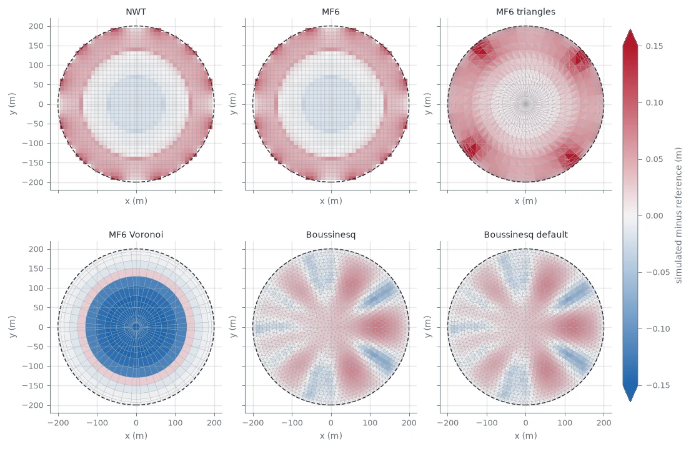
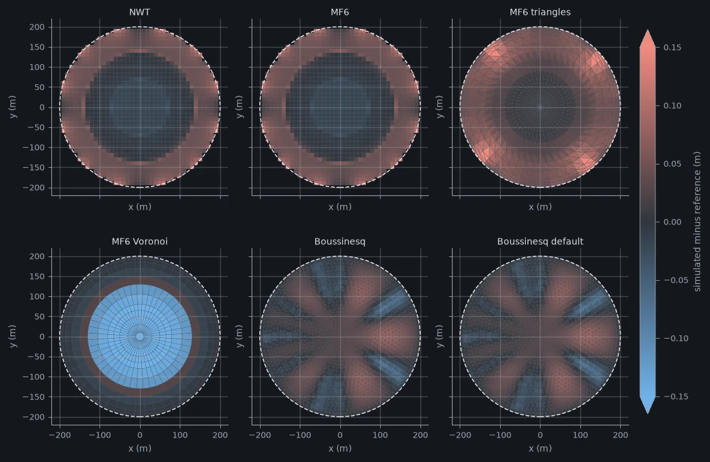
Why these thresholds
- Thresholds of
boussinesq: Twice the error measured with PETSc (SNESVI obstacle) on the triangles themselves, the reference at each centroid: radial RMSE 0.024 m, max error 0.031 m, spread of the error in a 10 m bin 0.044 m, and half the measured freeboard of 1.96 m. PETSc and the default engine agree to 1e-3 m. The mesh has near-equilateral triangles of 10 m with a node ring on each K break (70 and 140 m) and on the coast, and one ring of ocean triangles held at the sea level. The ring mesh it replaces (16 sectors cut along one diagonal, half of its ocean triangles capped at the sea floor) read 0.22 m. - Thresholds of
boussinesq_local: Twice the error measured with the default 'auto' engine (scipy_sparse on 3155 cells) on the triangles themselves, the reference at each centroid: radial RMSE 0.024 m, max error 0.031 m, spread of the error in a 10 m bin 0.044 m, and half the measured freeboard of 1.96 m. PETSc and the default engine agree to 1e-3 m. The mesh has near-equilateral triangles of 10 m with a node ring on each K break (70 and 140 m) and on the coast, and one ring of ocean triangles held at the sea level. The ring mesh it replaces (16 sectors cut along one diagonal, half of its ocean triangles capped at the sea floor) read 0.22 m. - Thresholds of
modflow6: Twice the error measured on the 10 m grid: radial RMSE 0.0282 m, max error 0.0546 m, spread 0.0817 m, and half the measured freeboard of 0.910 m. MODFLOW 6 reads a computational top that gives every cell of the layer the same thickness, so its Newton conductance is the one of MODFLOW-NWT, and the two sit at the same distance from the reference (NWT 0.0284 m). What is left is the error of the grid. On a 5 m grid the RMSE falls to 0.0166 m and the max error to 0.0349 m, for MF6 and NWT alike; the spread stays at 0.083 m and the freeboard drops to 0.755 m. Until 2026-10-12 the top was the DEM and the RMSE 0.111 m. - Thresholds of
modflow6_voronoi: Measured values with a 10 % margin: radial RMSE 0.1205 m, max error 0.173 m, freeboard 1.99 m. Twice the azimuthal spread of 5.2e-5 m: every cell of the coast ring holds the sea level, so the rings are symmetric. The run reads a 1 m raster whose shoreline lies 1 m inside the coast ring (config_modflow6_voronoi.toml). The profile is read on the node rings (5 m bins). The freeboard is read on the land surface the run was given, at the 196 m ring. This case cannot see the DEM-top bias come back, since that bias lowered its error; the Cartesian islands and tests/integration/test_the_computational_top_changes_only_the_mf6_grid.py do. - Radial head-profile RMSE:
modflow_nwtallows 0.35, 7 times the 0.048 ofboussinesq. No reason is written for this difference. - Radial head-profile RMSE:
modflow6_irregular_triallows 0.35, 7 times the 0.048 ofboussinesq. No reason is written for this difference. - Radial head-profile max abs error:
modflow_nwtallows 0.7, 11 times the 0.063 ofboussinesq. No reason is written for this difference. - Radial head-profile max abs error:
modflow6_irregular_triallows 0.7, 11 times the 0.063 ofboussinesq. No reason is written for this difference. - Azimuthal spread:
modflow_nwtallows 0.35, 3182 times the 0.00011 ofmodflow6_voronoi. No reason is written for this difference. - Azimuthal spread:
modflow6_irregular_triallows 0.35, 3182 times the 0.00011 ofmodflow6_voronoi. No reason is written for this difference.
Schedule. modflow_nwt, modflow6, modflow6_irregular_tri, modflow6_voronoi, boussinesq_local: runs in Nightly / validation no PETSc, Weekly / Cross Platform, Tests / fast marker. boussinesq: runs in Nightly / validation PETSc (skipped in Tests / fast marker: no petsc4py there). Jobs.
What the test does, all thresholds, the file
| Threshold | modflow_nwt | modflow6 | modflow6_irregular_tri | modflow6_voronoi | boussinesq | boussinesq_local |
|---|---|---|---|---|---|---|
| Radial head-profile RMSE (m) < | 0.35 | 0.057 | 0.35 | 0.133 | 0.048 | 0.048 |
| Radial head-profile max abs error (m) < | 0.7 | 0.11 | 0.7 | 0.19 | 0.063 | 0.063 |
| Azimuthal spread (m) < | 0.35 | 0.17 | 0.35 | 0.00011 | 0.088 | 0.088 |
From validation_cases/analytical/steady/boussinesq_circular_island_piecewise_k_2d/: modflow_nwt reads tolerances.toml, modflow6 reads tolerances_modflow6.toml, modflow6_irregular_tri reads tolerances.toml, modflow6_voronoi reads tolerances_modflow6_voronoi.toml, boussinesq reads tolerances_boussinesq.toml, boussinesq_local reads tolerances_boussinesq_local.toml.
Run it alone: python -m validation_cases.analytical.steady.boussinesq_circular_island_piecewise_k_2d.run_case
Test functions
- Boussinesq circular island piecewise k 2d matches reference profile.
File tests/validation/analytical/steady/test_boussinesq_circular_island_piecewise_k_2d.py. Markers: analytical, fast, steady, validation.
Steady Boussinesq divide piecewise-K case#
pass end to endmodflow_nwtmodflow6modflow6_irregular_triboussinesqboussinesq_local
Compared with: steady 1D Boussinesq profile with west divide, east fixed head, and piecewise K.
Last measurement
| Variant | Metric | Measured | Threshold | Share used | Share of the signal |
|---|---|---|---|---|---|
| modflow_nwt pass | Head-profile RMSE | 0.00833 m | < 0.017 m | 49% | 0.4% / 0.8% |
| Head-profile max abs error | 0.0107 m | < 0.022 m | 49% | 0.5% / 1.1% | |
| Cross-row head spread | 0 m | < 1e-05 m | 0% | 0.0% / 0.0% | |
| modflow6 pass | Head-profile RMSE | 0.00788 m | < 0.017 m | 46% | 0.4% / 0.8% |
| Head-profile max abs error | 0.0102 m | < 0.022 m | 46% | 0.5% / 1.1% | |
| Cross-row head spread | 3.11e-06 m | < 1e-05 m | 31% | 0.0% / 0.0% | |
| modflow6_irregular_tri pass | Head-profile RMSE | 0.012 m | < 0.024 m | 50% | 0.6% / 1.2% |
| Head-profile max abs error | 0.0171 m | < 0.035 m | 49% | 0.8% / 1.7% | |
| Cross-row head spread | 8.88e-16 m | < 1e-09 m | 0% | 0.0% / 0.0% | |
| boussinesq pass | Head-profile RMSE | 6.75e-05 m | < 0.00014 m | 48% | 0.0% / 0.0% |
| Head-profile max abs error | 0.000109 m | < 0.00022 m | 50% | 0.0% / 0.0% | |
| Cross-row head spread | 0 m | < 1e-08 m | 0% | 0.0% / 0.0% | |
| boussinesq_local pass | Head-profile RMSE | 6.75e-05 m | < 0.00014 m | 48% | 0.0% / 0.0% |
| Head-profile max abs error | 0.000109 m | < 0.00022 m | 50% | 0.0% / 0.0% | |
| Cross-row head spread | 0 m | < 1e-07 m | 0% | 0.0% / 0.0% |
Measured on 2026-10-12, commit 427d8bb47 with uncommitted changes, version 2.0.0a4, a local run; 2026-10-13, commit 91d97cabd, version 2.0.0a5, the nightly CI job (job log). The last column gives the measured value and the threshold as shares of the head range of the reference, 2.04 to 2.05 m.
reference of each runNWTMF6MF6 trianglesBoussinesqBoussinesq default
Why these thresholds
- Thresholds of
modflow_nwt,modflow6: Twice the error measured on the 40-column grid, MODFLOW-NWT and MODFLOW 6 alike: RMSE 8.3e-3 m, max error 1.1e-2 m. Both upstream-weight the saturated thickness between cells, a first-order scheme: refining the grid by 2 halves the error. The heads are posed where the model holds them, at the centres of the boundary cells. The row spread bound is 0.1 times the MODFLOW 6 head closure (1e-4 m). - Thresholds of
boussinesq: Twice the error measured with PETSc VI on 40 columns; PETSc and the local engine agree to 1e-8 m: RMSE 6.7e-05 m, max error 0.00011 m. The strip splits each 10 m square into two right triangles, the diagonal alternating like a checkerboard. On it the solver reproduces the h^2 profile at the triangle centroids to 1e-8 m (checked cell by cell with recharge), far below the MODFLOW band of this case. What is left comes from the column average of two triangles, centroids at dx/3 and 2 dx/3, against the reference at the column centre. The heads sit at the centroid of the triangle that owns a side edge, dx/3 inside the face. The run goes through the launcher. Before 2026-10-09 the strip had one diagonal everywhere and read a RMSE of 9.4e-2 m. The launcher stores one profile per column and the loader tiles it: the row spread is zero by construction. The strip is uniform across rows, so a row spread is solver noise: PETSc reads below 1e-14 m; the bound is 1e-8 m. - Thresholds of
boussinesq_local: Twice the error measured with the default local engine on 40 columns; PETSc and the local engine agree to 1e-8 m: RMSE 6.7e-05 m, max error 0.00011 m. The strip splits each 10 m square into two right triangles, the diagonal alternating like a checkerboard. On it the solver reproduces the h^2 profile at the triangle centroids to 1e-8 m (checked cell by cell with recharge), far below the MODFLOW band of this case. What is left comes from the column average of two triangles, centroids at dx/3 and 2 dx/3, against the reference at the column centre. The heads sit at the centroid of the triangle that owns a side edge, dx/3 inside the face. The run goes through the launcher. Before 2026-10-09 the strip had one diagonal everywhere and read a RMSE of 9.4e-2 m. The launcher stores one profile per column and the loader tiles it: the row spread is zero by construction. The strip is uniform across rows, so a row spread is solver noise: the local engine reads below 1e-8 m (its head closure is 1e-9 m); the bound is 1e-7 m. - Thresholds of
modflow6_irregular_tri: Twice the error measured on the 176-triangle strip: RMSE 1.2e-2 m, max error 1.7e-2 m. The heads are posed at the mean centroid of the triangles that own a boundary edge, and the reference is averaged over the same x bins as the model. The row spread is zero by construction: the loader tiles one profile.
Schedule. modflow_nwt, modflow6, modflow6_irregular_tri, boussinesq_local: runs in Nightly / validation no PETSc, Weekly / Cross Platform, Tests / fast marker. boussinesq: runs in Nightly / validation PETSc (skipped in Tests / fast marker: no petsc4py there). Jobs.
What the test does, all thresholds, the file
| Threshold | modflow_nwt | modflow6 | modflow6_irregular_tri | boussinesq | boussinesq_local |
|---|---|---|---|---|---|
| Head-profile RMSE (m) < | 0.017 | 0.017 | 0.024 | 0.00014 | 0.00014 |
| Head-profile max abs error (m) < | 0.022 | 0.022 | 0.035 | 0.00022 | 0.00022 |
| Cross-row head spread (m) < | 1e-05 | 1e-05 | 1e-09 | 1e-08 | 1e-07 |
From validation_cases/analytical/steady/boussinesq_divide_fixed_head_piecewise_k_1d/: modflow_nwt reads tolerances.toml, modflow6 reads tolerances.toml, modflow6_irregular_tri reads tolerances_modflow6_irregular_tri.toml, boussinesq reads tolerances_boussinesq.toml, boussinesq_local reads tolerances_boussinesq_local.toml.
Run it alone: python -m validation_cases.analytical.steady.boussinesq_divide_fixed_head_piecewise_k_1d.run_case
Test functions
- Boussinesq divide fixed head piecewise k 1d matches reference profile.
File tests/validation/analytical/steady/test_boussinesq_divide_fixed_head_piecewise_k_1d.py. Markers: analytical, fast, steady, validation.
Steady Boussinesq fixed-head piecewise-K case#
pass end to endmodflow_nwtmodflow6modflow6_irregular_triboussinesqboussinesq_local
Compared with: steady 1D Boussinesq profile with piecewise-constant K.
Last measurement
| Variant | Metric | Measured | Threshold | Share used | Share of the signal |
|---|---|---|---|---|---|
| modflow_nwt pass | Head-profile RMSE | 0.00353 m | < 0.0075 m | 47% | 0.1% / 0.1% |
| Head-profile max abs error | 0.00603 m | < 0.013 m | 46% | 0.1% / 0.3% | |
| Cross-row head spread | 0 m | < 1e-05 m | 0% | 0.0% / 0.0% | |
| modflow6 pass | Head-profile RMSE | 0.00349 m | < 0.0075 m | 47% | 0.1% / 0.1% |
| Head-profile max abs error | 0.00596 m | < 0.013 m | 46% | 0.1% / 0.3% | |
| Cross-row head spread | 1.03e-06 m | < 1e-05 m | 10% | 0.0% / 0.0% | |
| modflow6_irregular_tri pass | Head-profile RMSE | 0.00422 m | < 0.0085 m | 50% | 0.1% / 0.2% |
| Head-profile max abs error | 0.0119 m | < 0.024 m | 50% | 0.2% / 0.5% | |
| Cross-row head spread | 8.88e-16 m | < 1e-09 m | 0% | 0.0% / 0.0% | |
| boussinesq pass | Head-profile RMSE | 4.88e-05 m | < 9.8e-05 m | 50% | 0.0% / 0.0% |
| Head-profile max abs error | 0.000109 m | < 0.00022 m | 49% | 0.0% / 0.0% | |
| Cross-row head spread | 8.88e-16 m | < 1e-08 m | 0% | 0.0% / 0.0% | |
| boussinesq_local pass | Head-profile RMSE | 4.88e-05 m | < 9.8e-05 m | 50% | 0.0% / 0.0% |
| Head-profile max abs error | 0.000109 m | < 0.00022 m | 49% | 0.0% / 0.0% | |
| Cross-row head spread | 8.88e-16 m | < 1e-07 m | 0% | 0.0% / 0.0% |
Measured on 2026-10-12, commit 427d8bb47 with uncommitted changes, version 2.0.0a4, a local run; 2026-10-13, commit 91d97cabd, version 2.0.0a5, the nightly CI job (job log). The last column gives the measured value and the threshold as shares of the head range of the reference, 4.97 to 5 m.
reference of each runNWTMF6MF6 trianglesBoussinesqBoussinesq default
Why these thresholds
- Thresholds of
modflow_nwt,modflow6: Twice the error measured on the 40-column grid, MODFLOW-NWT and MODFLOW 6 alike: RMSE 3.5e-3 m, max error 6.0e-3 m. Both upstream-weight the saturated thickness between cells, a first-order scheme: refining the grid by 2 halves the error. The heads are posed where the model holds them, at the centres of the boundary cells. The row spread bound is 0.1 times the MODFLOW 6 head closure (1e-4 m). - Thresholds of
boussinesq: Twice the error measured with PETSc VI on 40 columns; PETSc and the local engine agree to 1e-8 m: RMSE 4.9e-05 m, max error 0.00011 m. The strip splits each 10 m square into two right triangles, the diagonal alternating like a checkerboard. On it the solver reproduces the h^2 profile at the triangle centroids to 1e-8 m (checked cell by cell with recharge), far below the MODFLOW band of this case. What is left comes from the column average of two triangles, centroids at dx/3 and 2 dx/3, against the reference at the column centre. The heads sit at the centroid of the triangle that owns a side edge, dx/3 inside the face. The K zones change on column faces. Before 2026-10-09 this strip had one diagonal everywhere: the x conductance came out about 7 % low, which a fixed-head profile hides but a recharge mound shows (5 to 7 cm). The strip is uniform across rows, so a row spread is solver noise: PETSc reads below 1e-14 m; the bound is 1e-8 m. - Thresholds of
boussinesq_local: Twice the error measured with the default local engine on 40 columns; PETSc and the local engine agree to 1e-8 m: RMSE 4.9e-05 m, max error 0.00011 m. The strip splits each 10 m square into two right triangles, the diagonal alternating like a checkerboard. On it the solver reproduces the h^2 profile at the triangle centroids to 1e-8 m (checked cell by cell with recharge), far below the MODFLOW band of this case. What is left comes from the column average of two triangles, centroids at dx/3 and 2 dx/3, against the reference at the column centre. The heads sit at the centroid of the triangle that owns a side edge, dx/3 inside the face. The K zones change on column faces. Before 2026-10-09 this strip had one diagonal everywhere: the x conductance came out about 7 % low, which a fixed-head profile hides but a recharge mound shows (5 to 7 cm). The strip is uniform across rows, so a row spread is solver noise: the local engine reads below 1e-8 m (its head closure is 1e-9 m); the bound is 1e-7 m. - Thresholds of
modflow6_irregular_tri: Twice the error measured on the 176-triangle strip: RMSE 4.2e-3 m, max error 1.2e-2 m. The heads are posed at the mean centroid of the triangles that own a boundary edge, and the reference is averaged over the same x bins as the model. The row spread is zero by construction: the loader tiles one profile.
Schedule. modflow_nwt, modflow6, modflow6_irregular_tri, boussinesq_local: runs in Nightly / validation no PETSc, Weekly / Cross Platform, Tests / fast marker. boussinesq: runs in Nightly / validation PETSc (skipped in Tests / fast marker: no petsc4py there). Jobs.
What the test does, all thresholds, the file
| Threshold | modflow_nwt | modflow6 | modflow6_irregular_tri | boussinesq | boussinesq_local |
|---|---|---|---|---|---|
| Head-profile RMSE (m) < | 0.0075 | 0.0075 | 0.0085 | 9.8e-05 | 9.8e-05 |
| Head-profile max abs error (m) < | 0.013 | 0.013 | 0.024 | 0.00022 | 0.00022 |
| Cross-row head spread (m) < | 1e-05 | 1e-05 | 1e-09 | 1e-08 | 1e-07 |
From validation_cases/analytical/steady/boussinesq_fixed_head_piecewise_k_1d/: modflow_nwt reads tolerances.toml, modflow6 reads tolerances.toml, modflow6_irregular_tri reads tolerances_modflow6_irregular_tri.toml, boussinesq reads tolerances_boussinesq.toml, boussinesq_local reads tolerances_boussinesq_local.toml.
Run it alone: python -m validation_cases.analytical.steady.boussinesq_fixed_head_piecewise_k_1d.run_case
Test functions
- Boussinesq fixed head piecewise k 1d matches reference profile.
File tests/validation/analytical/steady/test_boussinesq_fixed_head_piecewise_k_1d.py. Markers: analytical, fast, steady, validation.
Steady Boussinesq hillslope-interception benchmark#
pass boussinesqboussinesq_local
Compared with: the exact steady free-boundary solution under Dupuit. Below the emergence point x_e the head is the land surface and seeps out; above it all the recharge flows through the aquifer and the water table meets the surface tangentially at x_e (322.4 m here).
Last measurement
| Variant | Metric | Measured | Threshold | Share used | Share of the signal |
|---|---|---|---|---|---|
| boussinesq pass | Head-profile RMSE | 0.00655 m | < 0.013 m | 50% | 0.2% / 0.5% |
| Head-profile max abs error | 0.0375 m | < 0.075 m | 50% | 1.4% / 2.8% | |
| Interception x error | 3.4 m | < 8.4 m | 40% | 127.6% / 315.3% | |
| Maximum positive clearance above topography | 0 m | < 1e-06 m | 0% | 0.0% / 0.0% | |
| Cross-row head spread | 8.88e-16 m | < 1e-08 m | 0% | 0.0% / 0.0% | |
| boussinesq_local pass | Head-profile RMSE | 0.00708 m | < 0.014 m | 51% | 0.3% / 0.5% |
| Head-profile max abs error | 0.0375 m | < 0.076 m | 49% | 1.4% / 2.9% | |
| Interception x error | 3.4 m | < 8.4 m | 40% | 127.6% / 315.3% | |
| Maximum positive clearance above topography | 0 m | < 1e-06 m | 0% | 0.0% / 0.0% | |
| Cross-row head spread | 1.95e-07 m | < 4e-07 m | 49% | 0.0% / 0.0% |
Measured on 2026-10-12, commit 427d8bb47 with uncommitted changes, version 2.0.0a4, a local run; 2026-10-13, commit 91d97cabd, version 2.0.0a5, the nightly CI job (job log). The last column gives the measured value and the threshold as shares of the head range of the reference, 2.66 m.
referenceBoussinesqBoussinesq default
Why these thresholds
- Thresholds of
boussinesq: PETSc VI, the boussinesq variant, against the exact seepage-face solution, started from the outlet head over the whole hillslope. SNESVI converges in 31 iterations (residual 9.8e-11 m3/s). Head profile: RMSE 0.0066 m, max 0.0375 m in the column that holds the tangent point x_e = 322.4 m, the dry zone within 2e-5 m; bounds twice the measurement. The contact point is read on 10 m columns with a 5 cm tolerance, as on the reference (281.6 m): measured 3.4 m off, the bound sits half a column above and fails on the next column. The head may not exceed the land surface by more than the solver closure (1e-6 m). Row spread: 9e-16 m measured, bound 1e-8 m. Until 2026-10-09 the reference ignored the seepage face and the solve started from that reference and stopped at 20 iterations. - Thresholds of
boussinesq_local: The default local engine, regularized partition closure, against the exact seepage-face solution, started from the outlet head over the whole hillslope, with the Newton closure of config_boussinesq_local.toml (1e-8 m3/s): 12 iterations. Head profile: RMSE 0.0071 m, max 0.0375 m in the column that holds the tangent point, as PETSc; the dry heads sit 0.003 m low, the partition releasing a little water where the water table is within a few of its 0.05 m depth scale of the surface. Bounds twice the measurement. The contact point, read on 10 m columns with a 5 cm tolerance as on the reference, is 3.4 m off: the bound sits half a column above. Row spread 1.9e-7 m, bound twice that. The head may not exceed the land surface by more than 1e-6 m. Until 2026-10-10 the release scaled with the saturated share of the cell: RMSE 0.0105 m, dry heads 0.009 m low.
Schedule. boussinesq: runs in Nightly / validation PETSc (skipped in Tests / fast marker: no petsc4py there). boussinesq_local: runs in Nightly / validation no PETSc, Weekly / Cross Platform, Tests / fast marker. Jobs.
What the test does, all thresholds, the file
| Threshold | boussinesq | boussinesq_local |
|---|---|---|
| Head-profile RMSE (m) < | 0.013 | 0.014 |
| Head-profile max abs error (m) < | 0.075 | 0.076 |
| Interception x error (m) < | 8.4 | 8.4 |
| Maximum positive clearance above topography (m) < | 1e-06 | 1e-06 |
| Cross-row head spread (m) < | 1e-08 | 4e-07 |
From validation_cases/analytical/steady/boussinesq_hillslope_interception_1d/: boussinesq reads tolerances.toml, boussinesq_local reads tolerances_boussinesq_local.toml.
Run it alone: python -m validation_cases.analytical.steady.boussinesq_hillslope_interception_1d.run_case
Test functions
- Boussinesq hillslope interception 1d matches reference position.
File tests/validation/analytical/steady/test_boussinesq_hillslope_interception_1d.py. Markers: analytical, fast, steady, validation.
Steady sloping-substratum constant-thickness case#
pass end to endmodflow_nwtmodflow6modflow6_irregular_triboussinesqboussinesq_local
Compared with: exact steady profile H(x) = z_b(x) + b* with b* = 8 m.
Last measurement
| Variant | Metric | Measured | Threshold | Share used | Share of the signal |
|---|---|---|---|---|---|
| modflow_nwt pass | Head-profile RMSE | 2.72e-07 m | < 6e-07 m | 45% | 0.0% / 0.0% |
| Head-profile max abs error | 4.65e-07 m | < 1e-06 m | 46% | 0.0% / 0.0% | |
| Cross-row head spread | 0 m | < 1e-05 m | 0% | 0.0% / 0.0% | |
| modflow6 pass | Head-profile RMSE | 8.26e-05 m | < 0.0002 m | 41% | 0.0% / 0.0% |
| Head-profile max abs error | 0.000117 m | < 0.00025 m | 47% | 0.0% / 0.0% | |
| Cross-row head spread | 2.93e-06 m | < 1e-05 m | 29% | 0.0% / 0.0% | |
| modflow6_irregular_tri pass | Head-profile RMSE | 0.000399 m | < 0.0008 m | 50% | 0.0% / 0.0% |
| Head-profile max abs error | 0.00245 m | < 0.005 m | 49% | 0.0% / 0.1% | |
| Cross-row head spread | 0 m | < 1e-09 m | 0% | 0.0% / 0.0% | |
| boussinesq pass | Head-profile RMSE | 4.48e-07 m | < 9e-07 m | 50% | 0.0% / 0.0% |
| Head-profile max abs error | 6.32e-07 m | < 1.3e-06 m | 49% | 0.0% / 0.0% | |
| Cross-row head spread | 1.78e-15 m | < 1e-08 m | 0% | 0.0% / 0.0% | |
| boussinesq_local pass | Head-profile RMSE | 4.48e-07 m | < 9e-07 m | 50% | 0.0% / 0.0% |
| Head-profile max abs error | 6.32e-07 m | < 1.3e-06 m | 49% | 0.0% / 0.0% | |
| Cross-row head spread | 1.38e-15 m | < 1e-07 m | 0% | 0.0% / 0.0% |
Measured on 2026-10-12, commit 427d8bb47 with uncommitted changes, version 2.0.0a4, a local run; 2026-10-13, commit 91d97cabd, version 2.0.0a5, the nightly CI job (job log). The last column gives the measured value and the threshold as shares of the head range of the reference, 4.96 to 5 m.
reference of each runNWTMF6MF6 trianglesBoussinesqBoussinesq default
Why these thresholds
- Thresholds of
modflow_nwt: Equal end thicknesses carry a uniform flow at constant thickness, which both conductance formulations reproduce exactly on a column grid. What is left is the solver closure. Twice the MODFLOW-NWT measurement with the validation profile (head closure 1e-9 m): RMSE 2.7e-7 m, max error 4.6e-7 m. - Thresholds of
boussinesq: Equal end thicknesses carry a uniform flow at constant thickness, which the solver reproduces exactly; what is left is the solver closure. Twice the measurement, PETSc and the local engine alike: RMSE 4.5e-07 m, max error 6.3e-07 m. The strip is uniform across rows, so a row spread is solver noise: PETSc reads below 1e-14 m; the bound is 1e-8 m. - Thresholds of
boussinesq_local: Equal end thicknesses carry a uniform flow at constant thickness, which the solver reproduces exactly; what is left is the solver closure. Twice the measurement, PETSc and the local engine alike: RMSE 4.5e-07 m, max error 6.3e-07 m. The strip is uniform across rows, so a row spread is solver noise: the local engine reads below 1e-8 m (its head closure is 1e-9 m); the bound is 1e-7 m. - Thresholds of
modflow6: MODFLOW 6 stops at its default head closure of 1e-4 m, and the error of this exact case is that closure. Twice the measurement: RMSE 8.3e-5 m, max error 1.2e-4 m. MODFLOW-NWT closes at 1e-9 m and reads 2.7e-7 m. - Thresholds of
modflow6_irregular_tri: Twice the error measured on the 176-triangle strip: RMSE 4.0e-4 m, max error 2.5e-3 m. The heads are posed at the mean centroid of the triangles that own a boundary edge, and the reference is averaged over the same x bins as the model. The row spread is zero by construction: the loader tiles one profile.
Schedule. modflow_nwt, modflow6, modflow6_irregular_tri, boussinesq_local: runs in Nightly / validation no PETSc, Weekly / Cross Platform, Tests / fast marker. boussinesq: runs in Nightly / validation PETSc (skipped in Tests / fast marker: no petsc4py there). Jobs.
What the test does, all thresholds, the file
| Threshold | modflow_nwt | modflow6 | modflow6_irregular_tri | boussinesq | boussinesq_local |
|---|---|---|---|---|---|
| Head-profile RMSE (m) < | 6e-07 | 0.0002 | 0.0008 | 9e-07 | 9e-07 |
| Head-profile max abs error (m) < | 1e-06 | 0.00025 | 0.005 | 1.3e-06 | 1.3e-06 |
| Cross-row head spread (m) < | 1e-05 | 1e-05 | 1e-09 | 1e-08 | 1e-07 |
From validation_cases/analytical/steady/boussinesq_sloping_substratum_constant_thickness_1d/: modflow_nwt reads tolerances.toml, modflow6 reads tolerances_modflow6.toml, modflow6_irregular_tri reads tolerances_modflow6_irregular_tri.toml, boussinesq reads tolerances_boussinesq.toml, boussinesq_local reads tolerances_boussinesq_local.toml.
Run it alone: python -m validation_cases.analytical.steady.boussinesq_sloping_substratum_constant_thickness_1d.run_case
Test functions
- Boussinesq sloping substratum constant thickness 1d matches reference profile.
File tests/validation/analytical/steady/test_boussinesq_sloping_substratum_constant_thickness_1d.py. Markers: analytical, fast, steady, validation.
Steady sloping-substratum fixed-head case#
pass end to endmodflow_nwtmodflow6modflow6_irregular_triboussinesqboussinesq_local
Compared with: steady no-recharge Boussinesq relation on b(x) above a linear substratum, solved through its implicit integral law.
Last measurement
| Variant | Metric | Measured | Threshold | Share used | Share of the signal |
|---|---|---|---|---|---|
| modflow_nwt pass | Head-profile RMSE | 0.0146 m | < 0.03 m | 49% | 0.1% / 0.3% |
| Head-profile max abs error | 0.0215 m | < 0.043 m | 50% | 0.2% / 0.4% | |
| Cross-row head spread | 0 m | < 1e-05 m | 0% | 0.0% / 0.0% | |
| modflow6 pass | Head-profile RMSE | 0.0145 m | < 0.03 m | 48% | 0.1% / 0.3% |
| Head-profile max abs error | 0.0214 m | < 0.043 m | 50% | 0.2% / 0.4% | |
| Cross-row head spread | 3.23e-06 m | < 1e-05 m | 32% | 0.0% / 0.0% | |
| modflow6_irregular_tri pass | Head-profile RMSE | 0.0157 m | < 0.032 m | 49% | 0.2% / 0.3% |
| Head-profile max abs error | 0.0236 m | < 0.048 m | 49% | 0.2% / 0.5% | |
| Cross-row head spread | 1.78e-15 m | < 1e-09 m | 0% | 0.0% / 0.0% | |
| boussinesq pass | Head-profile RMSE | 8.47e-05 m | < 0.00017 m | 50% | 0.0% / 0.0% |
| Head-profile max abs error | 0.000295 m | < 0.0006 m | 49% | 0.0% / 0.0% | |
| Cross-row head spread | 1.78e-15 m | < 1e-08 m | 0% | 0.0% / 0.0% | |
| boussinesq_local pass | Head-profile RMSE | 8.47e-05 m | < 0.00017 m | 50% | 0.0% / 0.0% |
| Head-profile max abs error | 0.000295 m | < 0.0006 m | 49% | 0.0% / 0.0% | |
| Cross-row head spread | 1.78e-15 m | < 1e-07 m | 0% | 0.0% / 0.0% |
Measured on 2026-10-12, commit 427d8bb47 with uncommitted changes, version 2.0.0a4, a local run; 2026-10-13, commit 91d97cabd, version 2.0.0a5, the nightly CI job (job log). The last column gives the measured value and the threshold as shares of the head range of the reference, 9.9 to 10 m.
reference of each runNWTMF6MF6 trianglesBoussinesqBoussinesq default
Why these thresholds
- Thresholds of
modflow_nwt,modflow6: Twice the error measured on the 40-column grid, MODFLOW-NWT and MODFLOW 6 alike: RMSE 1.5e-2 m, max error 2.1e-2 m. Both upstream-weight the saturated thickness between cells, a first-order scheme: refining the grid by 2 halves the error. The heads are posed where the model holds them, at the centres of the boundary cells. The row spread bound is 0.1 times the MODFLOW 6 head closure (1e-4 m). - Thresholds of
boussinesq: Twice the error measured with PETSc VI on 40 columns; PETSc and the local engine agree to 1e-8 m: RMSE 8.5e-05 m, max error 0.0003 m. The strip splits each 10 m square into two right triangles, the diagonal alternating like a checkerboard. On it the solver reproduces the h^2 profile at the triangle centroids to 1e-8 m (checked cell by cell with recharge), far below the MODFLOW band of this case. What is left comes from the column average of two triangles, centroids at dx/3 and 2 dx/3, against the reference at the column centre. The heads sit at the centroid of the triangle that owns a side edge, dx/3 inside the face. The strip is uniform across rows, so a row spread is solver noise: PETSc reads below 1e-14 m; the bound is 1e-8 m. - Thresholds of
boussinesq_local: Twice the error measured with the default local engine on 40 columns; PETSc and the local engine agree to 1e-8 m: RMSE 8.5e-05 m, max error 0.0003 m. The strip splits each 10 m square into two right triangles, the diagonal alternating like a checkerboard. On it the solver reproduces the h^2 profile at the triangle centroids to 1e-8 m (checked cell by cell with recharge), far below the MODFLOW band of this case. What is left comes from the column average of two triangles, centroids at dx/3 and 2 dx/3, against the reference at the column centre. The heads sit at the centroid of the triangle that owns a side edge, dx/3 inside the face. The strip is uniform across rows, so a row spread is solver noise: the local engine reads below 1e-8 m (its head closure is 1e-9 m); the bound is 1e-7 m. - Thresholds of
modflow6_irregular_tri: Twice the error measured on the 176-triangle strip: RMSE 1.6e-2 m, max error 2.4e-2 m. The heads are posed at the mean centroid of the triangles that own a boundary edge, and the reference is averaged over the same x bins as the model. The row spread is zero by construction: the loader tiles one profile.
Schedule. modflow_nwt, modflow6, modflow6_irregular_tri, boussinesq_local: runs in Nightly / validation no PETSc, Weekly / Cross Platform, Tests / fast marker. boussinesq: runs in Nightly / validation PETSc (skipped in Tests / fast marker: no petsc4py there). Jobs.
What the test does, all thresholds, the file
| Threshold | modflow_nwt | modflow6 | modflow6_irregular_tri | boussinesq | boussinesq_local |
|---|---|---|---|---|---|
| Head-profile RMSE (m) < | 0.03 | 0.03 | 0.032 | 0.00017 | 0.00017 |
| Head-profile max abs error (m) < | 0.043 | 0.043 | 0.048 | 0.0006 | 0.0006 |
| Cross-row head spread (m) < | 1e-05 | 1e-05 | 1e-09 | 1e-08 | 1e-07 |
From validation_cases/analytical/steady/boussinesq_sloping_substratum_fixed_head_1d/: modflow_nwt reads tolerances.toml, modflow6 reads tolerances.toml, modflow6_irregular_tri reads tolerances_modflow6_irregular_tri.toml, boussinesq reads tolerances_boussinesq.toml, boussinesq_local reads tolerances_boussinesq_local.toml.
Run it alone: python -m validation_cases.analytical.steady.boussinesq_sloping_substratum_fixed_head_1d.run_case
Test functions
- Boussinesq sloping substratum fixed head 1d matches reference profile.
File tests/validation/analytical/steady/test_boussinesq_sloping_substratum_fixed_head_1d.py. Markers: analytical, fast, steady, validation.
Steady sloping-substratum uniform-recharge case#
pass end to endmodflow_nwtmodflow6modflow6_irregular_triboussinesqboussinesq_local
Compared with: steady 1D sloping-substratum system dq/dx = R, db/dx = S0 - q / (K b) solved by shooting on the west discharge and RK4 integration of the thickness profile.
Last measurement
| Variant | Metric | Measured | Threshold | Share used | Share of the signal |
|---|---|---|---|---|---|
| modflow_nwt pass | Head-profile RMSE | 0.0194 m | < 0.039 m | 50% | 0.2% / 0.4% |
| Head-profile max abs error | 0.0286 m | < 0.05 m | 57% | 0.3% / 0.5% | |
| Cross-row head spread | 0 m | < 1e-05 m | 0% | 0.0% / 0.0% | |
| modflow6 pass | Head-profile RMSE | 0.0193 m | < 0.039 m | 50% | 0.2% / 0.4% |
| Head-profile max abs error | 0.0285 m | < 0.05 m | 57% | 0.3% / 0.5% | |
| Cross-row head spread | 3.36e-06 m | < 1e-05 m | 34% | 0.0% / 0.0% | |
| modflow6_irregular_tri pass | Head-profile RMSE | 0.0207 m | < 0.042 m | 49% | 0.2% / 0.4% |
| Head-profile max abs error | 0.031 m | < 0.062 m | 50% | 0.3% / 0.6% | |
| Cross-row head spread | 1.78e-15 m | < 1e-09 m | 0% | 0.0% / 0.0% | |
| boussinesq pass | Head-profile RMSE | 0.000117 m | < 0.00024 m | 49% | 0.0% / 0.0% |
| Head-profile max abs error | 0.000423 m | < 0.00085 m | 50% | 0.0% / 0.0% | |
| Cross-row head spread | 1.78e-15 m | < 1e-08 m | 0% | 0.0% / 0.0% | |
| boussinesq_local pass | Head-profile RMSE | 0.000117 m | < 0.00024 m | 49% | 0.0% / 0.0% |
| Head-profile max abs error | 0.000423 m | < 0.00085 m | 50% | 0.0% / 0.0% | |
| Cross-row head spread | 1.78e-15 m | < 1e-07 m | 0% | 0.0% / 0.0% |
Measured on 2026-10-12, commit 427d8bb47 with uncommitted changes, version 2.0.0a4, a local run; 2026-10-13, commit 91d97cabd, version 2.0.0a5, the nightly CI job (job log). The last column gives the measured value and the threshold as shares of the head range of the reference, 9.9 to 10 m.
reference of each runNWTMF6MF6 trianglesBoussinesqBoussinesq default
Why these thresholds
- Thresholds of
modflow_nwt,modflow6: Twice the error measured on the 40-column grid, MODFLOW-NWT and MODFLOW 6 alike: RMSE 1.9e-2 m, max error 2.9e-2 m. Both upstream-weight the saturated thickness between cells, a first-order scheme: refining the grid by 2 halves the error. The heads are posed where the model holds them, at the centres of the boundary cells. The max error keeps its previous bound of 0.05 m, still 1.75 times the measurement. The row spread bound is 0.1 times the MODFLOW 6 head closure (1e-4 m). - Thresholds of
boussinesq: Twice the error measured with PETSc VI on 40 columns; PETSc and the local engine agree to 1e-8 m: RMSE 0.00012 m, max error 0.00042 m. The strip splits each 10 m square into two right triangles, the diagonal alternating like a checkerboard. On it the solver reproduces the h^2 profile at the triangle centroids to 1e-8 m (checked cell by cell with recharge), far below the MODFLOW band of this case. What is left comes from the column average of two triangles, centroids at dx/3 and 2 dx/3, against the reference at the column centre. The heads sit at the centroid of the triangle that owns a side edge, dx/3 inside the face. The strip is uniform across rows, so a row spread is solver noise: PETSc reads below 1e-14 m; the bound is 1e-8 m. - Thresholds of
boussinesq_local: Twice the error measured with the default local engine on 40 columns; PETSc and the local engine agree to 1e-8 m: RMSE 0.00012 m, max error 0.00042 m. The strip splits each 10 m square into two right triangles, the diagonal alternating like a checkerboard. On it the solver reproduces the h^2 profile at the triangle centroids to 1e-8 m (checked cell by cell with recharge), far below the MODFLOW band of this case. What is left comes from the column average of two triangles, centroids at dx/3 and 2 dx/3, against the reference at the column centre. The heads sit at the centroid of the triangle that owns a side edge, dx/3 inside the face. The strip is uniform across rows, so a row spread is solver noise: the local engine reads below 1e-8 m (its head closure is 1e-9 m); the bound is 1e-7 m. - Thresholds of
modflow6_irregular_tri: Twice the error measured on the 176-triangle strip: RMSE 2.1e-2 m, max error 3.1e-2 m. The heads are posed at the mean centroid of the triangles that own a boundary edge, and the reference is averaged over the same x bins as the model. The row spread is zero by construction: the loader tiles one profile.
Schedule. modflow_nwt, modflow6, modflow6_irregular_tri, boussinesq_local: runs in Nightly / validation no PETSc, Weekly / Cross Platform, Tests / fast marker. boussinesq: runs in Nightly / validation PETSc (skipped in Tests / fast marker: no petsc4py there). Jobs.
What the test does, all thresholds, the file
| Threshold | modflow_nwt | modflow6 | modflow6_irregular_tri | boussinesq | boussinesq_local |
|---|---|---|---|---|---|
| Head-profile RMSE (m) < | 0.039 | 0.039 | 0.042 | 0.00024 | 0.00024 |
| Head-profile max abs error (m) < | 0.05 | 0.05 | 0.062 | 0.00085 | 0.00085 |
| Cross-row head spread (m) < | 1e-05 | 1e-05 | 1e-09 | 1e-08 | 1e-07 |
From validation_cases/analytical/steady/boussinesq_sloping_substratum_uniform_recharge_1d/: modflow_nwt reads tolerances.toml, modflow6 reads tolerances.toml, modflow6_irregular_tri reads tolerances_modflow6_irregular_tri.toml, boussinesq reads tolerances_boussinesq.toml, boussinesq_local reads tolerances_boussinesq_local.toml.
Run it alone: python -m validation_cases.analytical.steady.boussinesq_sloping_substratum_uniform_recharge_1d.run_case
Test functions
- Boussinesq sloping substratum uniform recharge 1d matches reference profile.
File tests/validation/analytical/steady/test_boussinesq_sloping_substratum_uniform_recharge_1d.py. Markers: analytical, fast, steady, validation.
Steady Boussinesq recharge piecewise-K case#
pass end to endmodflow_nwtmodflow6modflow6_irregular_triboussinesqboussinesq_local
Compared with: steady 1D Boussinesq profile with uniform recharge and piecewise K.
Last measurement
| Variant | Metric | Measured | Threshold | Share used | Share of the signal |
|---|---|---|---|---|---|
| modflow_nwt pass | Head-profile RMSE | 0.00416 m | < 0.0085 m | 49% | 0.4% / 0.8% |
| Head-profile max abs error | 0.00592 m | < 0.012 m | 49% | 0.5% / 1.1% | |
| Cross-row head spread | 0 m | < 1e-05 m | 0% | 0.0% / 0.0% | |
| modflow6 pass | Head-profile RMSE | 0.004 m | < 0.0085 m | 47% | 0.4% / 0.8% |
| Head-profile max abs error | 0.00574 m | < 0.012 m | 48% | 0.5% / 1.1% | |
| Cross-row head spread | 3.4e-06 m | < 1e-05 m | 34% | 0.0% / 0.0% | |
| modflow6_irregular_tri pass | Head-profile RMSE | 0.00764 m | < 0.016 m | 48% | 0.7% / 1.4% |
| Head-profile max abs error | 0.0147 m | < 0.03 m | 49% | 1.3% / 2.6% | |
| Cross-row head spread | 0 m | < 1e-09 m | 0% | 0.0% / 0.0% | |
| boussinesq pass | Head-profile RMSE | 0.000262 m | < 0.00053 m | 49% | 0.0% / 0.0% |
| Head-profile max abs error | 0.000489 m | < 0.00098 m | 50% | 0.0% / 0.1% | |
| Cross-row head spread | 0 m | < 1e-08 m | 0% | 0.0% / 0.0% | |
| boussinesq_local pass | Head-profile RMSE | 0.000262 m | < 0.00053 m | 49% | 0.0% / 0.0% |
| Head-profile max abs error | 0.000489 m | < 0.00098 m | 50% | 0.0% / 0.1% | |
| Cross-row head spread | 0 m | < 1e-07 m | 0% | 0.0% / 0.0% |
Measured on 2026-10-12, commit 427d8bb47 with uncommitted changes, version 2.0.0a4, a local run; 2026-10-13, commit 91d97cabd, version 2.0.0a5, the nightly CI job (job log). The last column gives the measured value and the threshold as shares of the head range of the reference, 1.13 to 1.14 m.
reference of each runNWTMF6MF6 trianglesBoussinesqBoussinesq default
Why these thresholds
- Thresholds of
modflow_nwt,modflow6: Twice the error measured on the 40-column grid, MODFLOW-NWT and MODFLOW 6 alike: RMSE 4.2e-3 m, max error 5.9e-3 m. Both upstream-weight the saturated thickness between cells, a first-order scheme: refining the grid by 2 halves the error. The heads are posed where the model holds them, at the centres of the boundary cells. The row spread bound is 0.1 times the MODFLOW 6 head closure (1e-4 m). - Thresholds of
boussinesq: Twice the error measured with PETSc VI on 40 columns; PETSc and the local engine agree to 1e-8 m: RMSE 0.00026 m, max error 0.00049 m. The strip splits each 10 m square into two right triangles, the diagonal alternating like a checkerboard. On it the solver reproduces the h^2 profile at the triangle centroids to 1e-8 m (checked cell by cell with recharge), far below the MODFLOW band of this case. What is left comes from the column average of two triangles, centroids at dx/3 and 2 dx/3, against the reference at the column centre. The heads sit at the centroid of the triangle that owns a side edge, dx/3 inside the face. The run goes through the launcher. Before 2026-10-09 the strip had one diagonal everywhere and the recharge mound came out 7 cm too high (RMSE 4.5e-2 m): the x conductance was about 7 % low. The launcher stores one profile per column and the loader tiles it: the row spread is zero by construction. The strip is uniform across rows, so a row spread is solver noise: PETSc reads below 1e-14 m; the bound is 1e-8 m. - Thresholds of
boussinesq_local: Twice the error measured with the default local engine on 40 columns; PETSc and the local engine agree to 1e-8 m: RMSE 0.00026 m, max error 0.00049 m. The strip splits each 10 m square into two right triangles, the diagonal alternating like a checkerboard. On it the solver reproduces the h^2 profile at the triangle centroids to 1e-8 m (checked cell by cell with recharge), far below the MODFLOW band of this case. What is left comes from the column average of two triangles, centroids at dx/3 and 2 dx/3, against the reference at the column centre. The heads sit at the centroid of the triangle that owns a side edge, dx/3 inside the face. The run goes through the launcher. Before 2026-10-09 the strip had one diagonal everywhere and the recharge mound came out 7 cm too high (RMSE 4.5e-2 m): the x conductance was about 7 % low. The launcher stores one profile per column and the loader tiles it: the row spread is zero by construction. The strip is uniform across rows, so a row spread is solver noise: the local engine reads below 1e-8 m (its head closure is 1e-9 m); the bound is 1e-7 m. - Thresholds of
modflow6_irregular_tri: Twice the error measured on the 176-triangle strip: RMSE 7.6e-3 m, max error 1.5e-2 m. The heads are posed at the mean centroid of the triangles that own a boundary edge, and the reference is averaged over the same x bins as the model. The row spread is zero by construction: the loader tiles one profile.
Schedule. modflow_nwt, modflow6, modflow6_irregular_tri, boussinesq_local: runs in Nightly / validation no PETSc, Weekly / Cross Platform, Tests / fast marker. boussinesq: runs in Nightly / validation PETSc (skipped in Tests / fast marker: no petsc4py there). Jobs.
What the test does, all thresholds, the file
| Threshold | modflow_nwt | modflow6 | modflow6_irregular_tri | boussinesq | boussinesq_local |
|---|---|---|---|---|---|
| Head-profile RMSE (m) < | 0.0085 | 0.0085 | 0.016 | 0.00053 | 0.00053 |
| Head-profile max abs error (m) < | 0.012 | 0.012 | 0.03 | 0.00098 | 0.00098 |
| Cross-row head spread (m) < | 1e-05 | 1e-05 | 1e-09 | 1e-08 | 1e-07 |
From validation_cases/analytical/steady/boussinesq_uniform_recharge_piecewise_k_1d/: modflow_nwt reads tolerances.toml, modflow6 reads tolerances.toml, modflow6_irregular_tri reads tolerances_modflow6_irregular_tri.toml, boussinesq reads tolerances_boussinesq.toml, boussinesq_local reads tolerances_boussinesq_local.toml.
Run it alone: python -m validation_cases.analytical.steady.boussinesq_uniform_recharge_piecewise_k_1d.run_case
Test functions
- Boussinesq uniform recharge piecewise k 1d matches reference profile.
File tests/validation/analytical/steady/test_boussinesq_uniform_recharge_piecewise_k_1d.py. Markers: analytical, fast, steady, validation.
Steady circular-island 2D case using the ocean boundary condition#
pass, known gap end to endmodflow_nwtmodflow6modflow6_irregular_trimodflow6_voronoiboussinesqboussinesq_local
Known gap: modflow6_voronoi
Known gap. MODFLOW 6 on the Voronoi dual sits up to 0.08 m below the reference inside 120 m (radial RMSE 0.067 m), where MODFLOW-NWT on the Cartesian grid sits 0.050 m away. MODFLOW 6 reads a computational top that gives every cell the same thickness, so the full-thickness weighting of its Newton conductance is gone. What is left is the saturation of the upstream cell, first order on 625 cells whose node rings are 10 to 30 m apart: without Newton the same input files give 0.003 m, the heads within 4 mm of the reference.
Compared with: steady radial Dupuit-Boussinesq solution with fixed coastal head.
Last measurement
| Variant | Metric | Measured | Threshold | Share used | Share of the signal |
|---|---|---|---|---|---|
| modflow_nwt pass | Radial head-profile RMSE | 0.0496 m | < 0.25 m | 20% | 1.8% / 9.0% |
| Radial head-profile max abs error | 0.092 m | < 0.5 m | 18% | 3.3% / 17.9% | |
| Azimuthal spread | 0.112 m | < 0.25 m | 45% | 4.0% / 9.0% | |
| Minimum land freeboard | 0.787 m | >= 0.1 m | 13% | 28.2% / 3.6% | |
| modflow6 pass | Radial head-profile RMSE | 0.0499 m | < 0.1 m | 50% | 1.8% / 3.6% |
| Radial head-profile max abs error | 0.0921 m | < 0.19 m | 48% | 3.3% / 6.8% | |
| Azimuthal spread | 0.112 m | < 0.23 m | 49% | 4.0% / 8.2% | |
| Minimum land freeboard | 0.787 m | >= 0.39 m | 50% | 28.2% / 14.0% | |
| modflow6_irregular_tri pass | Radial head-profile RMSE | 0.0851 m | < 0.25 m | 34% | 3.1% / 9.0% |
| Radial head-profile max abs error | 0.169 m | < 0.5 m | 34% | 6.1% / 17.9% | |
| Azimuthal spread | 0.18 m | < 0.25 m | 72% | 6.5% / 9.0% | |
| Minimum land freeboard | 0.707 m | >= 0.1 m | 14% | 25.3% / 3.6% | |
| modflow6_voronoi pass, known gap | Radial head-profile RMSE | 0.0669 m | < 0.074 m | 90% | 2.2% / 2.5% |
| Radial head-profile max abs error | 0.0803 m | < 0.089 m | 90% | 2.7% / 3.0% | |
| Azimuthal spread | 9.88e-05 m | < 0.0002 m | 49% | 0.0% / 0.0% | |
| Minimum land freeboard | 1.9 m | >= 1.7 m | 90% | 63.1% / 56.5% | |
| boussinesq pass | Radial head-profile RMSE | 0.0238 m | < 0.048 m | 50% | 0.8% / 1.7% |
| Radial head-profile max abs error | 0.0325 m | < 0.066 m | 49% | 1.1% / 2.3% | |
| Azimuthal spread | 0.0547 m | < 0.11 m | 50% | 1.9% / 3.8% | |
| Minimum land freeboard | 1.9 m | >= 0.95 m | 50% | 65.9% / 32.9% | |
| boussinesq_local pass | Radial head-profile RMSE | 0.0238 m | < 0.048 m | 50% | 0.8% / 1.7% |
| Radial head-profile max abs error | 0.0325 m | < 0.066 m | 49% | 1.1% / 2.3% | |
| Azimuthal spread | 0.0547 m | < 0.11 m | 50% | 1.9% / 3.8% | |
| Minimum land freeboard | 1.9 m | >= 0.95 m | 50% | 65.9% / 32.9% |
Measured on 2026-10-12, commit 427d8bb47 with uncommitted changes, version 2.0.0a4, a local run; 2026-10-13, commit 91d97cabd, version 2.0.0a5, the nightly CI job (job log). The last column gives the measured value and the threshold as shares of the head range of the reference, 2.79 to 3.01 m.
referenceNWTMF6MF6 triangles
referenceMF6 Voronoi
referenceBoussinesqBoussinesq default
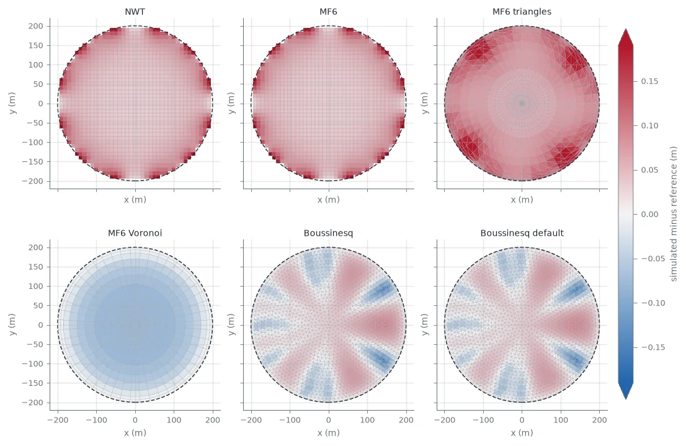
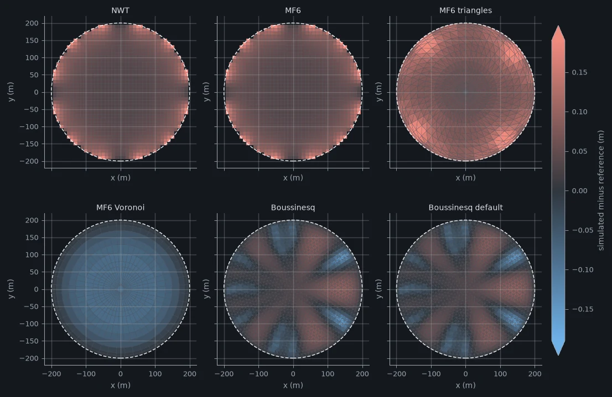
Why these thresholds
- Thresholds of
boussinesq: Twice the error measured with PETSc (SNESVI obstacle) on the triangles themselves, the reference at each centroid: radial RMSE 0.024 m, max error 0.033 m, spread of the error in a 10 m bin 0.055 m, and half the measured freeboard of 1.90 m. PETSc and the default engine agree to 1e-3 m. The mesh has near-equilateral triangles of 10 m, a node ring on the coast and one ring of ocean triangles held at the sea level. Until 2026-10-09 it was a ring mesh of 18 sectors cut along one diagonal: there the two-point flux sat 0.25 m high with the reference imposed beyond 180 m, and refining that mesh made it worse (+1.1 m at 1476 and 5832 cells), while near-equilateral meshes converge (+0.08, +0.07, +0.02 m at 257, 886, 3147 cells). Half of its ocean triangles were capped at the sea floor (-1 m), a coastal sink that hid most of that bias. - Thresholds of
boussinesq_local: Twice the error measured with the default 'auto' engine (scipy_sparse on 3147 cells) on the triangles themselves, the reference at each centroid: radial RMSE 0.024 m, max error 0.033 m, spread of the error in a 10 m bin 0.055 m, and half the measured freeboard of 1.90 m. PETSc and the default engine agree to 1e-3 m. The mesh has near-equilateral triangles of 10 m, a node ring on the coast and one ring of ocean triangles held at the sea level. Until 2026-10-09 it was a ring mesh of 18 sectors cut along one diagonal: there the two-point flux sat 0.25 m high with the reference imposed beyond 180 m, and refining that mesh made it worse (+1.1 m at 1476 and 5832 cells), while near-equilateral meshes converge (+0.08, +0.07, +0.02 m at 257, 886, 3147 cells). Half of its ocean triangles were capped at the sea floor (-1 m), a coastal sink that hid most of that bias. - Thresholds of
modflow6: Twice the error measured on the 10 m grid: radial RMSE 0.0499 m, max error 0.0921 m, spread 0.112 m, and half the measured freeboard of 0.787 m. MODFLOW 6 reads a computational top that gives every cell of the layer the same thickness, so its Newton conductance is the one of MODFLOW-NWT, and the two sit at the same distance from the reference (NWT 0.0495 m). What is left is the error of the grid. On a 5 m grid the RMSE falls to 0.0349 m and the max error to 0.0606 m, for MF6 and NWT alike; the spread stays at 0.111 m and the freeboard drops to 0.69 m, the first land ring being closer to the coast. Until 2026-10-12 the top was the DEM, the conductance followed the full thickness of the cells, and the RMSE was 0.221 m. - Thresholds of
modflow6_voronoi: Measured values with a 10 % margin: radial RMSE 0.067 m, max error 0.080 m, freeboard 1.90 m. Twice the azimuthal spread of 9.9e-5 m: every cell of the coast ring holds the sea level, so the rings are symmetric. The run reads a 1 m raster whose shoreline lies 1 m inside the coast ring (config_modflow6_voronoi.toml). The profile is read on the node rings (5 m bins). The freeboard is read on the land surface the run was given, at the 196 m ring. Until 2026-10-12 the top was the DEM and the RMSE 0.102 m. Twice the error would let that bias back unnoticed, hence the 10 % margin. - Radial head-profile RMSE:
modflow_nwtallows 0.25, 5 times the 0.048 ofboussinesq. No reason is written for this difference. - Radial head-profile RMSE:
modflow6_irregular_triallows 0.25, 5 times the 0.048 ofboussinesq. No reason is written for this difference. - Radial head-profile max abs error:
modflow_nwtallows 0.5, 8 times the 0.066 ofboussinesq. No reason is written for this difference. - Radial head-profile max abs error:
modflow6_irregular_triallows 0.5, 8 times the 0.066 ofboussinesq. No reason is written for this difference. - Azimuthal spread:
modflow_nwtallows 0.25, 1250 times the 0.0002 ofmodflow6_voronoi. No reason is written for this difference. - Azimuthal spread:
modflow6_irregular_triallows 0.25, 1250 times the 0.0002 ofmodflow6_voronoi. No reason is written for this difference.
Schedule. modflow_nwt, modflow6, modflow6_irregular_tri, modflow6_voronoi, boussinesq_local: runs in Nightly / validation no PETSc, Weekly / Cross Platform, Tests / fast marker. boussinesq: runs in Nightly / validation PETSc (skipped in Tests / fast marker: no petsc4py there). Jobs.
What the test does, all thresholds, the file
| Threshold | modflow_nwt | modflow6 | modflow6_irregular_tri | modflow6_voronoi | boussinesq | boussinesq_local |
|---|---|---|---|---|---|---|
| Radial head-profile RMSE (m) < | 0.25 | 0.1 | 0.25 | 0.074 | 0.048 | 0.048 |
| Radial head-profile max abs error (m) < | 0.5 | 0.19 | 0.5 | 0.089 | 0.066 | 0.066 |
| Azimuthal spread (m) < | 0.25 | 0.23 | 0.25 | 0.0002 | 0.11 | 0.11 |
From validation_cases/analytical/steady/dupuit_circular_island_ocean_2d/: modflow_nwt reads tolerances.toml, modflow6 reads tolerances_modflow6.toml, modflow6_irregular_tri reads tolerances.toml, modflow6_voronoi reads tolerances_modflow6_voronoi.toml, boussinesq reads tolerances_boussinesq.toml, boussinesq_local reads tolerances_boussinesq_local.toml.
Run it alone: python -m validation_cases.analytical.steady.dupuit_circular_island_ocean_2d.run_case
Test functions
- Dupuit circular island ocean 2d matches reference profile.
File tests/validation/analytical/steady/test_dupuit_circular_island_ocean_2d.py. Markers: analytical, fast, steady, validation.
Steady Dupuit 1D case with west-side divide and east-side river#
pass end to endmodflow_nwtmodflow6modflow6_irregular_triboussinesqboussinesq_local
Compared with: steady Dupuit profile with west-side divide and east-side river head.
Last measurement
| Variant | Metric | Measured | Threshold | Share used | Share of the signal |
|---|---|---|---|---|---|
| modflow_nwt pass | Head-profile RMSE | 0.00561 m | < 0.012 m | 47% | 0.4% / 0.8% |
| Head-profile max abs error | 0.00659 m | < 0.014 m | 47% | 0.4% / 0.9% | |
| Cross-row head spread | 0 m | < 1e-05 m | 0% | 0.0% / 0.0% | |
| modflow6 pass | Head-profile RMSE | 0.00516 m | < 0.012 m | 43% | 0.3% / 0.8% |
| Head-profile max abs error | 0.00596 m | < 0.014 m | 43% | 0.4% / 0.9% | |
| Cross-row head spread | 9.3e-07 m | < 1e-05 m | 9% | 0.0% / 0.0% | |
| modflow6_irregular_tri pass | Head-profile RMSE | 0.00593 m | < 0.012 m | 49% | 0.4% / 0.8% |
| Head-profile max abs error | 0.00748 m | < 0.015 m | 50% | 0.5% / 1.0% | |
| Cross-row head spread | 8.88e-16 m | < 1e-09 m | 0% | 0.0% / 0.0% | |
| boussinesq pass | Head-profile RMSE | 3.34e-05 m | < 6.7e-05 m | 50% | 0.0% / 0.0% |
| Head-profile max abs error | 5.51e-05 m | < 0.00012 m | 46% | 0.0% / 0.0% | |
| Cross-row head spread | 8.88e-16 m | < 1e-08 m | 0% | 0.0% / 0.0% | |
| boussinesq_local pass | Head-profile RMSE | 3.34e-05 m | < 6.7e-05 m | 50% | 0.0% / 0.0% |
| Head-profile max abs error | 5.51e-05 m | < 0.00012 m | 46% | 0.0% / 0.0% | |
| Cross-row head spread | 4.96e-15 m | < 1e-07 m | 0% | 0.0% / 0.0% |
Measured on 2026-10-12, commit 427d8bb47 with uncommitted changes, version 2.0.0a4, a local run; 2026-10-13, commit 91d97cabd, version 2.0.0a5, the nightly CI job (job log). The last column gives the measured value and the threshold as shares of the head range of the reference, 1.56 to 1.57 m.
reference of each runNWTMF6MF6 trianglesBoussinesqBoussinesq default
Why these thresholds
- Thresholds of
modflow_nwt,modflow6: Twice the error measured on the 40-column grid, MODFLOW-NWT and MODFLOW 6 alike: RMSE 5.6e-3 m, max error 6.6e-3 m. Both upstream-weight the saturated thickness between cells, a first-order scheme: refining the grid by 2 halves the error. The heads are posed where the model holds them, at the centres of the boundary cells. The row spread bound is 0.1 times the MODFLOW 6 head closure (1e-4 m). - Thresholds of
boussinesq: Twice the error measured with PETSc VI on 40 columns; PETSc and the local engine agree to 1e-8 m: RMSE 3.3e-05 m, max error 5.5e-05 m. The strip splits each 10 m square into two right triangles, the diagonal alternating like a checkerboard. On it the solver reproduces the h^2 profile at the triangle centroids to 1e-8 m (checked cell by cell with recharge), far below the MODFLOW band of this case. What is left comes from the column average of two triangles, centroids at dx/3 and 2 dx/3, against the reference at the column centre. The heads sit at the centroid of the triangle that owns a side edge, dx/3 inside the face. The strip is uniform across rows, so a row spread is solver noise: PETSc reads below 1e-14 m; the bound is 1e-8 m. - Thresholds of
boussinesq_local: Twice the error measured with the default local engine on 40 columns; PETSc and the local engine agree to 1e-8 m: RMSE 3.3e-05 m, max error 5.5e-05 m. The strip splits each 10 m square into two right triangles, the diagonal alternating like a checkerboard. On it the solver reproduces the h^2 profile at the triangle centroids to 1e-8 m (checked cell by cell with recharge), far below the MODFLOW band of this case. What is left comes from the column average of two triangles, centroids at dx/3 and 2 dx/3, against the reference at the column centre. The heads sit at the centroid of the triangle that owns a side edge, dx/3 inside the face. The strip is uniform across rows, so a row spread is solver noise: the local engine reads below 1e-8 m (its head closure is 1e-9 m); the bound is 1e-7 m. - Thresholds of
modflow6_irregular_tri: Twice the error measured on the 176-triangle strip: RMSE 5.9e-3 m, max error 7.5e-3 m. The heads are posed at the mean centroid of the triangles that own a boundary edge, and the reference is averaged over the same x bins as the model. The row spread is zero by construction: the loader tiles one profile.
Schedule. modflow_nwt, modflow6, modflow6_irregular_tri, boussinesq_local: runs in Nightly / validation no PETSc, Weekly / Cross Platform, Tests / fast marker. boussinesq: runs in Nightly / validation PETSc (skipped in Tests / fast marker: no petsc4py there). Jobs.
What the test does, all thresholds, the file
| Threshold | modflow_nwt | modflow6 | modflow6_irregular_tri | boussinesq | boussinesq_local |
|---|---|---|---|---|---|
| Head-profile RMSE (m) < | 0.012 | 0.012 | 0.012 | 6.7e-05 | 6.7e-05 |
| Head-profile max abs error (m) < | 0.014 | 0.014 | 0.015 | 0.00012 | 0.00012 |
| Cross-row head spread (m) < | 1e-05 | 1e-05 | 1e-09 | 1e-08 | 1e-07 |
From validation_cases/analytical/steady/dupuit_divide_river_1d/: modflow_nwt reads tolerances.toml, modflow6 reads tolerances.toml, modflow6_irregular_tri reads tolerances_modflow6_irregular_tri.toml, boussinesq reads tolerances_boussinesq.toml, boussinesq_local reads tolerances_boussinesq_local.toml.
Run it alone: python -m validation_cases.analytical.steady.dupuit_divide_river_1d.run_case
Test functions
- Dupuit divide river 1d matches reference profile.
File tests/validation/analytical/steady/test_dupuit_divide_river_1d.py. Markers: analytical, fast, steady, validation.
Steady Dupuit fixed-head case against its analytical profile#
pass end to endmodflow_nwtmodflow6modflow6_irregular_triboussinesqboussinesq_local
Compared with: Dupuit steady fixed-head solution.
Last measurement
| Variant | Metric | Measured | Threshold | Share used | Share of the signal |
|---|---|---|---|---|---|
| modflow_nwt pass | Head-profile RMSE | 0.00538 m | < 0.011 m | 49% | 0.1% / 0.2% |
| Head-profile max abs error | 0.00771 m | < 0.016 m | 48% | 0.2% / 0.3% | |
| Cross-row head spread | 0 m | < 1e-05 m | 0% | 0.0% / 0.0% | |
| modflow6 pass | Head-profile RMSE | 0.00528 m | < 0.011 m | 48% | 0.1% / 0.2% |
| Head-profile max abs error | 0.00758 m | < 0.016 m | 47% | 0.2% / 0.3% | |
| Cross-row head spread | 3.09e-06 m | < 1e-05 m | 31% | 0.0% / 0.0% | |
| modflow6_irregular_tri pass | Head-profile RMSE | 0.00626 m | < 0.013 m | 48% | 0.1% / 0.3% |
| Head-profile max abs error | 0.00895 m | < 0.018 m | 50% | 0.2% / 0.4% | |
| Cross-row head spread | 8.88e-16 m | < 1e-09 m | 0% | 0.0% / 0.0% | |
| boussinesq pass | Head-profile RMSE | 4.07e-05 m | < 8.2e-05 m | 50% | 0.0% / 0.0% |
| Head-profile max abs error | 9.91e-05 m | < 0.0002 m | 50% | 0.0% / 0.0% | |
| Cross-row head spread | 8.88e-16 m | < 1e-08 m | 0% | 0.0% / 0.0% | |
| boussinesq_local pass | Head-profile RMSE | 4.07e-05 m | < 8.2e-05 m | 50% | 0.0% / 0.0% |
| Head-profile max abs error | 9.91e-05 m | < 0.0002 m | 50% | 0.0% / 0.0% | |
| Cross-row head spread | 1.12e-15 m | < 1e-07 m | 0% | 0.0% / 0.0% |
Measured on 2026-10-12, commit 427d8bb47 with uncommitted changes, version 2.0.0a4, a local run; 2026-10-13, commit 91d97cabd, version 2.0.0a5, the nightly CI job (job log). The last column gives the measured value and the threshold as shares of the head range of the reference, 4.95 to 5 m.
reference of each runNWTMF6MF6 trianglesBoussinesqBoussinesq default
Why these thresholds
- Thresholds of
modflow_nwt,modflow6: Twice the error measured on the 40-column grid, MODFLOW-NWT and MODFLOW 6 alike: RMSE 5.4e-3 m, max error 7.7e-3 m. Both upstream-weight the saturated thickness between cells, a first-order scheme: refining the grid by 2 halves the error. The heads are posed where the model holds them, at the centres of the boundary cells. The row spread bound is 0.1 times the MODFLOW 6 head closure (1e-4 m). - Thresholds of
boussinesq: Twice the error measured with PETSc VI on 40 columns; PETSc and the local engine agree to 1e-8 m: RMSE 4.1e-05 m, max error 9.9e-05 m. The strip splits each 10 m square into two right triangles, the diagonal alternating like a checkerboard. On it the solver reproduces the h^2 profile at the triangle centroids to 1e-8 m (checked cell by cell with recharge), far below the MODFLOW band of this case. What is left comes from the column average of two triangles, centroids at dx/3 and 2 dx/3, against the reference at the column centre. The heads sit at the centroid of the triangle that owns a side edge, dx/3 inside the face. The strip is uniform across rows, so a row spread is solver noise: PETSc reads below 1e-14 m; the bound is 1e-8 m. - Thresholds of
boussinesq_local: Twice the error measured with the default local engine on 40 columns; PETSc and the local engine agree to 1e-8 m: RMSE 4.1e-05 m, max error 9.9e-05 m. The strip splits each 10 m square into two right triangles, the diagonal alternating like a checkerboard. On it the solver reproduces the h^2 profile at the triangle centroids to 1e-8 m (checked cell by cell with recharge), far below the MODFLOW band of this case. What is left comes from the column average of two triangles, centroids at dx/3 and 2 dx/3, against the reference at the column centre. The heads sit at the centroid of the triangle that owns a side edge, dx/3 inside the face. The strip is uniform across rows, so a row spread is solver noise: the local engine reads below 1e-8 m (its head closure is 1e-9 m); the bound is 1e-7 m. - Thresholds of
modflow6_irregular_tri: Twice the error measured on the 176-triangle strip: RMSE 6.3e-3 m, max error 9.0e-3 m. The heads are posed at the mean centroid of the triangles that own a boundary edge, and the reference is averaged over the same x bins as the model. The row spread is zero by construction: the loader tiles one profile.
Schedule. modflow_nwt, modflow6, modflow6_irregular_tri, boussinesq_local: runs in Nightly / validation no PETSc, Weekly / Cross Platform, Tests / fast marker. boussinesq: runs in Nightly / validation PETSc (skipped in Tests / fast marker: no petsc4py there). Jobs.
What the test does, all thresholds, the file
| Threshold | modflow_nwt | modflow6 | modflow6_irregular_tri | boussinesq | boussinesq_local |
|---|---|---|---|---|---|
| Head-profile RMSE (m) < | 0.011 | 0.011 | 0.013 | 8.2e-05 | 8.2e-05 |
| Head-profile max abs error (m) < | 0.016 | 0.016 | 0.018 | 0.0002 | 0.0002 |
| Cross-row head spread (m) < | 1e-05 | 1e-05 | 1e-09 | 1e-08 | 1e-07 |
From validation_cases/analytical/steady/dupuit_fixed_head_1d/: modflow_nwt reads tolerances.toml, modflow6 reads tolerances.toml, modflow6_irregular_tri reads tolerances_modflow6_irregular_tri.toml, boussinesq reads tolerances_boussinesq.toml, boussinesq_local reads tolerances_boussinesq_local.toml.
Run it alone: python -m validation_cases.analytical.steady.dupuit_fixed_head_1d.run_case
Test functions
- Dupuit fixed head 1d matches reference profile.
File tests/validation/analytical/steady/test_dupuit_fixed_head_1d.py. Markers: analytical, fast, steady, validation.
PETSc Boussinesq variants on the steady Dupuit fixed-head case#
pass end to endpetsc_complementaritypetsc_partition
Compared with: Dupuit steady fixed-head solution.
Last measurement
| Variant | Metric | Measured | Threshold | Share used | Share of the signal |
|---|---|---|---|---|---|
| Dupuit fixed head petsc variants match reference profile [petsc_complementarity] pass | Head-profile RMSE | 4.07e-05 m | < 8.2e-05 m | 50% | 0.0% / 0.0% |
| Head-profile max abs error | 9.91e-05 m | < 0.0002 m | 50% | 0.0% / 0.0% | |
| Cross-row head spread | 8.88e-16 m | < 1e-08 m | 0% | 0.0% / 0.0% | |
| Dupuit fixed head petsc variants match reference profile [petsc_partition] pass | Head-profile RMSE | 4.07e-05 m | < 8.2e-05 m | 50% | 0.0% / 0.0% |
| Head-profile max abs error | 9.91e-05 m | < 0.0002 m | 50% | 0.0% / 0.0% | |
| Cross-row head spread | 8.88e-16 m | < 1e-08 m | 0% | 0.0% / 0.0% | |
| Dupuit fixed head petsc vi obstacle reaches reference profile pass | Head-profile RMSE | 4.07e-05 m | < 8.2e-05 m | 50% | 0.0% / 0.0% |
| Head-profile max abs error | 9.91e-05 m | < 0.0002 m | 50% | 0.0% / 0.0% | |
| Cross-row head spread | 8.88e-16 m | < 1e-08 m | 0% | 0.0% / 0.0% |
Measured on 2026-10-12, commit 427d8bb47 with uncommitted changes, version 2.0.0a4, a local run. The last column gives the measured value and the threshold as shares of the head range of the reference, 4.95 m.
referencerunpetsc_complementaritypetsc_partition
Why these thresholds
- Thresholds of
petsc_complementarity: Twice the error measured on the 40-column grid, MODFLOW-NWT and MODFLOW 6 alike: RMSE 5.4e-3 m, max error 7.7e-3 m. Both upstream-weight the saturated thickness between cells, a first-order scheme: refining the grid by 2 halves the error. The heads are posed where the model holds them, at the centres of the boundary cells. The row spread bound is 0.1 times the MODFLOW 6 head closure (1e-4 m). - Thresholds of
petsc_partition: Twice the error measured with this PETSc variant on 40 columns: RMSE 4.1e-05 m, max error 9.9e-05 m. No surface contact here, so the closures agree with the default Boussinesq variant to 1e-8 m. The strip splits each 10 m square into two right triangles, the diagonal alternating like a checkerboard. On it the solver reproduces the h^2 profile at the triangle centroids to 1e-8 m (checked cell by cell with recharge), far below the MODFLOW band of this case. What is left comes from the column average of two triangles, centroids at dx/3 and 2 dx/3, against the reference at the column centre. The heads sit at the centroid of the triangle that owns a side edge, dx/3 inside the face. The strip is uniform across rows, so a row spread is solver noise: PETSc reads below 1e-14 m; the bound is 1e-8 m.
Schedule. , petsc_complementarity, petsc_partition: runs in Nightly / validation PETSc, Solver / PETSc smoke Linux (skipped in Tests / fast marker: no petsc4py there). Jobs.
What the test does, all thresholds, the file
Run it alone: python -m validation_cases.analytical.steady.dupuit_fixed_head_1d.run_case
Test functions
- Dupuit fixed head petsc variants match reference profile.
- Dupuit fixed head petsc vi obstacle reaches reference profile.
File tests/validation/analytical/steady/test_dupuit_fixed_head_petsc_1d.py. Markers: analytical, fast, petsc, steady, validation.
Steady Dupuit seepage limit and its invariance in K/R#
pass end to endmodflow6
Compared with: Dupuit seepage limit x_e = L / (1 + slope**2 K/R) and the free Dupuit water table above it.
\(s\) is the slope of the surface, \(L\) the length of the hillslope, \(x\) the distance upslope from the toe, \(K\) the hydraulic conductivity and \(R\) the recharge.
Last measurement
| Variant | Metric | Measured | Threshold | Share used | Share of the signal |
|---|---|---|---|---|---|
| Conductivity alone moves the mask but not the discharge pass | Drain-outflow drift when K alone doubles | 5.04e-07 | < 0.0001 | 1% | |
| Every declared scenario is exercised pass | no metric recorded; the asserts of the test decide | ||||
| Seepage limit matches the closed form [modflow6] pass | modflow6 seepage-limit position error | 2.84e-14 m | < 10 m | 0% | 0.0% / 178.4% |
| modflow6 head-profile max abs error | 0.0082 m | < 0.02 m | 41% | 0.1% / 0.4% | |
| Seepage limit matches the closed form [modflow6_k_only] pass | modflow6_k_only seepage-limit position error | 1.67 m | < 10 m | 17% | 36.5% / 218.9% |
| modflow6_k_only head-profile max abs error | 0.0117 m | < 0.02 m | 58% | 0.3% / 0.4% | |
| Seepage limit matches the closed form [modflow6_scaled_down] pass | modflow6_scaled_down seepage-limit position error | 2.84e-14 m | < 10 m | 0% | 0.0% / 178.4% |
| modflow6_scaled_down head-profile max abs error | 0.00807 m | < 0.02 m | 40% | 0.1% / 0.4% | |
| Seepage limit matches the closed form [modflow6_scaled_up] pass | modflow6_scaled_up seepage-limit position error | 2.84e-14 m | < 10 m | 0% | 0.0% / 178.4% |
| modflow6_scaled_up head-profile max abs error | 0.0082 m | < 0.02 m | 41% | 0.1% / 0.4% | |
| Seepage mask and head are invariant in conductivity over recharge [modflow6_scaled_down] pass | modflow6_scaled_down water-table difference vs the reference scenario | 0.000134 m | < 0.002 m | 7% | |
| Seepage mask and head are invariant in conductivity over recharge [modflow6_scaled_up] pass | modflow6_scaled_up water-table difference vs the reference scenario | 6.02e-07 m | < 0.002 m | 0% | |
Measured on 2026-10-13, commit 91d97cabd, version 2.0.0a5, the nightly CI job (job log). The last column gives the measured value and the threshold as shares of the head range of the reference, 4.57 to 5.61 m.
referenceMF6modflow6_scaled_downmodflow6_scaled_up
referencemodflow6_k_only
Schedule. This file: runs in Nightly / validation no PETSc, Weekly / Cross Platform, Tests / fast marker. Jobs.
What the test does, all thresholds, the file
Three claims, in decreasing order of importance:
1. the seepage mask starts where the Dupuit closed form says it does, 2. scaling K and R by the same factor leaves the mask identical cell for cell and the head equal to a tight band - the property the whole calibration method rests on, 3. the same factor on K alone moves the mask, while the total drain discharge does not move at all.
Claim 3 is why claim 2 never looks at the discharge: mass balance pins the total drain outflow at R * area whatever the conductance does, so a discharge-based invariance check passes on a model that ignores K entirely.
| Threshold | modflow6 |
|---|---|
| f'{solver} seepage-limit position error' (m) < | 10 |
| f'{solver} head-profile max abs error' (m) < | 0.02 |
| f'{solver} water-table difference vs the reference scenario' (m) < | 0.002 |
| Drain-outflow drift when K alone doubles < | 0.0001 |
From validation_cases/analytical/steady/dupuit_seepage_limit_1d/: modflow6 reads tolerances.toml.
Run it alone: python -m validation_cases.analytical.steady.dupuit_seepage_limit_1d.run_case
Test functions
- Every declared scenario is exercised.
- Seepage limit matches the closed form.
- Seepage mask and head are invariant in conductivity over recharge.
- Conductivity alone moves the mask but not the discharge.
File tests/validation/analytical/steady/test_dupuit_seepage_limit_1d.py. Markers: analytical, fast, mf6, steady, validation, xdist_group.
Steady Dupuit 1D case with uniform recharge#
pass end to endmodflow_nwtmodflow6modflow6_irregular_triboussinesqboussinesq_local
Compared with: steady Dupuit profile with uniform recharge.
Last measurement
| Variant | Metric | Measured | Threshold | Share used | Share of the signal |
|---|---|---|---|---|---|
| modflow_nwt pass | Head-profile RMSE | 0.00662 m | < 0.014 m | 47% | 0.6% / 1.2% |
| Head-profile max abs error | 0.00793 m | < 0.016 m | 50% | 0.7% / 1.4% | |
| Cross-row head spread | 0 m | < 1e-05 m | 0% | 0.0% / 0.0% | |
| modflow6 pass | Head-profile RMSE | 0.00641 m | < 0.014 m | 46% | 0.5% / 1.2% |
| Head-profile max abs error | 0.00764 m | < 0.016 m | 48% | 0.6% / 1.4% | |
| Cross-row head spread | 1.36e-06 m | < 1e-05 m | 14% | 0.0% / 0.0% | |
| modflow6_irregular_tri pass | Head-profile RMSE | 0.0077 m | < 0.016 m | 48% | 0.6% / 1.3% |
| Head-profile max abs error | 0.011 m | < 0.022 m | 50% | 0.9% / 1.8% | |
| Cross-row head spread | 0 m | < 1e-09 m | 0% | 0.0% / 0.0% | |
| boussinesq pass | Head-profile RMSE | 9.93e-05 m | < 0.0002 m | 50% | 0.0% / 0.0% |
| Head-profile max abs error | 0.000146 m | < 0.0003 m | 49% | 0.0% / 0.0% | |
| Cross-row head spread | 0 m | < 1e-08 m | 0% | 0.0% / 0.0% | |
| boussinesq_local pass | Head-profile RMSE | 9.93e-05 m | < 0.0002 m | 50% | 0.0% / 0.0% |
| Head-profile max abs error | 0.000146 m | < 0.0003 m | 49% | 0.0% / 0.0% | |
| Cross-row head spread | 1.18e-14 m | < 1e-07 m | 0% | 0.0% / 0.0% |
Measured on 2026-10-12, commit 427d8bb47 with uncommitted changes, version 2.0.0a4, a local run; 2026-10-13, commit 91d97cabd, version 2.0.0a5, the nightly CI job (job log). The last column gives the measured value and the threshold as shares of the head range of the reference, 1.18 to 1.19 m.
reference of each runNWTMF6MF6 trianglesBoussinesqBoussinesq default
Why these thresholds
- Thresholds of
modflow_nwt,modflow6: Twice the error measured on the 40-column grid, MODFLOW-NWT and MODFLOW 6 alike: RMSE 6.6e-3 m, max error 7.9e-3 m. Both upstream-weight the saturated thickness between cells, a first-order scheme: refining the grid by 2 halves the error. The heads are posed where the model holds them, at the centres of the boundary cells. The row spread bound is 0.1 times the MODFLOW 6 head closure (1e-4 m). - Thresholds of
boussinesq: Twice the error measured with PETSc VI on 40 columns; PETSc and the local engine agree to 1e-8 m: RMSE 9.9e-05 m, max error 0.00015 m. The strip splits each 10 m square into two right triangles, the diagonal alternating like a checkerboard. On it the solver reproduces the h^2 profile at the triangle centroids to 1e-8 m (checked cell by cell with recharge), far below the MODFLOW band of this case. What is left comes from the column average of two triangles, centroids at dx/3 and 2 dx/3, against the reference at the column centre. The heads sit at the centroid of the triangle that owns a side edge, dx/3 inside the face. The strip is uniform across rows, so a row spread is solver noise: PETSc reads below 1e-14 m; the bound is 1e-8 m. - Thresholds of
boussinesq_local: Twice the error measured with the default local engine on 40 columns; PETSc and the local engine agree to 1e-8 m: RMSE 9.9e-05 m, max error 0.00015 m. The strip splits each 10 m square into two right triangles, the diagonal alternating like a checkerboard. On it the solver reproduces the h^2 profile at the triangle centroids to 1e-8 m (checked cell by cell with recharge), far below the MODFLOW band of this case. What is left comes from the column average of two triangles, centroids at dx/3 and 2 dx/3, against the reference at the column centre. The heads sit at the centroid of the triangle that owns a side edge, dx/3 inside the face. The strip is uniform across rows, so a row spread is solver noise: the local engine reads below 1e-8 m (its head closure is 1e-9 m); the bound is 1e-7 m. - Thresholds of
modflow6_irregular_tri: Twice the error measured on the 176-triangle strip: RMSE 7.7e-3 m, max error 1.1e-2 m. The heads are posed at the mean centroid of the triangles that own a boundary edge, and the reference is averaged over the same x bins as the model. The row spread is zero by construction: the loader tiles one profile.
Schedule. modflow_nwt, modflow6, modflow6_irregular_tri, boussinesq_local: runs in Nightly / validation no PETSc, Weekly / Cross Platform, Tests / fast marker. boussinesq: runs in Nightly / validation PETSc (skipped in Tests / fast marker: no petsc4py there). Jobs.
What the test does, all thresholds, the file
| Threshold | modflow_nwt | modflow6 | modflow6_irregular_tri | boussinesq | boussinesq_local |
|---|---|---|---|---|---|
| Head-profile RMSE (m) < | 0.014 | 0.014 | 0.016 | 0.0002 | 0.0002 |
| Head-profile max abs error (m) < | 0.016 | 0.016 | 0.022 | 0.0003 | 0.0003 |
| Cross-row head spread (m) < | 1e-05 | 1e-05 | 1e-09 | 1e-08 | 1e-07 |
From validation_cases/analytical/steady/dupuit_uniform_recharge_1d/: modflow_nwt reads tolerances.toml, modflow6 reads tolerances.toml, modflow6_irregular_tri reads tolerances_modflow6_irregular_tri.toml, boussinesq reads tolerances_boussinesq.toml, boussinesq_local reads tolerances_boussinesq_local.toml.
Run it alone: python -m validation_cases.analytical.steady.dupuit_uniform_recharge_1d.run_case
Test functions
- Dupuit uniform recharge 1d matches reference profile.
File tests/validation/analytical/steady/test_dupuit_uniform_recharge_1d.py. Markers: analytical, fast, steady, validation.
Grid convergence of the steady Dupuit fixed-head case on the production path#
pass end to endmodflow_nwtmodflow6modflow6_no_newton
Compared with: Dupuit steady fixed-head solution.
Last measurement
| Variant | Metric | Measured | Threshold | Share used | Share of the signal |
|---|---|---|---|---|---|
| modflow_nwt pass | Distance of the observed order from 1 | 0.0107 | < 0.2 | 5% | |
| modflow6 pass | Distance of the observed order from 1 | 0.0113 | < 0.2 | 6% | |
| modflow6_no_newton pass | Distance of the observed order from 2 | 0.051 | < 0.2 | 25% |
Measured on 2026-10-13, commit 91d97cabd, version 2.0.0a5, the nightly CI job (job log).
reference of each runNWTMF6
referencemodflow6_no_newton
Why these thresholds
- Thresholds of
modflow_nwt,modflow6,modflow6_no_newton: Twice the error measured on the 40-column grid, MODFLOW-NWT and MODFLOW 6 alike: RMSE 5.4e-3 m, max error 7.7e-3 m. Both upstream-weight the saturated thickness between cells, a first-order scheme: refining the grid by 2 halves the error. The heads are posed where the model holds them, at the centres of the boundary cells. The row spread bound is 0.1 times the MODFLOW 6 head closure (1e-4 m).
Schedule. modflow_nwt, modflow6, modflow6_no_newton: runs in Nightly / validation no PETSc, Weekly / Cross Platform. Jobs.
What the test does, all thresholds, the file
The case runs through the launcher, the route of test_dupuit_fixed_head_1d.py, on copies of its configuration refined twice by 2 (cells of 25, 12.5 and 6.25 m). The slope of the head RMSE against the cell size is the observed order of the scheme.
Without Newton, MODFLOW 6 takes the harmonic mean of the two cell transmissivities, a centred scheme of order 2. A head posed half a cell away from where the reference expects it adds an error of order 1 and drops the observed order to 1. This is the check the MMS tests cannot make: they import nothing from hydromodpy.
Under Newton, the HydroModPy default, MODFLOW 6 weights the saturated thickness of the upstream cell, and so does MODFLOW-NWT. That scheme is of order 1 by construction: the RMSE halves when the cells halve (13.3, 6.7 and 3.4 mm here). Both runs are checked against order 1.
Every run closes the head to 1e-9 m, far below the discretization error, so the observed order is the order of the scheme. The bands are those of the MMS orders, |p - 2| < 0.2 and |p - 1| < 0.2 (tests/TOLERANCES.md).
Run it alone: python -m validation_cases.analytical.steady.dupuit_fixed_head_1d.run_case
Test functions
- Grid convergence dupuit fixed head 1d.
File tests/validation/analytical/steady/test_grid_convergence_dupuit_1d.py. Markers: analytical, slow, steady, validation.
Steady linearized unconfined drainage case#
pass end to endmodflow_nwtmodflow6modflow6_irregular_tri
Compared with: steady linearized unconfined profile with distributed top drainage.
Last measurement
| Variant | Metric | Measured | Threshold | Share used | Share of the signal |
|---|---|---|---|---|---|
| modflow_nwt pass | Head-profile RMSE | 3.15e-07 m | < 7e-07 m | 45% | 0.0% / 0.0% |
| Head-profile max abs error | 6.06e-07 m | < 1.3e-06 m | 47% | 0.0% / 0.0% | |
| Cross-row head spread | 0 m | < 1e-05 m | 0% | 0.0% / 0.0% | |
| modflow6 pass | Head-profile RMSE | 0.000123 m | < 0.00025 m | 49% | 0.0% / 0.1% |
| Head-profile max abs error | 0.000193 m | < 0.0004 m | 48% | 0.0% / 0.1% | |
| Cross-row head spread | 1.08e-06 m | < 5e-06 m | 22% | 0.0% / 0.0% | |
| modflow6_irregular_tri pass | Head-profile RMSE | 0.000273 m | < 0.00055 m | 50% | 0.1% / 0.1% |
| Head-profile max abs error | 0.000369 m | < 0.00075 m | 49% | 0.1% / 0.2% | |
| Cross-row head spread | 0 m | < 1e-09 m | 0% | 0.0% / 0.0% |
Measured on 2026-10-13, commit 91d97cabd, version 2.0.0a5, the nightly CI job (job log). The last column gives the measured value and the threshold as shares of the head range of the reference, 0.397 to 0.4 m.
reference of each runNWTMF6MF6 triangles
Why these thresholds
- Thresholds of
modflow_nwt: Twice the MODFLOW-NWT measurement with the validation profile (head closure 1e-9 m): RMSE 3.2e-7 m, max error 6.1e-7 m. The case is linear (heads above the cell top, full cell thickness), and the centred scheme gives about 4e-7 m on the 50-column grid. - Thresholds of
modflow6: MODFLOW 6 stops at its default head closure of 1e-4 m, which is the whole error of this case. Twice the measurement: RMSE 1.2e-4 m, max error 1.9e-4 m. MODFLOW-NWT closes at 1e-9 m and reads 3.2e-7 m. - Thresholds of
modflow6_irregular_tri: Twice the error measured on the 352-triangle strip: RMSE 2.7e-4 m, max error 3.7e-4 m. Each drain takes C = K * cell_area / b, so the leakance K / b is the same on every triangle and the 1D reference holds on this mesh. With a head closure of 1e-7 m the strip gives an RMSE of 1.8e-4 m, and 3.6e-5 m on a mesh of 1588 triangles: the triangle error falls with the mesh, and the rest is the default MODFLOW 6 head closure of 1e-4 m, as on the grid. The heads are posed at the mean centroid of the triangles that own a boundary edge, and the reference is averaged over the same x bins as the model. The row spread is zero by construction: the loader tiles one profile.
Schedule. modflow_nwt, modflow6, modflow6_irregular_tri: runs in Nightly / validation no PETSc, Weekly / Cross Platform, Tests / fast marker. Jobs.
What the test does, all thresholds, the file
| Threshold | modflow_nwt | modflow6 | modflow6_irregular_tri |
|---|---|---|---|
| Head-profile RMSE (m) < | 7e-07 | 0.00025 | 0.00055 |
| Head-profile max abs error (m) < | 1.3e-06 | 0.0004 | 0.00075 |
| Cross-row head spread (m) < | 1e-05 | 5e-06 | 1e-09 |
From validation_cases/analytical/steady/linearized_unconfined_drainage_1d/: modflow_nwt reads tolerances.toml, modflow6 reads tolerances_modflow6.toml, modflow6_irregular_tri reads tolerances_modflow6_irregular_tri.toml.
Run it alone: python -m validation_cases.analytical.steady.linearized_unconfined_drainage_1d.run_case
Test functions
- Linearized unconfined drainage 1d matches reference profile.
File tests/validation/analytical/steady/test_linearized_unconfined_drainage_1d.py. Markers: analytical, fast, steady, validation.
Steady linearized unconfined hillslope-drainage case#
pass end to endmodflow_nwtmodflow6modflow6_irregular_tri
Compared with: steady linearized solution of T h'' - (K / b) (h - z_top) = 0.
Last measurement
| Variant | Metric | Measured | Threshold | Share used | Share of the signal |
|---|---|---|---|---|---|
| modflow_nwt pass | Head-profile RMSE | 1.54e-05 m | < 3.2e-05 m | 48% | 0.0% / 0.0% |
| Head-profile max abs error | 2.01e-05 m | < 4.1e-05 m | 49% | 0.0% / 0.0% | |
| Cross-row head spread | 0 m | < 1e-05 m | 0% | 0.0% / 0.0% | |
| modflow6 pass | Head-profile RMSE | 4.68e-05 m | < 0.0001 m | 47% | 0.0% / 0.0% |
| Head-profile max abs error | 7.04e-05 m | < 0.00015 m | 47% | 0.0% / 0.0% | |
| Cross-row head spread | 4.55e-07 m | < 1e-05 m | 5% | 0.0% / 0.0% | |
| modflow6_irregular_tri pass | Head-profile RMSE | 0.000233 m | < 0.00047 m | 50% | 0.0% / 0.0% |
| Head-profile max abs error | 0.000641 m | < 0.0013 m | 49% | 0.0% / 0.1% | |
| Cross-row head spread | 8.88e-16 m | < 1e-09 m | 0% | 0.0% / 0.0% |
Measured on 2026-10-13, commit 91d97cabd, version 2.0.0a5, the nightly CI job (job log). The last column gives the measured value and the threshold as shares of the head range of the reference, 1.99 to 2 m.
reference of each runNWTMF6MF6 triangles
Why these thresholds
- Thresholds of
modflow_nwt: Twice the MODFLOW-NWT measurement with the validation profile: RMSE 1.5e-5 m, max error 2.0e-5 m on the 50-column grid. The heads sit above the cell top, so the case is linear and Newton plays no part. - Thresholds of
modflow6: MODFLOW 6 stops at its default head closure of 1e-4 m, three times the error of the case. Twice the measurement: RMSE 4.7e-5 m, max error 7.0e-5 m. MODFLOW-NWT closes at 1e-9 m and reads 1.5e-5 m. - Thresholds of
modflow6_irregular_tri: Twice the error measured on the 352-triangle strip: RMSE 2.3e-4 m, max error 6.4e-4 m. Each drain takes C = K * cell_area / b, so the leakance K / b is the same on every triangle and the 1D reference holds on this mesh. With a head closure of 1e-6 m the RMSE goes from 2.7e-4 m on this strip to 1.2e-4 m on a mesh of 1588 triangles, and the max error from 6.1e-4 m to 5.2e-4 m, then in the first bin, next to the fixed head. The heads are posed at the mean centroid of the triangles that own a boundary edge, and the reference is averaged over the same x bins as the model. The row spread is zero by construction: the loader tiles one profile.
Schedule. modflow_nwt, modflow6, modflow6_irregular_tri: runs in Nightly / validation no PETSc, Weekly / Cross Platform, Tests / fast marker. Jobs.
What the test does, all thresholds, the file
| Threshold | modflow_nwt | modflow6 | modflow6_irregular_tri |
|---|---|---|---|
| Head-profile RMSE (m) < | 3.2e-05 | 0.0001 | 0.00047 |
| Head-profile max abs error (m) < | 4.1e-05 | 0.00015 | 0.0013 |
| Cross-row head spread (m) < | 1e-05 | 1e-05 | 1e-09 |
From validation_cases/analytical/steady/linearized_unconfined_hillslope_drainage_1d/: modflow_nwt reads tolerances.toml, modflow6 reads tolerances_modflow6.toml, modflow6_irregular_tri reads tolerances_modflow6_irregular_tri.toml.
Run it alone: python -m validation_cases.analytical.steady.linearized_unconfined_hillslope_drainage_1d.run_case
Test functions
- Linearized unconfined hillslope drainage 1d matches reference profile.
File tests/validation/analytical/steady/test_linearized_unconfined_hillslope_drainage_1d.py. Markers: analytical, fast, steady, validation.
Closed-form solutions, transient#
A 50 mm pulse through the soil reservoir, driven end to end by the orchestrator#
pass
Compared with: the closed form of a 50 mm pulse on a full soil routed through a linear reservoir, Q(0) = 50 (1 - k a), Q(t >= 1) = 50 k a^2 exp(-(t - 1) / k), a = 1 - exp(-1 / k).
Last measurement
| Variant | Metric | Measured | Threshold | Share used | Share of the signal |
|---|---|---|---|---|---|
| 2.0 pass | Largest daily recharge error | 3.55e-15 mm | < 1e-12 mm | 0% | |
| Recharge volume error | 0 mm | < 1e-12 mm | 0% | ||
| Error on the day 95 % of the pulse has drained | 0.00854 d | <= 1 d | 1% | ||
| 20.0 pass | Largest daily recharge error | 1.24e-14 mm | < 1e-12 mm | 1% | |
| Recharge volume error | 7.11e-15 mm | < 1e-12 mm | 1% | ||
| Error on the day 95 % of the pulse has drained | 0.0854 d | <= 1 d | 9% | ||
| 5.0 pass | Largest daily recharge error | 2.66e-15 mm | < 1e-12 mm | 0% | |
| Recharge volume error | 0 mm | < 1e-12 mm | 0% | ||
| Error on the day 95 % of the pulse has drained | 0.0213 d | <= 1 d | 2% |
Measured on 2026-10-13, commit 91d97cabd, version 2.0.0a5, the nightly CI job (job log). The last column gives the measured value and the threshold as shares of the peak recharge of the closed form, 2.38 to 15.5 mm/d.
reference2.0
reference20.0
reference5.0
Schedule. This file: runs in Nightly / validation no PETSc, Weekly / Cross Platform, Tests / fast marker. Jobs.
What the test does, all thresholds, the file
Same closed form as the kernel-level unit test (tests/unit/physics/test_an_impulse_through_the_transit_store_follows_the_exponential_reservoir.py), but reached the way a run reaches it: through compute_soil_forcings, with a single SAFRAN cell's precipitation and ETP passed in as FieldRecord and the recharge read back from the FieldRecord it returns.
spinup = "none" starts the soil full - "the state of a soil in a wet winter", its own description says - which is exactly the soil a year of rain has already filled. Section 7 gives the closed form for a pulse landing on that full soil and then routed through a linear reservoir of time constant k: Q(0) = 50(1 - k a), Q(t>=1) = 50 k a^2 exp(-(t-1)/k) with a = 1 - exp(-1/k). t95, the day the cumulative recharge first reaches 95 % of the 50 mm pulse, follows the continuous crossing -k ln(0.05) within the one day the discretisation can miss it by.
Thresholds from tests/TOLERANCES.md
- Row 82: Soil transit store impulse volume,
|sum_t Q - 50|over60 kdays, mm:1e-12(Machine epsilon. The tail beyond60 kdays holds50 exp(-60), below 1e-24 mm) - Row 86: Routed impulse validation case,
t95against-k ln 0.05, days:1(Discretisation. Daily steps: the cumulative recharge crosses 95 % within the day that follows the continuous crossing)
Test functions
- A routed impulse matches the exponential reservoir.
File tests/validation/analytical/transient/test_a_routed_impulse_matches_the_exponential_reservoir.py. Markers: analytical, fast, transient, validation.
Transient Boussinesq hillslope recharge-step interception case#
pass boussinesqboussinesq_local
Compared with: linearized unconfined response around H0 = 5 m, used for the onset time and the early trajectory of the interception front only.
Last measurement
| Variant | Metric | Measured | Threshold | Share used | Share of the signal |
|---|---|---|---|---|---|
| boussinesq pass | Onset-time error | 10 day | < 15 day | 67% | |
| Interception-trajectory RMSE | 5 m | < 9 m | 56% | 16.7% / 30.0% | |
| Interception-trajectory max abs error | 10 m | < 15 m | 67% | 33.3% / 50.0% | |
| Trajectory reversal | 0 m | < 1e-06 m | 0% | 0.0% / 0.0% | |
| Maximum positive clearance above topography | 0 m | < 1e-06 m | 0% | 0.0% / 0.0% | |
| Cross-row head spread | 8.88e-16 m | < 1e-08 m | 0% | 0.0% / 0.0% | |
| boussinesq_local pass | Onset-time error | 20 day | < 25 day | 80% | |
| Interception-trajectory RMSE | 5.77 m | < 12 m | 48% | 19.2% / 40.0% | |
| Interception-trajectory max abs error | 10 m | < 15 m | 67% | 33.3% / 50.0% | |
| Trajectory reversal | 0 m | < 1e-06 m | 0% | 0.0% / 0.0% | |
| Maximum positive clearance above topography | 0 m | < 1e-06 m | 0% | 0.0% / 0.0% | |
| Cross-row head spread | 7.99e-09 m | < 1e-07 m | 8% | 0.0% / 0.0% |
Measured on 2026-10-12, commit 427d8bb47 with uncommitted changes, version 2.0.0a4, a local run; 2026-10-13, commit 91d97cabd, version 2.0.0a5, the nightly CI job (job log). The last column gives the measured value and the threshold as shares of the travel of the reference front, 30 m.
referenceBoussinesqBoussinesq default
Why these thresholds
- Thresholds of
boussinesq: PETSc TS VI, the boussinesq variant. The onset is read on 10-day periods and the contact on 10 m columns, so both errors move in steps: measured 10 days and 10 m, one step each, and the bounds sit half a step above. The trajectory RMSE, 5.0 m, keeps its previous bound of 9 m, 1.8 times the measurement. Reversal and clearance are solver-closure bounds. Row spread: 9e-16 m measured, bound 1e-8 m. - Thresholds of
boussinesq_local: The default local engine, regularized partition closure, one backward-Euler step a period. The onset is read on 10-day periods and the contact on 10 m columns: measured 20 days (two periods, PETSc reads one) and 10 m, and the bounds sit half a step above. Trajectory RMSE twice the measured 5.77 m (6.45 m until 2026-10-10, when the release followed the saturated share of the cell). Reversal and clearance are solver-closure bounds. Row spread: 8e-9 m measured, bound 1e-7 m.
Schedule. boussinesq: runs in Nightly / validation PETSc. boussinesq_local: runs in Nightly / validation no PETSc, Weekly / Cross Platform. Jobs.
What the test does, all thresholds, the file
| Threshold | boussinesq | boussinesq_local |
|---|---|---|
| Onset-time error (day) < | 15 | 25 |
| Interception-trajectory RMSE (m) < | 9 | 12 |
| Interception-trajectory max abs error (m) < | 15 | 15 |
| Trajectory reversal (m) < | 1e-06 | 1e-06 |
| Maximum positive clearance above topography (m) < | 1e-06 | 1e-06 |
| Cross-row head spread (m) < | 1e-08 | 1e-07 |
From validation_cases/analytical/transient/boussinesq_hillslope_recharge_step_interception_1d/: boussinesq reads tolerances.toml, boussinesq_local reads tolerances_boussinesq_local.toml.
Run it alone: python -m validation_cases.analytical.transient.boussinesq_hillslope_recharge_step_interception_1d.run_case
Test functions
- Boussinesq hillslope recharge step interception 1d matches onset approximation.
File tests/validation/analytical/transient/test_boussinesq_hillslope_recharge_step_interception_1d.py. Markers: analytical, slow, transient, validation.
Thin-aquifer Brutsaert recession benchmark#
pass end to endmodflow_nwtmodflow6modflow6_irregular_triboussinesqboussinesq_local
Compared with: nonlinear late recession of Brutsaert and Nieber (1977) for a strip drained on one side, Q(t) = (Q*^(-1/2) + a t / 2)^(-2).
\(K\) is the hydraulic conductivity, \(S_y\) the specific yield, \(B\) the drainage
length, \(W\) the outlet width and \(C = 3\,I^{3/2} = 2.4025\) with
\(I=\int_0^1 p\,(1-p^3)^{-1/2}\,dp\). Twice \(C\) is the 4.804 of Brutsaert and
Nieber (1977), written for a channel drained from both banks
(validation_cases/analytical/transient/brutsaert_reference.py).
Last measurement
| Variant | Metric | Measured | Threshold | Share used | Share of the signal |
|---|---|---|---|---|---|
| modflow_nwt pass | Recession coefficient relative error | 0.0398 | < 0.05 | 80% | |
| Recession exponent error | 0.00111 | < 0.01 | 11% | ||
| Late relative discharge RMSE | 0.0325 | < 0.04 | 81% | ||
| Cross-row head spread | 0 m | < 1e-05 m | 0% | ||
| Maximum positive discharge increment | 0 m3/s | < 1e-12 m3/s | 0% | 0.0% / 0.0% | |
| modflow6 pass | Recession coefficient relative error | 0.0404 | < 0.05 | 81% | |
| Recession exponent error | 0.00167 | < 0.01 | 17% | ||
| Late relative discharge RMSE | 0.0329 | < 0.04 | 82% | ||
| Cross-row head spread | 4.46e-06 m | < 1e-05 m | 45% | ||
| Maximum positive discharge increment | 0 m3/s | < 1e-12 m3/s | 0% | 0.0% / 0.0% | |
| modflow6_irregular_tri pass | Recession coefficient relative error | 0.0231 | < 0.05 | 46% | |
| Recession exponent error | 0.000942 | < 0.01 | 9% | ||
| Late relative discharge RMSE | 0.0188 | < 0.04 | 47% | ||
| Cross-row head spread | 3.33e-16 m | < 1e-05 m | 0% | ||
| Maximum positive discharge increment | 0 m3/s | < 1e-12 m3/s | 0% | 0.0% / 0.0% | |
| boussinesq pass | Recession coefficient relative error | 0.00233 | < 0.0047 | 50% | |
| Recession exponent error | 0.00107 | < 0.0023 | 47% | ||
| Late relative discharge RMSE | 0.00213 | < 0.0043 | 50% | ||
| Cross-row head spread | 3.33e-16 m | < 1e-06 m | 0% | ||
| Maximum positive discharge increment | 0 m3/s | < 1e-12 m3/s | 0% | 0.0% / 0.0% | |
| boussinesq_local pass | Recession coefficient relative error | 0.00233 | < 0.0047 | 50% | |
| Recession exponent error | 0.00107 | < 0.0023 | 47% | ||
| Late relative discharge RMSE | 0.00213 | < 0.0043 | 49% | ||
| Cross-row head spread | 3.33e-16 m | < 1e-06 m | 0% | ||
| Maximum positive discharge increment | 0 m3/s | < 1e-12 m3/s | 0% | 0.0% / 0.0% |
Measured on 2026-10-12, commit 427d8bb47 with uncommitted changes, version 2.0.0a4, a local run; 2026-10-13, commit 91d97cabd, version 2.0.0a5, the nightly CI job (job log). The last column gives the measured value and the threshold as shares of the initial discharge of the reference, 1.24e-05 to 1.42e-05 m3/s.
reference of each runNWTMF6
referenceMF6 triangles
reference of each runBoussinesqBoussinesq default
Why these thresholds
- Thresholds of
boussinesq: Twice the error measured with PETSc on 40 x 24 cells and 4 backward-Euler steps a day, the steps MODFLOW takes: coefficient error -0.0023, |b - 3/2| 0.0011, late RMSE 0.0021. MODFLOW reads +4 % on the coefficient from upstream weighting next to the dry outlet; the Boussinesq solver takes the mean thickness at a face and does not carry that error. The row spread (3e-16 m measured) and monotonicity bounds are those of tolerances.toml. - Thresholds of
boussinesq_local: Twice the error measured with the default 'auto' engine, which runs scipy_sparse on these 1920 cells and takes the 4 backward-Euler steps a day of the case: coefficient error -0.0023, |b - 3/2| 0.0011, late RMSE 0.0021, the PETSc values to three digits. The Newton closure of the case is 1e-12 m3/s (see config_boussinesq_local.toml): with the default 1e-9 m3/s the coefficient reads 2.2 % off. The row spread (3e-16 m measured) and monotonicity bounds are those of the PETSc variant. - Recession coefficient relative error:
modflow_nwtallows 0.05, 11 times the 0.0047 ofboussinesq. No reason is written for this difference. - Recession coefficient relative error:
modflow6allows 0.05, 11 times the 0.0047 ofboussinesq. No reason is written for this difference. - Recession coefficient relative error:
modflow6_irregular_triallows 0.05, 11 times the 0.0047 ofboussinesq. No reason is written for this difference. - Recession exponent error:
modflow_nwtallows 0.01, 4 times the 0.0023 ofboussinesq. No reason is written for this difference. - Recession exponent error:
modflow6allows 0.01, 4 times the 0.0023 ofboussinesq. No reason is written for this difference. - Recession exponent error:
modflow6_irregular_triallows 0.01, 4 times the 0.0023 ofboussinesq. No reason is written for this difference. - Late relative discharge RMSE:
modflow_nwtallows 0.04, 9 times the 0.0043 ofboussinesq. No reason is written for this difference. - Late relative discharge RMSE:
modflow6allows 0.04, 9 times the 0.0043 ofboussinesq. No reason is written for this difference. - Late relative discharge RMSE:
modflow6_irregular_triallows 0.04, 9 times the 0.0043 ofboussinesq. No reason is written for this difference. - Cross-row head spread:
modflow_nwtallows 1e-05, 10 times the 1e-06 ofboussinesq. No reason is written for this difference. - Cross-row head spread:
modflow6allows 1e-05, 10 times the 1e-06 ofboussinesq. No reason is written for this difference. - Cross-row head spread:
modflow6_irregular_triallows 1e-05, 10 times the 1e-06 ofboussinesq. No reason is written for this difference.
Schedule. modflow_nwt, modflow6, modflow6_irregular_tri, boussinesq_local: runs in Nightly / validation no PETSc, Weekly / Cross Platform. boussinesq: runs in Nightly / validation PETSc. Jobs.
What the test does, all thresholds, the file
| Threshold | modflow_nwt | modflow6 | modflow6_irregular_tri | boussinesq | boussinesq_local |
|---|---|---|---|---|---|
| Recession coefficient relative error < | 0.05 | 0.05 | 0.05 | 0.0047 | 0.0047 |
| Recession exponent error < | 0.01 | 0.01 | 0.01 | 0.0023 | 0.0023 |
| Late relative discharge RMSE < | 0.04 | 0.04 | 0.04 | 0.0043 | 0.0043 |
| Cross-row head spread (m) < | 1e-05 | 1e-05 | 1e-05 | 1e-06 | 1e-06 |
| Maximum positive discharge increment (m3/s) < | 1e-12 | 1e-12 | 1e-12 | 1e-12 | 1e-12 |
From validation_cases/analytical/transient/brutsaert_recession_boussinesq_thin_1d/: modflow_nwt reads tolerances.toml, modflow6 reads tolerances.toml, modflow6_irregular_tri reads tolerances.toml, boussinesq reads tolerances_boussinesq.toml, boussinesq_local reads tolerances_boussinesq_local.toml.
Run it alone: python -m validation_cases.analytical.transient.brutsaert_recession_boussinesq_thin_1d.run_case
Test functions
- Brutsaert recession boussinesq thin 1d matches reference recession.
File tests/validation/analytical/transient/test_brutsaert_recession_boussinesq_thin_1d.py. Markers: analytical, slow, transient, validation.
Deep-aquifer Brutsaert recession benchmark#
pass end to endmodflow_nwtmodflow6modflow6_irregular_triboussinesqboussinesq_local
Compared with: linearized Boussinesq recession of a deep strip after steady recharge, whose tail is the exponential law of Brutsaert and Nieber (1977).
\(Q_0\) is the steady discharge at the end of the warm-up, \(K\) the hydraulic
conductivity, \(S_y\) the specific yield, \(D\) the saturated thickness at the
outlet, \(B\) the drainage length and \(d\) the length near the outlet that the
model does not recharge. The first term alone is the late exponential law
(validation_cases/analytical/transient/brutsaert_reference.py).
Last measurement
| Variant | Metric | Measured | Threshold | Share used | Share of the signal |
|---|---|---|---|---|---|
| modflow_nwt pass | Relative discharge RMSE | 0.000845 | < 0.002 | 42% | |
| Relative discharge max abs error | 0.00223 | < 0.005 | 45% | ||
| Recession coefficient relative error | 0.00325 | < 0.005 | 65% | ||
| Recession exponent error | 0.000271 | < 0.002 | 14% | ||
| Late relative discharge RMSE | 0.00575 | < 0.015 | 38% | ||
| Cross-row head spread | 0 m | < 1e-06 m | 0% | ||
| Maximum positive discharge increment | 0 m3/s | < 1e-12 m3/s | 0% | 0.0% / 0.0% | |
| modflow6 pass | Relative discharge RMSE | 0.000836 | < 0.002 | 42% | |
| Relative discharge max abs error | 0.00221 | < 0.005 | 44% | ||
| Recession coefficient relative error | 0.00343 | < 0.005 | 69% | ||
| Recession exponent error | 0.000472 | < 0.002 | 24% | ||
| Late relative discharge RMSE | 0.00613 | < 0.015 | 41% | ||
| Cross-row head spread | 3.4e-08 m | < 1e-06 m | 3% | ||
| Maximum positive discharge increment | 0 m3/s | < 1e-12 m3/s | 0% | 0.0% / 0.0% | |
| modflow6_irregular_tri pass | Relative discharge RMSE | 0.000899 | < 0.002 | 45% | |
| Relative discharge max abs error | 0.00233 | < 0.005 | 47% | ||
| Recession coefficient relative error | 0.00173 | < 0.005 | 35% | ||
| Recession exponent error | 0.000747 | < 0.002 | 37% | ||
| Late relative discharge RMSE | 0.0025 | < 0.015 | 17% | ||
| Cross-row head spread | 7.11e-15 m | < 1e-06 m | 0% | ||
| Maximum positive discharge increment | 0 m3/s | < 1e-12 m3/s | 0% | 0.0% / 0.0% | |
| boussinesq pass | Relative discharge RMSE | 0.000837 | < 0.002 | 42% | |
| Relative discharge max abs error | 0.00221 | < 0.005 | 44% | ||
| Recession coefficient relative error | 0.00312 | < 0.005 | 62% | ||
| Recession exponent error | 0.000271 | < 0.002 | 14% | ||
| Late relative discharge RMSE | 0.00537 | < 0.015 | 36% | ||
| Cross-row head spread | 7.11e-15 m | < 1e-06 m | 0% | ||
| Maximum positive discharge increment | 0 m3/s | < 1e-12 m3/s | 0% | 0.0% / 0.0% | |
| boussinesq_local pass | Relative discharge RMSE | 0.000837 | < 0.002 | 42% | |
| Relative discharge max abs error | 0.00221 | < 0.005 | 44% | ||
| Recession coefficient relative error | 0.00312 | < 0.005 | 62% | ||
| Recession exponent error | 0.000271 | < 0.002 | 14% | ||
| Late relative discharge RMSE | 0.00537 | < 0.015 | 36% | ||
| Cross-row head spread | 5.41e-14 m | < 1e-06 m | 0% | ||
| Maximum positive discharge increment | 0 m3/s | < 1e-12 m3/s | 0% | 0.0% / 0.0% |
Measured on 2026-10-12, commit 427d8bb47 with uncommitted changes, version 2.0.0a4, a local run; 2026-10-13, commit 91d97cabd, version 2.0.0a5, the nightly CI job (job log). The last column gives the measured value and the threshold as shares of the initial discharge of the reference, 0.000166 to 0.000168 m3/s.
reference of each runNWTMF6MF6 trianglesBoussinesqBoussinesq default
Why these thresholds
- Thresholds of
modflow_nwt,modflow6,modflow6_irregular_tri: The run stores the mean discharge of each 10-day period, over its 100 backward-Euler steps, and the reference is the mean of the series solution over the same period. Twice the measured error: relative RMSE 8.4e-4 to 9.3e-4, maximum 2.2e-3 to 2.4e-3, on the first period, where the fast modes decay within a few steps. The maximum falls with the step, 6.4e-3, 2.2e-3 and 1.15e-3 at 25, 100 and 400 steps a period on MODFLOW 6, down to a floor of 1.1e-3 on the first two periods that a 5 m grid leaves where it is. Until 2026-10-10 the run stored the discharge of the last step of each period and the reference was read at the period end: RMSE 1.3e-4, maximum 2e-4. - Thresholds of
boussinesq: The band of tolerances.toml, shared with MODFLOW. The PETSc runtime takes the 100 backward-Euler steps a period of the case, as MODFLOW does, stores the mean discharge of each period and reads relative RMSE 8.4e-4, maximum 2.2e-3 against the period means of the series solution, decay rate -0.31 %, |b - 1| 2.7e-4 and late RMSE 0.0054, against 8.4e-4 to 9.0e-4, 2.2e-3 to 2.3e-3, -0.32 to -0.34 %, 2.7e-4 to 4.7e-4 and 0.0057 to 0.0061 for MODFLOW on the grid. With 4 steps a period (before 2026-10-09) the rate came out 7.6 % low. - Thresholds of
boussinesq_local: The band of tolerances.toml, shared with MODFLOW. The default 'auto' engine runs local on these 240 cells and takes the 100 backward-Euler steps a period of the case, as MODFLOW does, and stores the mean discharge of each period. With the Newton closure of the case (1e-12 m3/s, see config_boussinesq_local.toml) it reads relative RMSE 8.4e-4, maximum 2.2e-3 against the period means of the series solution, decay rate -0.31 %, |b - 1| 2.7e-4 and late RMSE 0.0054, the PETSc values to three digits, against 8.4e-4 to 9.0e-4, 2.2e-3 to 2.3e-3, -0.32 to -0.34 %, 2.7e-4 to 4.7e-4 and 0.0057 to 0.0061 for MODFLOW on the grid. Before 2026-10-09 this engine took one step a period whatever the case asked.
Schedule. modflow_nwt, modflow6, modflow6_irregular_tri, boussinesq_local: runs in Nightly / validation no PETSc, Weekly / Cross Platform. boussinesq: runs in Nightly / validation PETSc. Jobs.
What the test does, all thresholds, the file
| Threshold | modflow_nwt | modflow6 | modflow6_irregular_tri | boussinesq | boussinesq_local |
|---|---|---|---|---|---|
| Relative discharge RMSE < | 0.002 | 0.002 | 0.002 | 0.002 | 0.002 |
| Relative discharge max abs error < | 0.005 | 0.005 | 0.005 | 0.005 | 0.005 |
| Recession coefficient relative error < | 0.005 | 0.005 | 0.005 | 0.005 | 0.005 |
| Recession exponent error < | 0.002 | 0.002 | 0.002 | 0.002 | 0.002 |
| Late relative discharge RMSE < | 0.015 | 0.015 | 0.015 | 0.015 | 0.015 |
| Cross-row head spread (m) < | 1e-06 | 1e-06 | 1e-06 | 1e-06 | 1e-06 |
| Maximum positive discharge increment (m3/s) < | 1e-12 | 1e-12 | 1e-12 | 1e-12 | 1e-12 |
From validation_cases/analytical/transient/brutsaert_recession_linearized_deep_1d/: modflow_nwt reads tolerances.toml, modflow6 reads tolerances.toml, modflow6_irregular_tri reads tolerances.toml, boussinesq reads tolerances_boussinesq.toml, boussinesq_local reads tolerances_boussinesq_local.toml.
Run it alone: python -m validation_cases.analytical.transient.brutsaert_recession_linearized_deep_1d.run_case
Test functions
- Brutsaert recession linearized deep 1d matches reference recession.
File tests/validation/analytical/transient/test_brutsaert_recession_linearized_deep_1d.py. Markers: analytical, slow, transient, validation.
Check the Brutsaert recession laws against a fine Dupuit solution of the same strip#
pass
No reference named. The text of the test says what it checks.
Last measurement
| Variant | Metric | Measured | Threshold | Share used | Share of the signal |
|---|---|---|---|---|---|
| Linear series matches a fine deep strip with an unrecharged outlet strip pass | no metric recorded; the asserts of the test decide | ||||
| Nonlinear law matches a fine dupuit strip drained on one side pass | no metric recorded; the asserts of the test decide | ||||
Measured on 2026-10-13, commit 91d97cabd, version 2.0.0a5, the nightly CI job (job log).
Schedule. This file: runs in Nightly / validation no PETSc, Weekly / Cross Platform. Jobs.
What the test does, all thresholds, the file
The reference of the two Brutsaert cases is a closed form. This test solves the Boussinesq equation of the strip on a fine finite-volume grid with SciPy, from the same steady water table under recharge, and asks the closed forms to match it. It pins the constant of the nonlinear law for a strip drained on one side and the modal weights of the linear series, without running a solver.
Test functions
- Nonlinear law matches a fine dupuit strip drained on one side.
- Linear series matches a fine deep strip with an unrecharged outlet strip.
File tests/validation/analytical/transient/test_brutsaert_reference.py. Markers: analytical, transient, validation.
MODFLOW 6 GWT first-order decay against its closed form#
pass modflow6
Compared with: the first-order decay C(t) = C0 exp(-k t) of a closed cell.
Last measurement
| Variant | Metric | Measured | Threshold | Share used | Share of the signal |
|---|---|---|---|---|---|
| - pass | Largest relative concentration error at 3 times | 0.00265 | < 0.01 | 27% |
Measured on 2026-10-13, commit 91d97cabd, version 2.0.0a5, the nightly CI job (job log).
Schedule. This file: runs in Nightly / validation no PETSc, Weekly / Cross Platform. Jobs.
What the test does, all thresholds, the file
With no advection and no dispersion, a uniform initial concentration decays as C(t) = C0 * exp(-k t) under the MF6 MST first-order decay term. The MF6 GWT clock is SECONDS, so the decay rate k is in 1/s. This guards the per-second unit contract for transport.modflow6gwt.parameters.rate_decay: a per-day value would be ~86400x too large and annihilate the solute.
Tolerance rationale - tests/TOLERANCES.md row 35: max relative concentration error < 1 % (decay is exact in MST; the allowance covers finite time-stepping).
Thresholds from tests/TOLERANCES.md
- Row 35: MF6 GWT first-order decay 0D, max relative concentration error vs
C0*exp(-k t):< 1 %(First-order decay is exact in MF6 MST with no advection or dispersion; small allowance for finite time-stepping)
Test functions
- Gwt first order decay per second.
File tests/validation/analytical/transient/test_gwt_first_order_decay.py. Markers: allow_subprocess, analytical, mf6, slow, transient, validation.
Growth of a groundwater mound under a rectangle of recharge against Hantush (1967)#
pass end to endmodflow_nwtmodflow6modflow6_irregular_trimodflow6_voronoiboussinesqboussinesq_local
Compared with: Hantush (1967) mound under a rectangle of uniform recharge, linearized with the mean saturated thickness b = (hi + hm(t)) / 2 taken at the centre hm, solved at each time; S* integrated with scipy.integrate.quad_vec. Carleton (2010, USGS SIR 2010-5102) gives the same form.
Last measurement
| Variant | Metric | Measured | Threshold | Share used | Share of the signal |
|---|---|---|---|---|---|
| Recharge mound matches hantush boussinesq petsc [boussinesq] pass | Transect space-time RMSE | 0.00108 m | < 0.0022 m | 49% | 0.1% / 0.3% |
| Transect space-time max abs error | 0.00469 m | < 0.0094 m | 50% | 0.6% / 1.2% | |
| Centre rise max abs error | 0.00221 m | < 0.0045 m | 49% | 0.3% / 0.6% | |
| Final transect RMSE | 0.00177 m | < 0.0036 m | 49% | 0.2% / 0.5% | |
| Final map max abs error | 0.00902 m | < 0.018 m | 50% | 1.2% / 2.4% | |
| Recharge mound matches hantush default engine [boussinesq_local] pass | Transect space-time RMSE | 0.00137 m | < 0.0028 m | 49% | 0.2% / 0.4% |
| Transect space-time max abs error | 0.00462 m | < 0.0093 m | 50% | 0.6% / 1.2% | |
| Centre rise max abs error | 0.00445 m | < 0.0089 m | 50% | 0.6% / 1.2% | |
| Final transect RMSE | 0.00122 m | < 0.0025 m | 49% | 0.2% / 0.3% | |
| Final map max abs error | 0.0104 m | < 0.021 m | 50% | 1.4% / 2.8% | |
| Recharge mound matches hantush modflow [modflow_nwt] pass | Transect space-time RMSE | 0.0016 m | < 0.0033 m | 49% | 0.2% / 0.4% |
| Transect space-time max abs error | 0.00478 m | < 0.0096 m | 50% | 0.6% / 1.3% | |
| Centre rise max abs error | 0.00478 m | < 0.0096 m | 50% | 0.6% / 1.3% | |
| Final transect RMSE | 0.0013 m | < 0.0027 m | 48% | 0.2% / 0.4% | |
| Final map max abs error | 0.00543 m | < 0.011 m | 49% | 0.7% / 1.5% | |
| Recharge mound matches hantush modflow [modflow6] pass | Transect space-time RMSE | 0.0016 m | < 0.0033 m | 49% | 0.2% / 0.4% |
| Transect space-time max abs error | 0.00478 m | < 0.0096 m | 50% | 0.6% / 1.3% | |
| Centre rise max abs error | 0.00478 m | < 0.0096 m | 50% | 0.6% / 1.3% | |
| Final transect RMSE | 0.0013 m | < 0.0027 m | 48% | 0.2% / 0.4% | |
| Final map max abs error | 0.00542 m | < 0.011 m | 49% | 0.7% / 1.5% | |
| Recharge mound matches hantush modflow [modflow6_irregular_tri] pass | Transect space-time RMSE | 0.00143 m | < 0.0029 m | 49% | 0.2% / 0.4% |
| Transect space-time max abs error | 0.00473 m | < 0.0095 m | 50% | 0.6% / 1.3% | |
| Centre rise max abs error | 0.00457 m | < 0.0092 m | 50% | 0.6% / 1.2% | |
| Final transect RMSE | 0.0012 m | < 0.0024 m | 50% | 0.2% / 0.3% | |
| Final map max abs error | 0.0104 m | < 0.021 m | 49% | 1.4% / 2.8% | |
| Recharge mound matches hantush modflow [modflow6_voronoi] pass | Transect space-time RMSE | 0.00199 m | < 0.004 m | 50% | 0.3% / 0.5% |
| Transect space-time max abs error | 0.00525 m | < 0.0105 m | 50% | 0.7% / 1.4% | |
| Centre rise max abs error | 0.00525 m | < 0.0105 m | 50% | 0.7% / 1.4% | |
| Final transect RMSE | 0.00202 m | < 0.0041 m | 49% | 0.3% / 0.5% | |
| Final map max abs error | 0.0045 m | < 0.009 m | 50% | 0.6% / 1.2% |
Measured on 2026-10-12, commit 427d8bb47 with uncommitted changes, version 2.0.0a4, a local run; 2026-10-13, commit 91d97cabd, version 2.0.0a5, the nightly CI job (job log). The last column gives the measured value and the threshold as shares of the head range of the reference over space and time, 0.752 to 0.752 m.
reference of each runNWTMF6MF6 trianglesMF6 VoronoiBoussinesqBoussinesq default
reference of each runNWTMF6MF6 trianglesMF6 VoronoiBoussinesqBoussinesq default
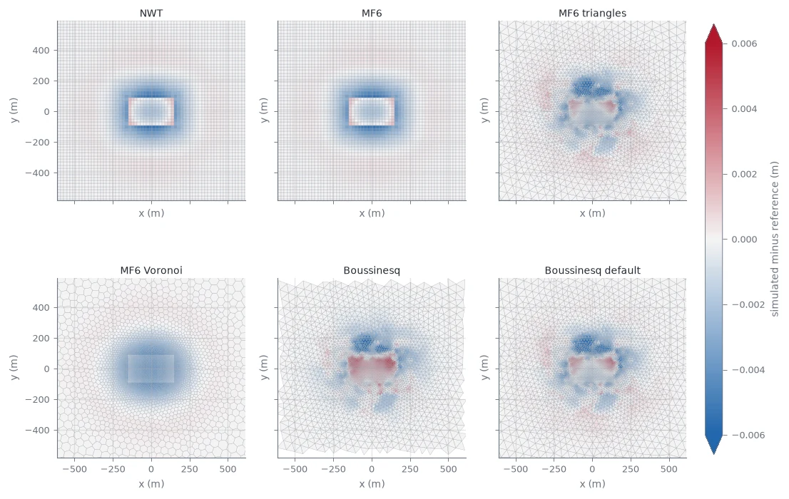
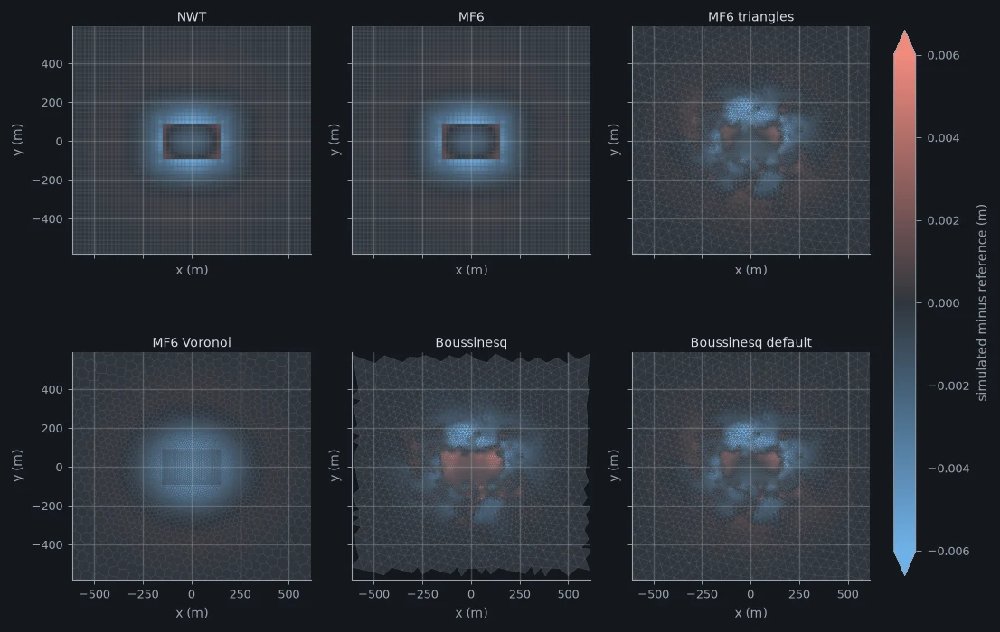
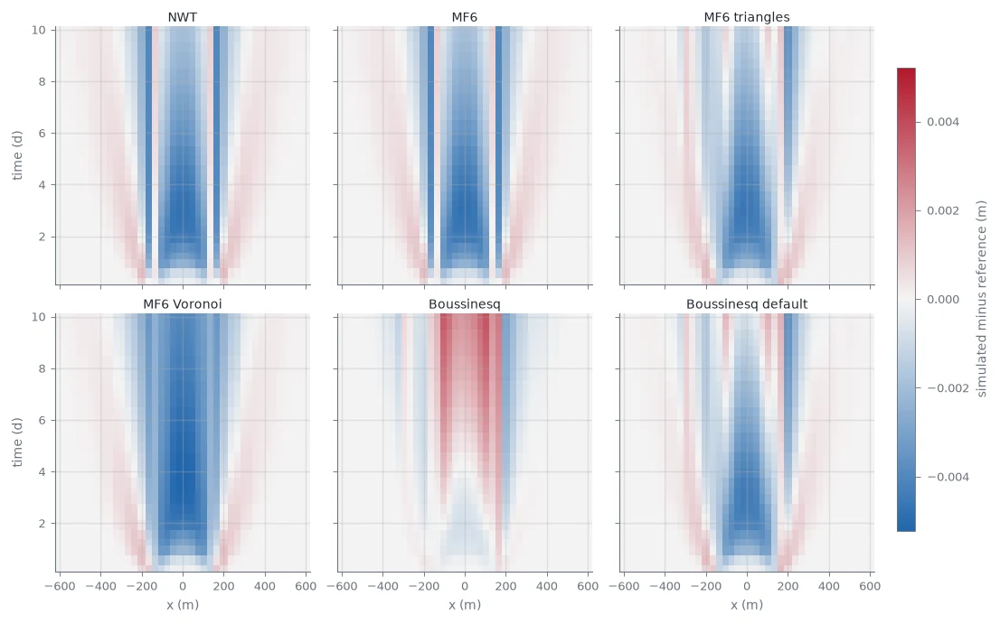
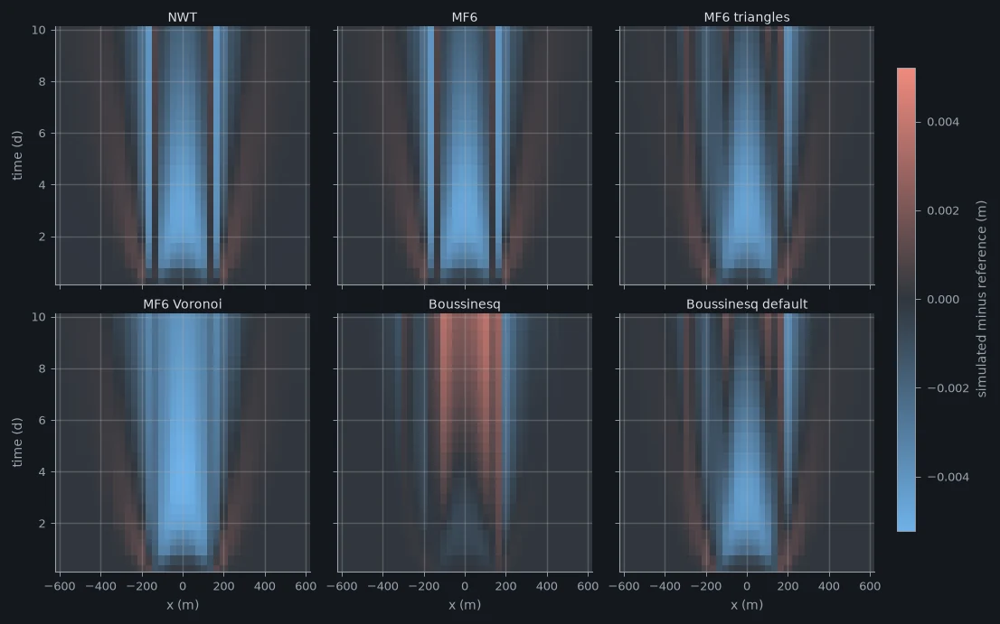
Why these thresholds
- Thresholds of
modflow_nwt,modflow6: Twice the error measured against the Hantush mound on the 101 x 101 grid of 20 m with steps of 6 h, MODFLOW-NWT and MODFLOW 6 alike: transect space-time RMSE 1.6e-3 m, max error 4.8e-3 m (the centre at day 3), final transect RMSE 1.3e-3 m, final map max 5.4e-3 m, for a mound of 0.75 m. Refined with MODFLOW 6, steps of 3 and 1 h read RMSE 9.5e-4 and 9.1e-4 m on 20 m cells, the floor of the 20 m grid; cells of 6.7 m read 2.0e-3 m with 6 h steps and 4.2e-4 m with 1 h steps (max 1.2e-3 m). That limit is the linearization: a nonlinear finite-difference solution on 6.7 m cells and 45 min steps reads 3.5e-4 m and 1.1e-3 m against the reference. - Thresholds of
boussinesq: Twice the error measured with PETSc TS VI (4 backward-Euler steps a period) on the conforming triangles of the MODFLOW 6 triangle grid: transect space-time RMSE 1.1e-3 m, max error 4.7e-3 m, centre max 2.2e-3 m, final transect RMSE 1.8e-3 m, final map max 9.0e-3 m. The map max sits in the cells where MODFLOW 6 reads its own on these triangles, 20 to 40 m outside the long sides of the rectangle. - Thresholds of
boussinesq_local: Twice the error measured with the default 'auto' engine, which runs scipy_sparse on these 6806 conforming triangles with one backward-Euler step a period: transect space-time RMSE 1.37e-3 m, max error 4.6e-3 m, centre max 4.4e-3 m, final transect RMSE 1.2e-3 m, final map max 1.04e-2 m. MODFLOW 6 on the same triangles reads the same within 4 %, and its refinement converges to Hantush: the error is the mesh and the step. The run stores the whole recharge, 0.99999999 of the recharged volume. Until 2026-10-10 the surface closure released 3.6 % of the recharge with the water table 10 m under the top, and the mound ended 1.7 cm low. - Thresholds of
modflow6_irregular_tri: Twice the error measured on the conforming triangles, 6806 cells of 10 m under the rectangle and up to 80 m at the sides, whose edges follow the rectangle so each triangle takes all or none of the recharge: transect space-time RMSE 1.4e-3 m, max error 4.7e-3 m, centre max 4.6e-3 m, final transect RMSE 1.2e-3 m. The final map max, 1.0e-2 m, sits 20 to 40 m outside the long sides, where triangles of 12 m meet the recharge edge: the two-point flux between centroids is not consistent on a general triangle, and the Boussinesq runtime on the same triangles reads the same cells. - Thresholds of
modflow6_voronoi: Twice the error measured on the Voronoi dual, 3556 cells centred on nodes that face each other across the rectangle edges, so each cell takes all or none of the recharge: transect space-time RMSE 2.0e-3 m, max error 5.3e-3 m (the centre at day 3.75), final transect RMSE 2.0e-3 m, final map max 4.5e-3 m. The dual is K-orthogonal: its map error stays at the level of the structured grid.
Schedule. modflow_nwt, modflow6, modflow6_irregular_tri, modflow6_voronoi: runs in Nightly / validation no PETSc, Weekly / Cross Platform, Tests / fast marker. boussinesq_local: runs in Nightly / validation no PETSc, Weekly / Cross Platform. boussinesq: runs in Nightly / validation PETSc. Jobs.
What the test does, all thresholds, the file
| Threshold | modflow_nwt | modflow6 | modflow6_irregular_tri | modflow6_voronoi | boussinesq | boussinesq_local |
|---|---|---|---|---|---|---|
| Transect space-time RMSE (m) < | 0.0033 | 0.0033 | 0.0029 | 0.004 | 0.0022 | 0.0028 |
| Transect space-time max abs error (m) < | 0.0096 | 0.0096 | 0.0095 | 0.0105 | 0.0094 | 0.0093 |
| Centre rise max abs error (m) < | 0.0096 | 0.0096 | 0.0092 | 0.0105 | 0.0045 | 0.0089 |
| Final transect RMSE (m) < | 0.0027 | 0.0027 | 0.0024 | 0.0041 | 0.0036 | 0.0025 |
| Final map max abs error (m) < | 0.011 | 0.011 | 0.021 | 0.009 | 0.018 | 0.021 |
From validation_cases/analytical/transient/hantush_recharge_mound_2d/: modflow_nwt reads tolerances.toml, modflow6 reads tolerances.toml, modflow6_irregular_tri reads tolerances_modflow6_irregular_tri.toml, modflow6_voronoi reads tolerances_modflow6_voronoi.toml, boussinesq reads tolerances_boussinesq.toml, boussinesq_local reads tolerances_boussinesq_local.toml.
Run it alone: python -m validation_cases.analytical.transient.hantush_recharge_mound_2d.run_case
Test functions
- Recharge mound matches hantush modflow.
- Recharge mound matches hantush default engine.
- Recharge mound matches hantush boussinesq petsc.
File tests/validation/analytical/transient/test_hantush_recharge_mound_2d.py. Markers: analytical, fast, petsc, slow, transient, validation.
Transient unconfined pumping case against a late-time radial reference#
pass end to endmodflow_nwtmodflow6modflow6_irregular_trimodflow6_voronoiboussinesq_local
Compared with: Theis well function at late time with T = K * href and S = Sy, early delayed-yield effects left out.
Last measurement
| Variant | Metric | Measured | Threshold | Share used | Share of the signal |
|---|---|---|---|---|---|
| Late time unconfined pumping 2d matches late time reference boussinesq pass | Space-time RMSE | 0.00283 m | < 0.0057 m | 50% | 0.3% / 0.7% |
| Space-time max abs error | 0.00819 m | < 0.017 m | 48% | 1.0% / 2.0% | |
| Final-time RMSE | 0.00426 m | < 0.0086 m | 50% | 0.5% / 1.0% | |
| Final-time max abs error | 0.00819 m | < 0.017 m | 48% | 1.0% / 2.0% | |
| Azimuthal spread | 0.00128 m | < 0.0026 m | 49% | 0.1% / 0.3% | |
| Late time unconfined pumping 2d matches late time reference default engine [boussinesq_local] pass | Space-time RMSE | 0.0048 m | < 0.0086 m | 56% | 0.6% / 1.0% |
| Space-time max abs error | 0.014 m | < 0.026 m | 54% | 1.6% / 3.0% | |
| Final-time RMSE | 0.00354 m | < 0.0077 m | 46% | 0.4% / 0.9% | |
| Final-time max abs error | 0.00451 m | < 0.009 m | 50% | 0.5% / 1.1% | |
| Azimuthal spread | 0.00122 m | < 0.0027 m | 45% | 0.1% / 0.3% | |
| Late time unconfined pumping 2d matches late time reference fast solvers [modflow_nwt] pass | Space-time RMSE | 0.00442 m | < 0.009 m | 49% | 0.5% / 1.0% |
| Space-time max abs error | 0.00971 m | < 0.02 m | 49% | 1.1% / 2.3% | |
| Final-time RMSE | 0.00534 m | < 0.011 m | 49% | 0.6% / 1.3% | |
| Final-time max abs error | 0.00971 m | < 0.02 m | 49% | 1.1% / 2.3% | |
| Azimuthal spread | 9.54e-07 m | < 1e-05 m | 10% | 0.0% / 0.0% | |
| Late time unconfined pumping 2d matches late time reference fast solvers [modflow6] pass | Space-time RMSE | 0.00442 m | < 0.009 m | 49% | 0.5% / 1.0% |
| Space-time max abs error | 0.00972 m | < 0.02 m | 49% | 1.1% / 2.3% | |
| Final-time RMSE | 0.00534 m | < 0.011 m | 49% | 0.6% / 1.3% | |
| Final-time max abs error | 0.00972 m | < 0.02 m | 49% | 1.1% / 2.3% | |
| Azimuthal spread | 2.81e-07 m | < 1e-05 m | 3% | 0.0% / 0.0% | |
| Late time unconfined pumping 2d matches late time reference fast solvers [modflow6_irregular_tri] pass | Space-time RMSE | 0.00441 m | < 0.0089 m | 50% | 0.5% / 1.0% |
| Space-time max abs error | 0.0145 m | < 0.029 m | 50% | 1.7% / 3.4% | |
| Final-time RMSE | 0.00338 m | < 0.0068 m | 50% | 0.4% / 0.8% | |
| Final-time max abs error | 0.00495 m | < 0.0099 m | 50% | 0.6% / 1.2% | |
| Azimuthal spread | 0.02 m | < 0.04 m | 50% | 2.3% / 4.7% | |
| Late time unconfined pumping 2d matches late time reference fast solvers [modflow6_voronoi] pass | Space-time RMSE | 0.00941 m | < 0.019 m | 50% | 1.1% / 2.2% |
| Space-time max abs error | 0.0227 m | < 0.046 m | 49% | 2.6% / 5.3% | |
| Final-time RMSE | 0.00625 m | < 0.013 m | 48% | 0.7% / 1.5% | |
| Final-time max abs error | 0.00766 m | < 0.016 m | 48% | 0.9% / 1.8% | |
| Azimuthal spread | 0.00217 m | < 0.0044 m | 49% | 0.2% / 0.5% |
Measured on 2026-10-12, commit 427d8bb47 with uncommitted changes, version 2.0.0a4, a local run; 2026-10-13, commit 91d97cabd, version 2.0.0a5, the nightly CI job (job log). The last column gives the measured value and the threshold as shares of the largest drawdown of the reference, 0.854 to 0.871 m.
reference of each runNWTMF6MF6 trianglesMF6 VoronoiBoussinesq defaultrun
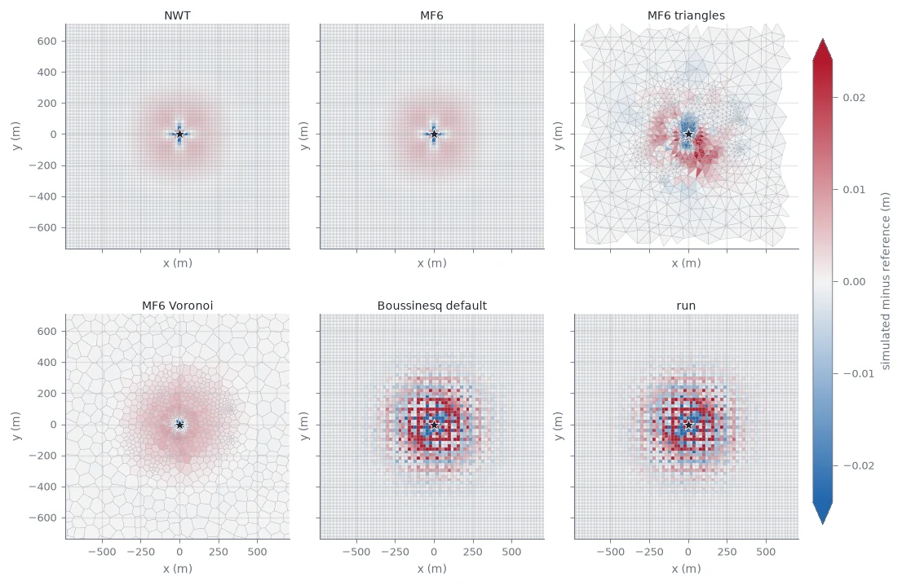
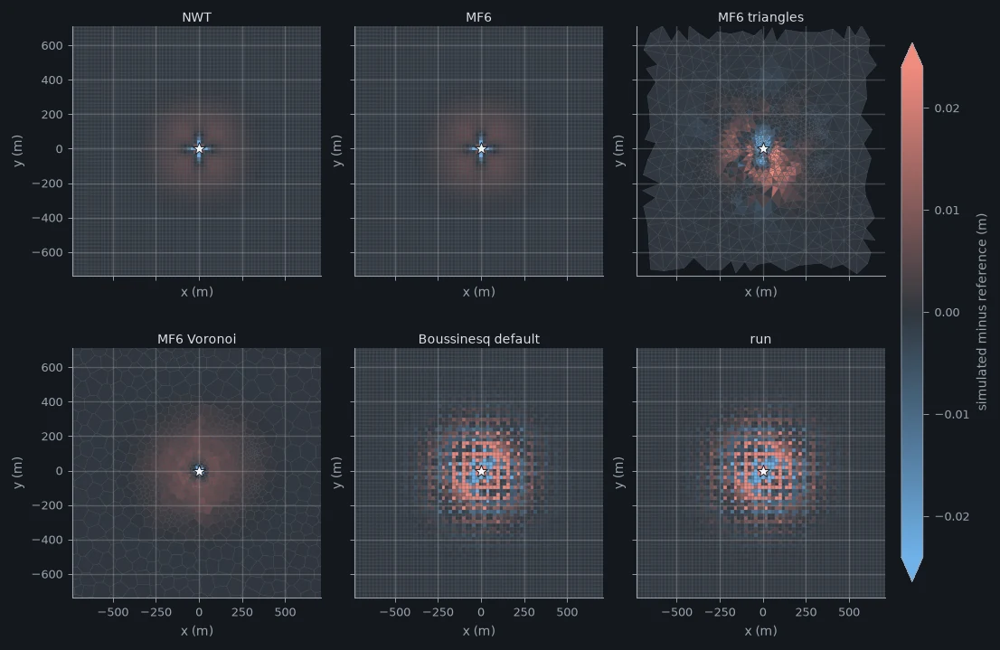
Why these thresholds
- Thresholds of
modflow_nwt,modflow6: Twice the error measured against the Theis drawdown, MODFLOW-NWT and MODFLOW 6 alike: space-time RMSE 4.4e-3 m, max error 9.8e-3 m, final RMSE 5.3e-3 m. The azimuthal spread bound is ten times the MODFLOW 6 head closure, 1e-6 m: the grid is symmetric about the well. Until 2026-10-09 the reference evaluated E1 by an asymptotic series that is wrong between u = 1 and 8, which doubled the space-time error at the outer monitor points. - Thresholds of
boussinesq_local: About twice the error measured with the default 'auto' engine, which runs scipy_sparse on the 10082 triangles of 71 x 71 squares (397 m2, the cell area of the MODFLOW grid) with one backward-Euler step a period: space-time RMSE 0.0048 m, max error 0.0140 m, final RMSE 0.0035 m, final max error 0.0045 m, azimuthal spread 0.0012 m. MODFLOW on its 101 x 101 grid, with the same single step a period, reads a space-time RMSE of 0.0044 m: the error is the time step and the fixed-transmissivity Theis reference. The reference is read at the centroid of the triangle each monitor point reads, with the well at the centroid of the triangle that holds it, 6.6 m off the well point. Read from the well point, that offset alone gave an azimuthal spread of 0.136 m on the former 31 x 31 mesh. Until 2026-10-10 the surface closure sent up to 3.4 m3/day of the pumping out of the well cell, 10 m under the top: space-time RMSE 0.0043 m, final max error 0.0064 m. - Thresholds of
modflow6_irregular_tri: Twice the error measured on the refined triangle mesh: space-time RMSE 4.4e-3 m, max error 1.45e-2 m, final RMSE 3.4e-3 m, final max error 5.0e-3 m, azimuthal spread 0.020 m. The reference is read at the centroid of the triangle each monitor point reads, with the well at the centroid of the triangle that holds it. The well point is a mesh node, and MODFLOW 6 puts the well in the first triangle that holds it, whose centroid lies 15.4 m away: read from the well point, that offset gave an azimuthal spread of 0.087 m. The spread left, 0.020 m at 60 m where the drawdown is 0.85 m, is the asymmetry of the gmsh refinement (165 to 221 triangles per quadrant within 300 m). - Thresholds of
modflow6_voronoi: Twice the error measured on the Voronoi dual of the refined mesh, the reference read at the node of the cell each monitor point reads: space-time RMSE 9.4e-3 m, max error 2.3e-2 m, final RMSE 6.3e-3 m, final max error 7.7e-3 m, azimuthal spread of the error 2.2e-3 m. A node sits on the well, so the cell that holds the well is centred on it. Read at the monitor radius instead, 1 to 18 m from that node, the error was twice as large. Until 2026-10-10 the spread was taken on the drawdown, not on the error, and read 0.040 m: the cells read sit at different radii.
Schedule. modflow_nwt, modflow6, modflow6_irregular_tri, modflow6_voronoi: runs in Nightly / validation no PETSc, Weekly / Cross Platform, Tests / fast marker. This file: runs in Nightly / validation PETSc. boussinesq_local: runs in Nightly / validation no PETSc, Weekly / Cross Platform. Jobs.
What the test does, all thresholds, the file
| Threshold | modflow_nwt | modflow6 | modflow6_irregular_tri | modflow6_voronoi | boussinesq_local |
|---|---|---|---|---|---|
| Space-time RMSE (m) < | 0.009 | 0.009 | 0.0089 | 0.019 | 0.0086 |
| Space-time max abs error (m) < | 0.02 | 0.02 | 0.029 | 0.046 | 0.026 |
| Final-time RMSE (m) < | 0.011 | 0.011 | 0.0068 | 0.013 | 0.0077 |
| Final-time max abs error (m) < | 0.02 | 0.02 | 0.0099 | 0.016 | 0.009 |
| Azimuthal spread (m) < | 1e-05 | 1e-05 | 0.04 | 0.0044 | 0.0027 |
From validation_cases/analytical/transient/late_time_unconfined_pumping_2d/: modflow_nwt reads tolerances.toml, modflow6 reads tolerances.toml, modflow6_irregular_tri reads tolerances_modflow6_irregular_tri.toml, modflow6_voronoi reads tolerances_modflow6_voronoi.toml, boussinesq_local reads tolerances_boussinesq_local.toml.
Run it alone: python -m validation_cases.analytical.transient.late_time_unconfined_pumping_2d.run_case
Test functions
- Late time unconfined pumping 2d matches late time reference fast solvers.
- Late time unconfined pumping 2d matches late time reference boussinesq.
- Late time unconfined pumping 2d matches late time reference default engine.
File tests/validation/analytical/transient/test_late_time_unconfined_pumping_2d.py. Markers: analytical, fast, petsc, slow, transient, validation.
Propagation of a tide into an unconfined strip against the Ferris solution#
pass end to endmodflow_nwtmodflow6modflow6_irregular_trimodflow6_voronoiboussinesqboussinesq_local
Compared with: Ferris (1951) tidal propagation into a semi-infinite linearized unconfined aquifer, T = K b with the saturated thickness b, S = Sy.
Last measurement
| Variant | Metric | Measured | Threshold | Share used | Share of the signal |
|---|---|---|---|---|---|
| Tide matches ferris boussinesq petsc [boussinesq] pass | Space-time RMSE | 0.00348 m | < 0.007 m | 50% | 0.7% / 1.4% |
| Space-time max abs error | 0.0289 m | < 0.058 m | 50% | 5.9% / 11.9% | |
| Cross-row head spread | 1.38e-15 m | < 1e-08 m | 0% | 0.0% / 0.0% | |
| Final-profile RMSE | 0.00113 m | < 0.0023 m | 49% | 0.2% / 0.5% | |
| Final-profile max abs error | 0.00277 m | < 0.0056 m | 49% | 0.6% / 1.2% | |
| Decay length relative error | 0.0189 | < 0.038 | 50% | ||
| Lag length relative error | 0.0245 | < 0.049 | 50% | ||
| Tide matches ferris default engine [boussinesq_local] pass | Space-time RMSE | 0.00511 m | < 0.0103 m | 50% | 1.1% / 2.1% |
| Space-time max abs error | 0.0308 m | < 0.062 m | 50% | 6.3% / 12.8% | |
| Cross-row head spread | 1.12e-15 m | < 1e-07 m | 0% | 0.0% / 0.0% | |
| Final-profile RMSE | 0.00344 m | < 0.0069 m | 50% | 0.7% / 1.4% | |
| Final-profile max abs error | 0.0102 m | < 0.021 m | 49% | 2.1% / 4.3% | |
| Decay length relative error | 0.0589 | < 0.12 | 49% | ||
| Lag length relative error | 0.0746 | < 0.15 | 50% | ||
| Tide matches ferris modflow [modflow_nwt] pass | Space-time RMSE | 0.00532 m | < 0.011 m | 48% | 1.1% / 2.2% |
| Space-time max abs error | 0.0325 m | < 0.066 m | 49% | 6.5% / 13.2% | |
| Cross-row head spread | 1.66e-06 m | < 1e-05 m | 17% | 0.0% / 0.0% | |
| Final-profile RMSE | 0.00343 m | < 0.0069 m | 50% | 0.7% / 1.4% | |
| Final-profile max abs error | 0.0102 m | < 0.021 m | 49% | 2.0% / 4.2% | |
| Decay length relative error | 0.0596 | < 0.12 | 50% | ||
| Lag length relative error | 0.0777 | < 0.155 | 50% | ||
| Tide matches ferris modflow [modflow6] pass | Space-time RMSE | 0.00532 m | < 0.011 m | 48% | 1.1% / 2.2% |
| Space-time max abs error | 0.0325 m | < 0.066 m | 49% | 6.5% / 13.2% | |
| Cross-row head spread | 8.55e-07 m | < 1e-05 m | 9% | 0.0% / 0.0% | |
| Final-profile RMSE | 0.00343 m | < 0.0069 m | 50% | 0.7% / 1.4% | |
| Final-profile max abs error | 0.0102 m | < 0.021 m | 49% | 2.0% / 4.2% | |
| Decay length relative error | 0.0596 | < 0.12 | 50% | ||
| Lag length relative error | 0.0771 | < 0.155 | 50% | ||
| Tide matches ferris modflow [modflow6_irregular_tri] pass | Space-time RMSE | 0.00491 m | < 0.0099 m | 50% | 1.1% / 2.1% |
| Space-time max abs error | 0.0294 m | < 0.059 m | 50% | 6.3% / 12.7% | |
| Cross-row head spread | 0 m | < 1e-09 m | 0% | 0.0% / 0.0% | |
| Final-profile RMSE | 0.0035 m | < 0.0071 m | 49% | 0.8% / 1.5% | |
| Final-profile max abs error | 0.0104 m | < 0.021 m | 49% | 2.2% / 4.5% | |
| Decay length relative error | 0.0596 | < 0.12 | 50% | ||
| Lag length relative error | 0.0711 | < 0.143 | 50% | ||
| Tide matches ferris modflow [modflow6_voronoi] pass | Space-time RMSE | 0.00643 m | < 0.013 m | 49% | 1.4% / 2.8% |
| Space-time max abs error | 0.0364 m | < 0.073 m | 50% | 7.9% / 15.9% | |
| Cross-row head spread | 0 m | < 1e-09 m | 0% | 0.0% / 0.0% | |
| Final-profile RMSE | 0.00589 m | < 0.012 m | 49% | 1.3% / 2.6% | |
| Final-profile max abs error | 0.0183 m | < 0.037 m | 49% | 4.0% / 8.0% | |
| Decay length relative error | 0.0592 | < 0.12 | 49% | ||
| Lag length relative error | 0.0715 | < 0.143 | 50% |
Measured on 2026-10-12, commit 427d8bb47 with uncommitted changes, version 2.0.0a4, a local run; 2026-10-13, commit 91d97cabd, version 2.0.0a5, the nightly CI job (job log). The last column gives the measured value and the threshold as shares of the head range of the reference over space and time, 0.46 to 0.5 m.
reference of each runNWTMF6BoussinesqBoussinesq default
referenceNWTMF6
referenceNWTMF6
reference of each runMF6 trianglesMF6 Voronoi
referenceMF6 triangles
referenceMF6 triangles
referenceMF6 Voronoi
referenceMF6 Voronoi
referenceBoussinesqBoussinesq default
referenceBoussinesqBoussinesq default
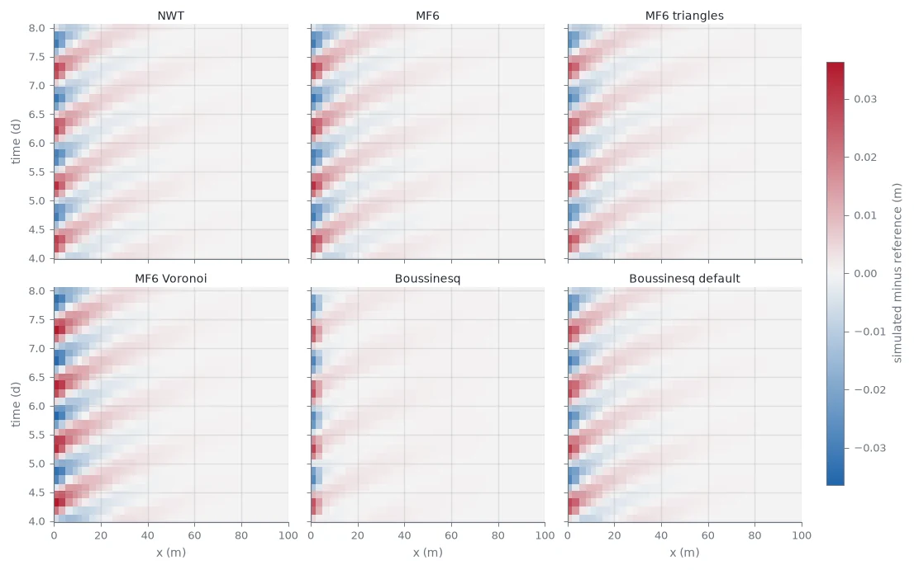
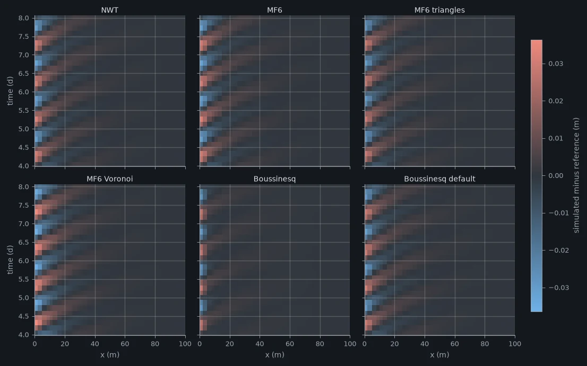
Why these thresholds
- Thresholds of
modflow_nwt,modflow6: Twice the error measured on the 50-column grid of 2 m over the last four tides, MODFLOW-NWT and MODFLOW 6 alike: space-time RMSE 5.3e-3 m, max error 3.3e-2 m, final RMSE 3.4e-3 m, final max 1.0e-2 m; decay length 11.03 m and lag length 12.63 m against 11.73 m, errors of 6.0 % and 7.7 %. The error is backward Euler with one step per hourly period, 24 a tide: theory shortens the decay length and stretches the lag length by about w dt / 4 = 6.5 %. Periods of 4, 2 and 1 h give a space-time RMSE of 2.0e-2, 1.0e-2 and 5.3e-3 m, and lag-length errors of 45, 17 and 7.7 %; 16 sub-steps a period bring the decay and lag errors to 0.9 and 1.7 %, and 100 columns change the RMSE by 5 %. The max error sits in the sea column, which holds the mean tide of each hour while the reference holds the tide at the output time: A w dt / 2 = 3.3e-2 m. The row spread bound is 0.1 times the MODFLOW 6 head closure (1e-4 m). - Thresholds of
boussinesq: Twice the error measured with PETSc on 50 x 5 square cells of 2 m split into triangles: space-time RMSE 3.5e-3 m, max error 2.9e-2 m, final RMSE 1.1e-3 m, final max 2.8e-3 m; decay and lag length errors 1.9 and 2.5 %. PETSc takes 4 backward-Euler steps a period (TS VI), and MODFLOW 6 with 4 sub-steps a period reads 2.0 and 2.8 % on the same tide, so the error is first order in time. The max error sits in the sea column, which holds the mean tide of each hour. The strip is uniform across rows, so a row spread is solver noise: PETSc reads 1e-15 m; the bound is 1e-8 m. - Thresholds of
boussinesq_local: Twice the error measured with the default 'auto' engine, which runs scipy_sparse on these 500 triangles with one backward-Euler step a period: space-time RMSE 5.1e-3 m, max error 3.1e-2 m, final RMSE 3.4e-3 m, final max 1.0e-2 m; decay and lag length errors 5.9 and 7.5 %, the MODFLOW values of tolerances.toml, where the error is explained. The strip is uniform across rows, so a row spread is solver noise: the sparse engine reads 4e-11 m; the bound is 1e-7 m, as on the sibling strips. - Thresholds of
modflow6_irregular_tri: Twice the error measured on the triangle strip of 1446 cells about 1.5 m across, the sea head posed at the mean centroid of the triangles on the west face: space-time RMSE 4.9e-3 m, max error 2.9e-2 m, final RMSE 3.5e-3 m, final max 1.0e-2 m; decay and lag length errors 6.0 and 7.1 %. As on the structured grid, the error is backward Euler with one step per hourly period (see tolerances.toml). The row spread is zero by construction: the loader collapses the strip to one profile. - Thresholds of
modflow6_voronoi: Twice the error measured on the Voronoi dual of the triangle strip, 763 cells centred on the nodes, the sea head held on the nodes of the west face and the reference read at the node of each cell: space-time RMSE 6.4e-3 m, max error 3.6e-2 m, final RMSE 5.9e-3 m, final max 1.8e-2 m; decay and lag length errors 5.9 and 7.2 %. The decay and lag match the other grids, so the error is backward Euler with one step per hourly period (see tolerances.toml); the dual cells are twice as large as the triangles, which adds to the RMSE. The row spread is zero by construction: the comparison bins the cells into one profile.
Schedule. modflow_nwt, modflow6, modflow6_irregular_tri, modflow6_voronoi, boussinesq_local: runs in Nightly / validation no PETSc, Weekly / Cross Platform, Tests / fast marker. boussinesq: runs in Nightly / validation PETSc (skipped in Tests / fast marker: no petsc4py there). Jobs.
What the test does, all thresholds, the file
| Threshold | modflow_nwt | modflow6 | modflow6_irregular_tri | modflow6_voronoi | boussinesq | boussinesq_local |
|---|---|---|---|---|---|---|
| Final-profile RMSE (m) < | 0.0069 | 0.0069 | 0.0071 | 0.012 | 0.0023 | 0.0069 |
| Final-profile max abs error (m) < | 0.021 | 0.021 | 0.021 | 0.037 | 0.0056 | 0.021 |
| Decay length relative error < | 0.12 | 0.12 | 0.12 | 0.12 | 0.038 | 0.12 |
| Lag length relative error < | 0.155 | 0.155 | 0.143 | 0.143 | 0.049 | 0.15 |
From validation_cases/analytical/transient/linearized_unconfined_boundary_periodic_1d/: modflow_nwt reads tolerances.toml, modflow6 reads tolerances.toml, modflow6_irregular_tri reads tolerances_modflow6_irregular_tri.toml, modflow6_voronoi reads tolerances_modflow6_voronoi.toml, boussinesq reads tolerances_boussinesq.toml, boussinesq_local reads tolerances_boussinesq_local.toml.
Run it alone: python -m validation_cases.analytical.transient.linearized_unconfined_boundary_periodic_1d.run_case
Test functions
- Tide matches ferris modflow.
- Tide matches ferris default engine.
- Tide matches ferris boussinesq petsc.
File tests/validation/analytical/transient/test_linearized_unconfined_boundary_periodic_1d.py. Markers: analytical, fast, petsc, transient, validation.
Linearized unconfined transient cases against their analytical references#
pass end to endmodflow_nwtmodflow6modflow6_irregular_triboussinesqboussinesq_localpetsc_ts_vi_obstaclepetsc_vi_obstacle
Compared with: linearized 1D unconfined response to a piecewise west-boundary series; linearized 1D unconfined response to a step of the west boundary head; linearized 1D unconfined response to a sinusoidal recharge; linearized 1D unconfined response to a recharge step; linearized 1D unconfined response to a recharge step in a deep aquifer, where the linearization error is smaller.
Case lu_boundary_piecewise_1d
Case lu_boundary_step_1d
Case lu_recharge_periodic_1d
Case lu_recharge_step_1d
Case lu_recharge_step_deep_1d
Last measurement
| Variant | Metric | Measured | Threshold | Share used | Share of the signal |
|---|---|---|---|---|---|
| Linearized unconfined transient 1d default engine matches reference profiles [boussinesq_local-boundary_piecewise] pass | Space-time RMSE | 0.00606 m | < 0.013 m | 47% | 2.0% / 4.4% |
| Space-time max abs error | 0.0335 m | < 0.067 m | 50% | 11.2% / 22.4% | |
| Cross-row head spread | 1.12e-15 m | < 1e-07 m | 0% | 0.0% / 0.0% | |
| Final-profile RMSE | 0.00272 m | < 0.0056 m | 49% | 0.9% / 1.9% | |
| Linearized unconfined transient 1d default engine matches reference profiles [boussinesq_local-boundary_step] pass | Space-time RMSE | 0.00136 m | < 0.0028 m | 48% | 1.4% / 2.8% |
| Space-time max abs error | 0.0122 m | < 0.025 m | 49% | 12.2% / 25.1% | |
| Cross-row head spread | 3.84e-14 m | < 1e-07 m | 0% | 0.0% / 0.0% | |
| Final-profile RMSE | 9.28e-05 m | < 0.00018 m | 52% | 0.1% / 0.2% | |
| Linearized unconfined transient 1d default engine matches reference profiles [boussinesq_local-recharge_periodic] pass | Space-time RMSE | 0.0059 m | < 0.01 m | 59% | 4.6% / 7.8% |
| Space-time max abs error | 0.0137 m | < 0.028 m | 49% | 10.7% / 21.9% | |
| Cross-row head spread | 1.59e-15 m | < 1e-07 m | 0% | 0.0% / 0.0% | |
| Final-profile RMSE | 0.00178 m | < 0.0034 m | 52% | 1.4% / 2.7% | |
| Linearized unconfined transient 1d default engine matches reference profiles [boussinesq_local-recharge_step] pass | Space-time RMSE | 0.00216 m | < 0.0044 m | 49% | 1.6% / 3.2% |
| Space-time max abs error | 0.00995 m | < 0.015 m | 66% | 7.2% / 10.8% | |
| Cross-row head spread | 7.84e-14 m | < 1e-07 m | 0% | 0.0% / 0.0% | |
| Final-profile RMSE | 0.000808 m | < 0.0015 m | 54% | 0.6% / 1.1% | |
| Linearized unconfined transient 1d default engine matches reference profiles [boussinesq_local-recharge_step_deep] pass | Space-time RMSE | 0.00023 m | < 0.00046 m | 50% | 1.7% / 3.3% |
| Space-time max abs error | 0.00248 m | < 0.005 m | 50% | 18.0% / 36.4% | |
| Cross-row head spread | 0 m | < 1e-07 m | 0% | 0.0% / 0.0% | |
| Final-profile RMSE | 1.57e-06 m | < 3.2e-06 m | 49% | 0.0% / 0.0% | |
| Linearized unconfined transient 1d matches reference profiles [modflow_nwt-boundary_piecewise] pass | Space-time RMSE | 0.00606 m | < 0.013 m | 47% | 2.0% / 4.3% |
| Space-time max abs error | 0.0334 m | < 0.067 m | 50% | 11.1% / 22.3% | |
| Cross-row head spread | 0 m | < 1e-05 m | 0% | 0.0% / 0.0% | |
| Final-profile RMSE | 0.00271 m | < 0.0056 m | 48% | 0.9% / 1.9% | |
| Linearized unconfined transient 1d matches reference profiles [modflow_nwt-boundary_step] pass | Space-time RMSE | 0.00137 m | < 0.0028 m | 49% | 1.4% / 2.8% |
| Space-time max abs error | 0.012 m | < 0.025 m | 48% | 12.0% / 25.0% | |
| Cross-row head spread | 3.41e-06 m | < 1e-05 m | 34% | 0.0% / 0.0% | |
| Final-profile RMSE | 6.99e-05 m | < 0.00018 m | 39% | 0.1% / 0.2% | |
| Linearized unconfined transient 1d matches reference profiles [modflow_nwt-recharge_periodic] pass | Space-time RMSE | 0.00536 m | < 0.01 m | 54% | 4.2% / 7.9% |
| Space-time max abs error | 0.0131 m | < 0.028 m | 47% | 10.3% / 22.1% | |
| Cross-row head spread | 3.81e-06 m | < 1e-05 m | 38% | 0.0% / 0.0% | |
| Final-profile RMSE | 0.000523 m | < 0.0034 m | 15% | 0.4% / 2.7% | |
| Linearized unconfined transient 1d matches reference profiles [modflow_nwt-recharge_step] pass | Space-time RMSE | 0.00203 m | < 0.0044 m | 46% | 1.5% / 3.2% |
| Space-time max abs error | 0.00916 m | < 0.015 m | 61% | 6.6% / 10.8% | |
| Cross-row head spread | 2.6e-06 m | < 1e-05 m | 26% | 0.0% / 0.0% | |
| Final-profile RMSE | 0.000647 m | < 0.0015 m | 43% | 0.5% / 1.1% | |
| Linearized unconfined transient 1d matches reference profiles [modflow_nwt-recharge_step_deep] pass | Space-time RMSE | 0.000259 m | < 0.00046 m | 56% | 1.9% / 3.3% |
| Space-time max abs error | 0.00157 m | < 0.005 m | 31% | 11.3% / 36.0% | |
| Cross-row head spread | 3.74e-06 m | < 1e-05 m | 37% | 0.0% / 0.1% | |
| Final-profile RMSE | 2.6e-06 m | < 2.1e-05 m | 12% | 0.0% / 0.2% | |
| Linearized unconfined transient 1d matches reference profiles [modflow6-boundary_piecewise] pass | Space-time RMSE | 0.00609 m | < 0.013 m | 47% | 2.0% / 4.3% |
| Space-time max abs error | 0.0335 m | < 0.067 m | 50% | 11.2% / 22.3% | |
| Cross-row head spread | 1.44e-06 m | < 1e-05 m | 14% | 0.0% / 0.0% | |
| Final-profile RMSE | 0.00276 m | < 0.0056 m | 49% | 0.9% / 1.9% | |
| Linearized unconfined transient 1d matches reference profiles [modflow6-boundary_step] pass | Space-time RMSE | 0.00138 m | < 0.0028 m | 49% | 1.4% / 2.8% |
| Space-time max abs error | 0.0123 m | < 0.025 m | 49% | 12.3% / 25.0% | |
| Cross-row head spread | 1.5e-06 m | < 1e-05 m | 15% | 0.0% / 0.0% | |
| Final-profile RMSE | 4.73e-05 m | < 0.00018 m | 26% | 0.0% / 0.2% | |
| Linearized unconfined transient 1d matches reference profiles [modflow6-recharge_periodic] pass | Space-time RMSE | 0.00586 m | < 0.01 m | 59% | 4.6% / 7.9% |
| Space-time max abs error | 0.0136 m | < 0.028 m | 49% | 10.7% / 22.1% | |
| Cross-row head spread | 7.98e-07 m | < 1e-05 m | 8% | 0.0% / 0.0% | |
| Final-profile RMSE | 0.00165 m | < 0.0034 m | 49% | 1.3% / 2.7% | |
| Linearized unconfined transient 1d matches reference profiles [modflow6-recharge_step] pass | Space-time RMSE | 0.00215 m | < 0.0044 m | 49% | 1.6% / 3.2% |
| Space-time max abs error | 0.00996 m | < 0.015 m | 66% | 7.2% / 10.8% | |
| Cross-row head spread | 1.01e-06 m | < 1e-05 m | 10% | 0.0% / 0.0% | |
| Final-profile RMSE | 0.000747 m | < 0.0015 m | 50% | 0.5% / 1.1% | |
| Linearized unconfined transient 1d matches reference profiles [modflow6-recharge_step_deep] pass | Space-time RMSE | 0.000228 m | < 0.00046 m | 50% | 1.6% / 3.3% |
| Space-time max abs error | 0.00246 m | < 0.005 m | 49% | 17.7% / 36.0% | |
| Cross-row head spread | 1.52e-07 m | < 1e-05 m | 2% | 0.0% / 0.1% | |
| Final-profile RMSE | 1.01e-05 m | < 2.1e-05 m | 48% | 0.1% / 0.2% | |
| Linearized unconfined transient 1d matches reference profiles [modflow6_irregular_tri-boundary_piecewise] pass | Space-time RMSE | 0.00614 m | < 0.013 m | 47% | 2.1% / 4.4% |
| Space-time max abs error | 0.0334 m | < 0.067 m | 50% | 11.2% / 22.4% | |
| Cross-row head spread | 0 m | < 1e-09 m | 0% | 0.0% / 0.0% | |
| Final-profile RMSE | 0.00288 m | < 0.0058 m | 50% | 1.0% / 1.9% | |
| Linearized unconfined transient 1d matches reference profiles [modflow6_irregular_tri-boundary_step] pass | Space-time RMSE | 0.00142 m | < 0.0029 m | 49% | 1.4% / 2.9% |
| Space-time max abs error | 0.0123 m | < 0.025 m | 49% | 12.3% / 25.1% | |
| Cross-row head spread | 0 m | < 1e-09 m | 0% | 0.0% / 0.0% | |
| Final-profile RMSE | 0.000154 m | < 0.00031 m | 50% | 0.2% / 0.3% | |
| Linearized unconfined transient 1d matches reference profiles [modflow6_irregular_tri-recharge_periodic] pass | Space-time RMSE | 0.00587 m | < 0.012 m | 49% | 4.6% / 9.5% |
| Space-time max abs error | 0.0134 m | < 0.027 m | 50% | 10.6% / 21.3% | |
| Cross-row head spread | 0 m | < 1e-09 m | 0% | 0.0% / 0.0% | |
| Final-profile RMSE | 0.00178 m | < 0.0036 m | 50% | 1.4% / 2.8% | |
| Linearized unconfined transient 1d matches reference profiles [modflow6_irregular_tri-recharge_step] pass | Space-time RMSE | 0.00215 m | < 0.0044 m | 49% | 1.6% / 3.2% |
| Space-time max abs error | 0.0099 m | < 0.02 m | 50% | 7.2% / 14.4% | |
| Cross-row head spread | 0 m | < 1e-09 m | 0% | 0.0% / 0.0% | |
| Final-profile RMSE | 0.000634 m | < 0.0013 m | 49% | 0.5% / 0.9% | |
| Linearized unconfined transient 1d matches reference profiles [modflow6_irregular_tri-recharge_step_deep] pass | Space-time RMSE | 0.00025 m | < 0.0005 m | 50% | 1.8% / 3.6% |
| Space-time max abs error | 0.00257 m | < 0.0052 m | 49% | 18.6% / 37.6% | |
| Cross-row head spread | 0 m | < 1e-09 m | 0% | 0.0% / 0.0% | |
| Final-profile RMSE | 1.94e-05 m | < 3.9e-05 m | 50% | 0.1% / 0.3% | |
| Linearized unconfined transient 1d matches reference profiles [boussinesq-boundary_piecewise] pass | Space-time RMSE | 0.00158 m | < 0.0032 m | 49% | 0.5% / 1.1% |
| Space-time max abs error | 0.00816 m | < 0.017 m | 48% | 2.7% / 5.7% | |
| Cross-row head spread | 1.12e-15 m | < 1e-08 m | 0% | 0.0% / 0.0% | |
| Final-profile RMSE | 0.000711 m | < 0.0015 m | 47% | 0.2% / 0.5% | |
| Linearized unconfined transient 1d matches reference profiles [boussinesq-boundary_step] pass | Space-time RMSE | 0.000343 m | < 0.00069 m | 50% | 0.3% / 0.7% |
| Space-time max abs error | 0.00322 m | < 0.0065 m | 50% | 3.2% / 6.5% | |
| Cross-row head spread | 0 m | < 1e-08 m | 0% | 0.0% / 0.0% | |
| Final-profile RMSE | 7.31e-05 m | < 0.00015 m | 49% | 0.1% / 0.2% | |
| Linearized unconfined transient 1d matches reference profiles [boussinesq-recharge_periodic] pass | Space-time RMSE | 0.00176 m | < 0.0036 m | 49% | 1.4% / 2.8% |
| Space-time max abs error | 0.00417 m | < 0.0084 m | 50% | 3.3% / 6.6% | |
| Cross-row head spread | 1.38e-15 m | < 1e-08 m | 0% | 0.0% / 0.0% | |
| Final-profile RMSE | 0.000254 m | < 0.00051 m | 50% | 0.2% / 0.4% | |
| Linearized unconfined transient 1d matches reference profiles [boussinesq-recharge_step] pass | Space-time RMSE | 0.000853 m | < 0.0018 m | 47% | 0.6% / 1.3% |
| Space-time max abs error | 0.00294 m | < 0.0059 m | 50% | 2.1% / 4.3% | |
| Cross-row head spread | 1.26e-15 m | < 1e-08 m | 0% | 0.0% / 0.0% | |
| Final-profile RMSE | 0.000635 m | < 0.0013 m | 49% | 0.5% / 0.9% | |
| Linearized unconfined transient 1d matches reference profiles [boussinesq-recharge_step_deep] pass | Space-time RMSE | 5.14e-05 m | < 0.00011 m | 47% | 0.4% / 0.8% |
| Space-time max abs error | 0.000565 m | < 0.0012 m | 47% | 4.1% / 8.7% | |
| Cross-row head spread | 0 m | < 1e-08 m | 0% | 0.0% / 0.0% | |
| Final-profile RMSE | 2.89e-06 m | < 5.8e-06 m | 50% | 0.0% / 0.0% | |
| Linearized unconfined transient 1d petsc obstacle matches reference profiles [petsc_ts_vi_obstacle-boundary_step] pass | Space-time RMSE | 0.000343 m | < 0.00069 m | 50% | 0.3% / 0.7% |
| Space-time max abs error | 0.00322 m | < 0.0065 m | 50% | 3.2% / 6.5% | |
| Cross-row head spread | 0 m | < 1e-08 m | 0% | 0.0% / 0.0% | |
| Final-profile RMSE | 7.31e-05 m | < 0.00015 m | 49% | 0.1% / 0.2% | |
| Linearized unconfined transient 1d petsc obstacle matches reference profiles [petsc_ts_vi_obstacle-recharge_step] pass | Space-time RMSE | 0.000853 m | < 0.0018 m | 47% | 0.6% / 1.3% |
| Space-time max abs error | 0.00294 m | < 0.0059 m | 50% | 2.1% / 4.3% | |
| Cross-row head spread | 1.26e-15 m | < 1e-08 m | 0% | 0.0% / 0.0% | |
| Final-profile RMSE | 0.000635 m | < 0.0013 m | 49% | 0.5% / 0.9% | |
| Linearized unconfined transient 1d petsc obstacle matches reference profiles [petsc_vi_obstacle-boundary_step] pass | Space-time RMSE | 0.000343 m | < 0.00069 m | 50% | 0.3% / 0.7% |
| Space-time max abs error | 0.00322 m | < 0.0065 m | 50% | 3.2% / 6.5% | |
| Cross-row head spread | 0 m | < 1e-08 m | 0% | 0.0% / 0.0% | |
| Final-profile RMSE | 7.31e-05 m | < 0.00015 m | 49% | 0.1% / 0.2% | |
| Linearized unconfined transient 1d petsc obstacle matches reference profiles [petsc_vi_obstacle-recharge_step] pass | Space-time RMSE | 0.000853 m | < 0.0018 m | 47% | 0.6% / 1.3% |
| Space-time max abs error | 0.00294 m | < 0.0059 m | 50% | 2.1% / 4.3% | |
| Cross-row head spread | 0 m | < 1e-08 m | 0% | 0.0% / 0.0% | |
| Final-profile RMSE | 0.000635 m | < 0.0013 m | 49% | 0.5% / 0.9% |
Measured on 2026-10-12, commit 427d8bb47 with uncommitted changes, version 2.0.0a4, a local run; 2026-10-13, commit 91d97cabd, version 2.0.0a5, the nightly CI job (job log). The last column gives the measured value and the threshold as shares of the head range of the reference over space and time, 0.0137 to 0.3 m.
reference of each runmodflow_nwt-boundary_piecewisemodflow6-boundary_piecewisemodflow6_irregular_tri-boundary_piecewiseboussinesq-boundary_piecewiseboussinesq_local-boundary_piecewise
reference of each runmodflow_nwt-boundary_stepmodflow6-boundary_stepmodflow6_irregular_tri-boundary_step
reference of each runmodflow_nwt-recharge_periodicmodflow6-recharge_periodicmodflow6_irregular_tri-recharge_periodicboussinesq-recharge_periodicboussinesq_local-recharge_periodic
reference of each runmodflow_nwt-recharge_stepmodflow6-recharge_stepmodflow6_irregular_tri-recharge_step
referencemodflow_nwt-recharge_step_deepmodflow6-recharge_step_deepmodflow6_irregular_tri-recharge_step_deep
referenceboussinesq-boundary_stepboussinesq_local-boundary_steppetsc_ts_vi_obstacle-boundary_steppetsc_vi_obstacle-boundary_step
referenceboussinesq-recharge_stepboussinesq_local-recharge_steppetsc_ts_vi_obstacle-recharge_steppetsc_vi_obstacle-recharge_step
referenceboussinesq-recharge_step_deepboussinesq_local-recharge_step_deep
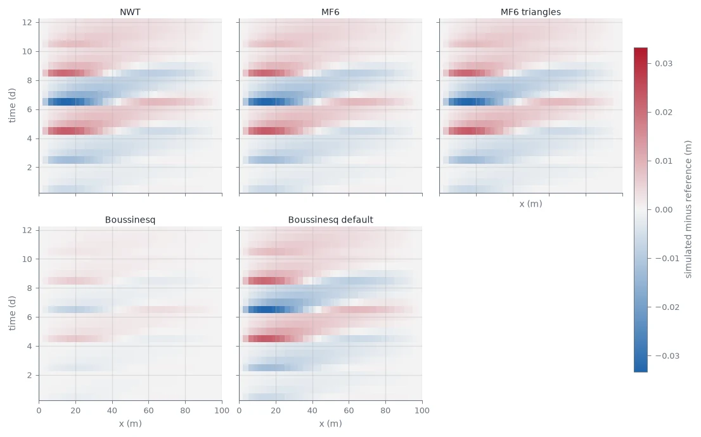
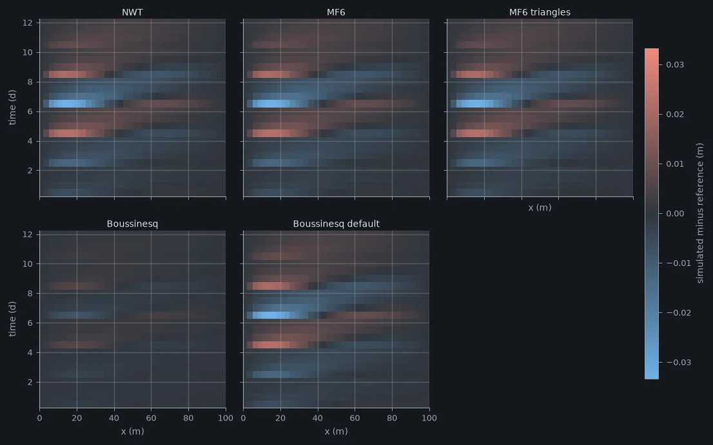
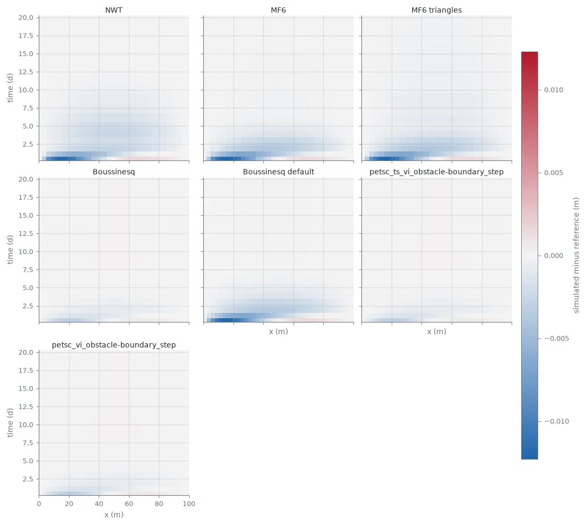
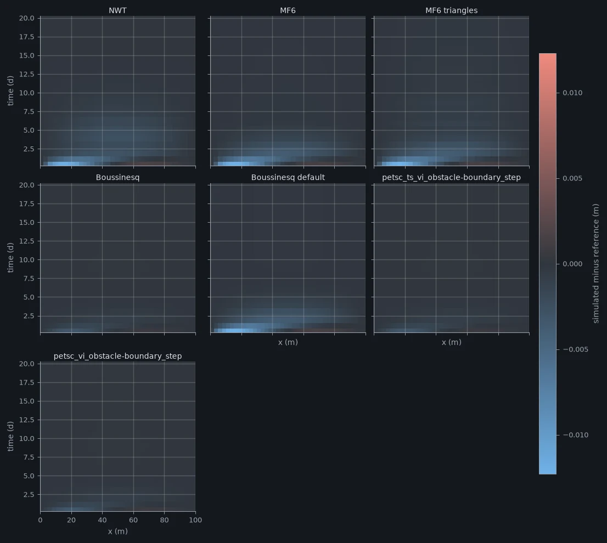
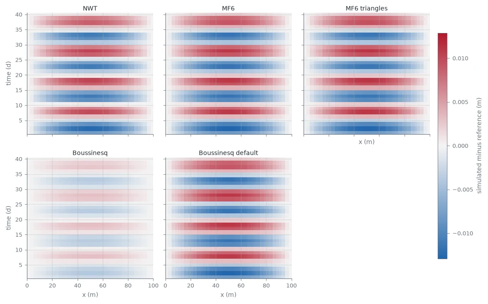
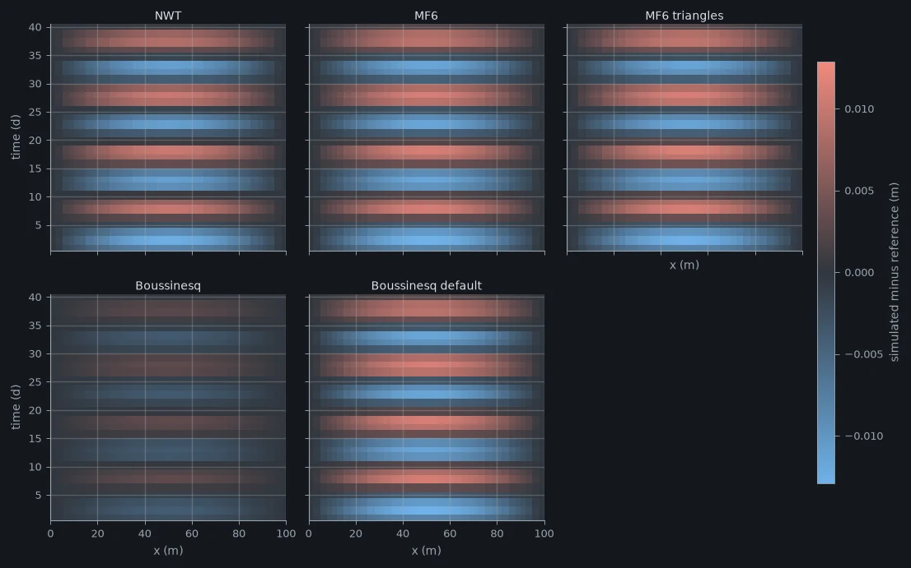
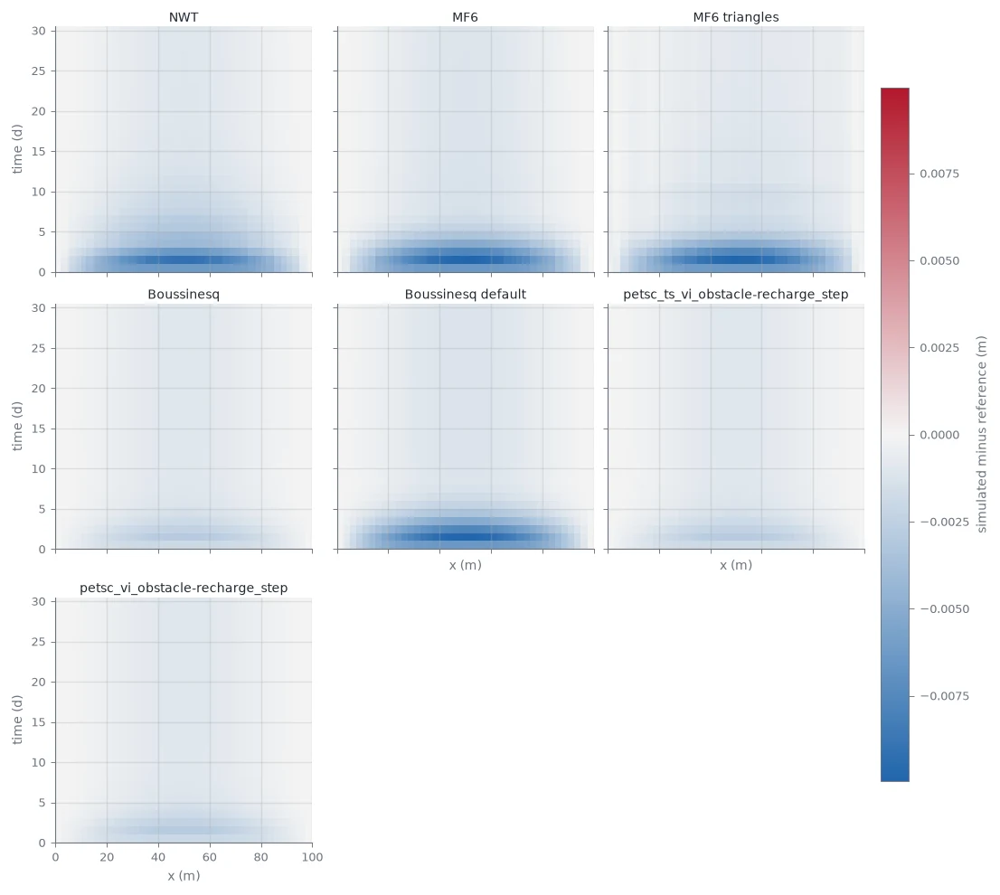
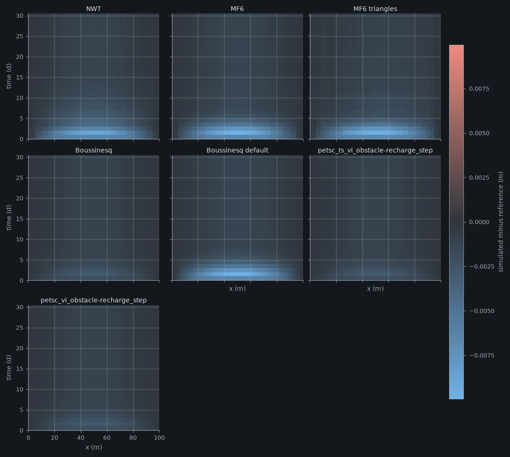
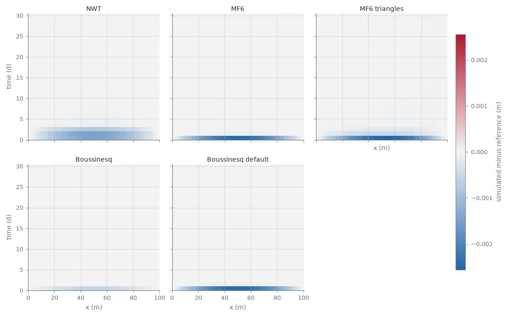
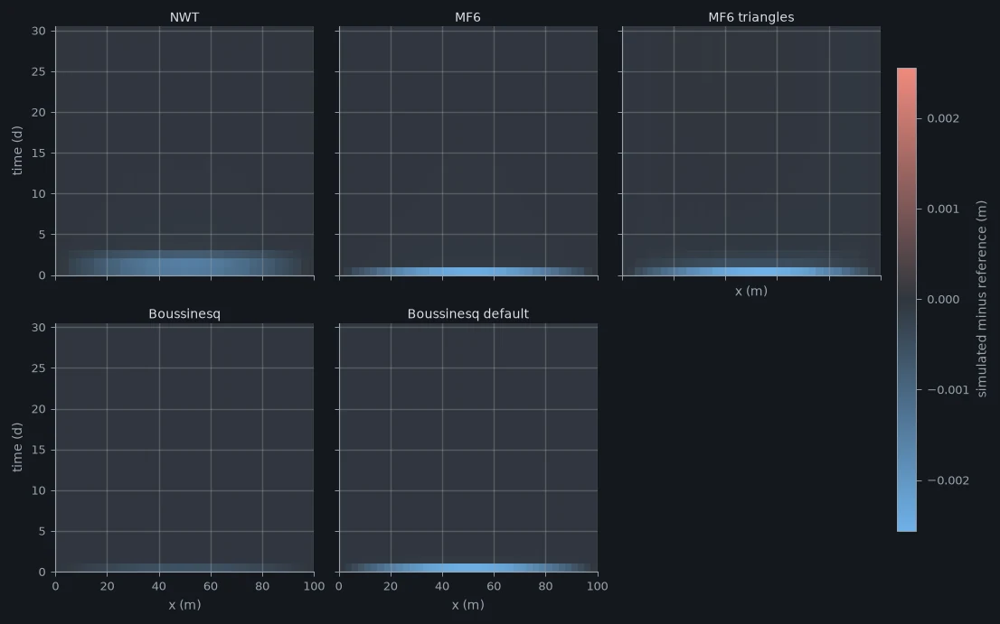
Why these thresholds
- Thresholds of
modflow_nwt,modflow6,petsc_ts_vi_obstacle,petsc_vi_obstacle: Twice the error measured on the 50-column grid, MODFLOW-NWT and MODFLOW 6 alike: space-time RMSE 6.1e-3 m, max error 3.3e-2 m, final RMSE 2.8e-3 m. Backward Euler is first order in time: on the boundary step, 1, 2, 4 and 8 sub-steps per period give a space-time RMSE of 1.4e-3, 7.1e-4, 3.4e-4 and 1.6e-4 m. The heads are posed at the centres of the boundary cells. The row spread bound is 0.1 times the MODFLOW 6 head closure (1e-4 m). - Thresholds of
boussinesq: Twice the error measured with PETSc on 50 x 5 square cells of 2 m: space-time RMSE 0.0016 m, max error 0.0082 m, final RMSE 0.00071 m. PETSc takes 4 backward-Euler steps a period (TS VI); the error is first order in time, so it sits below the one-step MODFLOW band of this case. The heads sit dx/3 inside the faces. The strip is uniform across rows, so a row spread is solver noise: PETSc reads below 1e-14 m; the bound is 1e-8 m. - Thresholds of
boussinesq_local: The band of tolerances.toml, shared with MODFLOW. On this 500-cell strip the default 'auto' engine runs scipy_sparse, one backward-Euler step a period as MODFLOW does, and on 50 x 5 square cells of 2 m it reads space-time RMSE 0.0061 m, max error 0.033 m, final RMSE 0.0027 m, against 6.1e-3, 3.3e-2 and 2.8e-3 m for MODFLOW. The strip is uniform across rows, so a row spread is solver noise: the sparse engine reads 3e-8 m (its head closure is 1e-9 m); the bound is 1e-7 m. - Thresholds of
modflow6_irregular_tri: Twice the error measured on the triangle strip: space-time RMSE 6.1e-3 m, max error 3.3e-2 m, final RMSE 2.9e-3 m. The row spread is zero by construction: the loader collapses the strip to one profile. Backward Euler is first order in time: on the boundary step, 1, 2, 4 and 8 sub-steps per period give a space-time RMSE of 1.4e-3, 7.1e-4, 3.4e-4 and 1.6e-4 m. The heads are posed at the centres of the boundary cells. - Thresholds of
modflow_nwt,modflow6: Twice the error measured on the 50-column grid, MODFLOW-NWT and MODFLOW 6 alike: space-time RMSE 1.4e-3 m, max error 1.2e-2 m, final RMSE 9.0e-5 m. Backward Euler is first order in time: on the boundary step, 1, 2, 4 and 8 sub-steps per period give a space-time RMSE of 1.4e-3, 7.1e-4, 3.4e-4 and 1.6e-4 m. The heads are posed at the centres of the boundary cells. The row spread bound is 0.1 times the MODFLOW 6 head closure (1e-4 m). - Thresholds of
boussinesq: Twice the error measured with PETSc on 40 x 4 square cells of 2.5 m: space-time RMSE 0.00034 m, max error 0.0032 m, final RMSE 7.3e-05 m. PETSc takes 4 backward-Euler steps a period (TS VI); the error is first order in time, so it sits below the one-step MODFLOW band of this case. The heads sit dx/3 inside the faces. Before 2026-10-09 the 40-column strips had 3 rows, cells of 2.5 x 3.3 m: on right triangles of unequal sides the two-point flux of the solver is not consistent, and the recharge step ended 1.1e-2 m off. The strip is uniform across rows, so a row spread is solver noise: PETSc reads below 1e-14 m; the bound is 1e-8 m. - Thresholds of
boussinesq_local: The band of tolerances.toml, shared with MODFLOW. The default local engine takes one backward-Euler step a period, as MODFLOW does, and on 40 x 4 square cells of 2.5 m it reads space-time RMSE 0.0014 m, max error 0.012 m, final RMSE 9.9e-05 m, against 1.4e-3, 1.2e-2 and 9.0e-5 m for MODFLOW. The strip is uniform across rows, so a row spread is solver noise: the local engine reads below 1e-8 m (its head closure is 1e-9 m); the bound is 1e-7 m. - Thresholds of
modflow6_irregular_tri: Twice the error measured on the triangle strip: space-time RMSE 1.4e-3 m, max error 1.2e-2 m, final RMSE 1.5e-4 m. The row spread is zero by construction: the loader collapses the strip to one profile. Backward Euler is first order in time: on the boundary step, 1, 2, 4 and 8 sub-steps per period give a space-time RMSE of 1.4e-3, 7.1e-4, 3.4e-4 and 1.6e-4 m. The heads are posed at the centres of the boundary cells. - Thresholds of
petsc_ts_vi_obstacle: Twice the error measured with PETSc on 40 x 4 square cells of 2.5 m: space-time RMSE 0.00034 m, max error 0.0032 m, final RMSE 7.3e-05 m. PETSc takes 4 backward-Euler steps a period (TS VI); the error is first order in time, so it sits below the one-step MODFLOW band of this case. The heads sit dx/3 inside the faces. Before 2026-10-09 the 40-column strips had 3 rows, cells of 2.5 x 3.3 m: on right triangles of unequal sides the two-point flux of the solver is not consistent, and the recharge step ended 1.1e-2 m off. The strip is uniform across rows, so a row spread is solver noise: PETSc reads below 1e-14 m; the bound is 1e-8 m. - Thresholds of
petsc_vi_obstacle: Twice the error measured with PETSc on 40 x 4 square cells of 2.5 m: space-time RMSE 0.00034 m, max error 0.0032 m, final RMSE 7.3e-05 m. PETSc takes 4 backward-Euler steps a period (TS VI); the error is first order in time, so it sits below the one-step MODFLOW band of this case. The heads sit dx/3 inside the faces. Before 2026-10-09 the 40-column strips had 3 rows, cells of 2.5 x 3.3 m: on right triangles of unequal sides the two-point flux of the solver is not consistent, and the recharge step ended 1.1e-2 m off. The strip is uniform across rows, so a row spread is solver noise: PETSc reads below 1e-14 m; the bound is 1e-8 m. - Thresholds of
modflow_nwt,modflow6,petsc_ts_vi_obstacle,petsc_vi_obstacle: Twice the error measured on the 50-column grid, MODFLOW-NWT and MODFLOW 6 alike: space-time RMSE 5.9e-3 m, max error 1.4e-2 m, final RMSE 1.7e-3 m. Backward Euler is first order in time: on the boundary step, 1, 2, 4 and 8 sub-steps per period give a space-time RMSE of 1.4e-3, 7.1e-4, 3.4e-4 and 1.6e-4 m. The heads are posed at the centres of the boundary cells. The row spread bound is 0.1 times the MODFLOW 6 head closure (1e-4 m). The space-time RMSE keeps its previous bound of 0.01 m, 1.7 times the measurement. - Thresholds of
boussinesq: Twice the error measured with PETSc on 50 x 5 square cells of 2 m: space-time RMSE 0.0018 m, max error 0.0042 m, final RMSE 0.00025 m. PETSc takes 4 backward-Euler steps a period (TS VI); the error is first order in time, so it sits below the one-step MODFLOW band of this case. The heads sit dx/3 inside the faces. The strip is uniform across rows, so a row spread is solver noise: PETSc reads below 1e-14 m; the bound is 1e-8 m. - Thresholds of
boussinesq_local: The band of tolerances.toml, shared with MODFLOW. On this 500-cell strip the default 'auto' engine runs scipy_sparse, one backward-Euler step a period as MODFLOW does, and on 50 x 5 square cells of 2 m it reads space-time RMSE 0.0059 m, max error 0.014 m, final RMSE 0.0018 m, against 5.9e-3, 1.4e-2 and 1.7e-3 m for MODFLOW. The strip is uniform across rows, so a row spread is solver noise: the sparse engine reads below 1e-8 m (its head closure is 1e-9 m); the bound is 1e-7 m. - Thresholds of
modflow6_irregular_tri: Twice the error measured on the triangle strip: space-time RMSE 5.9e-3 m, max error 1.3e-2 m, final RMSE 1.8e-3 m. The row spread is zero by construction: the loader collapses the strip to one profile. Backward Euler is first order in time: on the boundary step, 1, 2, 4 and 8 sub-steps per period give a space-time RMSE of 1.4e-3, 7.1e-4, 3.4e-4 and 1.6e-4 m. The heads are posed at the centres of the boundary cells. - Thresholds of
modflow_nwt,modflow6: Twice the error measured on the 50-column grid, MODFLOW-NWT and MODFLOW 6 alike: space-time RMSE 2.2e-3 m, max error 1.0e-2 m, final RMSE 7.5e-4 m. Backward Euler is first order in time: on the boundary step, 1, 2, 4 and 8 sub-steps per period give a space-time RMSE of 1.4e-3, 7.1e-4, 3.4e-4 and 1.6e-4 m. The heads are posed at the centres of the boundary cells. The final profile keeps the error of the linearized reference, which holds the transmissivity at its initial value: about 7e-4 m under the 0.14 m recharge mound, whatever the step. The row spread bound is 0.1 times the MODFLOW 6 head closure (1e-4 m). The space-time max error keeps its previous bound of 0.015 m, 1.5 times the measurement. - Thresholds of
boussinesq: Twice the error measured with PETSc on 40 x 4 square cells of 2.5 m: space-time RMSE 0.00085 m, max error 0.0029 m, final RMSE 0.00063 m. PETSc takes 4 backward-Euler steps a period (TS VI); the error is first order in time, so it sits below the one-step MODFLOW band of this case. The heads sit dx/3 inside the faces. Before 2026-10-09 the 40-column strips had 3 rows, cells of 2.5 x 3.3 m: on right triangles of unequal sides the two-point flux of the solver is not consistent, and the recharge step ended 1.1e-2 m off. The strip is uniform across rows, so a row spread is solver noise: PETSc reads below 1e-14 m; the bound is 1e-8 m. - Thresholds of
boussinesq_local: The band of tolerances.toml, shared with MODFLOW. The default local engine takes one backward-Euler step a period, as MODFLOW does, and on 40 x 4 square cells of 2.5 m it reads space-time RMSE 0.0022 m, max error 0.01 m, final RMSE 0.00081 m, against 2.2e-3, 1.0e-2 and 7.5e-4 m for MODFLOW. The strip is uniform across rows, so a row spread is solver noise: the local engine reads below 1e-8 m (its head closure is 1e-9 m); the bound is 1e-7 m. - Thresholds of
modflow6_irregular_tri: Twice the error measured on the triangle strip: space-time RMSE 2.2e-3 m, max error 9.9e-3 m, final RMSE 6.3e-4 m. The row spread is zero by construction: the loader collapses the strip to one profile. Backward Euler is first order in time: on the boundary step, 1, 2, 4 and 8 sub-steps per period give a space-time RMSE of 1.4e-3, 7.1e-4, 3.4e-4 and 1.6e-4 m. The heads are posed at the centres of the boundary cells. - Thresholds of
petsc_ts_vi_obstacle: Twice the error measured with PETSc on 40 x 4 square cells of 2.5 m: space-time RMSE 0.00085 m, max error 0.0029 m, final RMSE 0.00063 m. PETSc takes 4 backward-Euler steps a period (TS VI); the error is first order in time, so it sits below the one-step MODFLOW band of this case. The heads sit dx/3 inside the faces. Before 2026-10-09 the 40-column strips had 3 rows, cells of 2.5 x 3.3 m: on right triangles of unequal sides the two-point flux of the solver is not consistent, and the recharge step ended 1.1e-2 m off. The strip is uniform across rows, so a row spread is solver noise: PETSc reads below 1e-14 m; the bound is 1e-8 m. - Thresholds of
petsc_vi_obstacle: Twice the error measured with PETSc on 40 x 4 square cells of 2.5 m: space-time RMSE 0.00085 m, max error 0.0029 m, final RMSE 0.00063 m. PETSc takes 4 backward-Euler steps a period (TS VI); the error is first order in time, so it sits below the one-step MODFLOW band of this case. The heads sit dx/3 inside the faces. Before 2026-10-09 the 40-column strips had 3 rows, cells of 2.5 x 3.3 m: on right triangles of unequal sides the two-point flux of the solver is not consistent, and the recharge step ended 1.1e-2 m off. The strip is uniform across rows, so a row spread is solver noise: PETSc reads below 1e-14 m; the bound is 1e-8 m. - Thresholds of
modflow_nwt,modflow6,petsc_ts_vi_obstacle,petsc_vi_obstacle: Twice the error measured on the 50-column grid, MODFLOW-NWT and MODFLOW 6 alike: space-time RMSE 2.3e-4 m, max error 2.5e-3 m, final RMSE 1.0e-5 m. Backward Euler is first order in time: on the boundary step, 1, 2, 4 and 8 sub-steps per period give a space-time RMSE of 1.4e-3, 7.1e-4, 3.4e-4 and 1.6e-4 m. The heads are posed at the centres of the boundary cells. The row spread bound is 0.1 times the MODFLOW 6 head closure (1e-4 m). - Thresholds of
boussinesq: Twice the error measured with PETSc on 40 x 4 square cells of 2.5 m: space-time RMSE 5.1e-05 m, max error 0.00056 m, final RMSE 2.9e-06 m. PETSc takes 4 backward-Euler steps a period (TS VI); the error is first order in time, so it sits below the one-step MODFLOW band of this case. The heads sit dx/3 inside the faces. Before 2026-10-09 the 40-column strips had 3 rows, cells of 2.5 x 3.3 m: on right triangles of unequal sides the two-point flux of the solver is not consistent, and the recharge step ended 1.1e-2 m off. The strip is uniform across rows, so a row spread is solver noise: PETSc reads below 1e-14 m; the bound is 1e-8 m. - Thresholds of
boussinesq_local: Twice the error measured with the default local engine on 40 x 4 square cells of 2.5 m, split into triangles: space-time RMSE 2.3e-4 m, max error 2.5e-3 m, final RMSE 1.6e-6 m, final max error 2.0e-6 m. It takes one backward-Euler step a period, as MODFLOW does, and the space-time error is that step: it equals MODFLOW's, and PETSc with 4 steps a period reads 5.1e-5 m. The case sets the Newton closure to 1e-12 m3/s (config_boussinesq_local.toml): with the default 1e-9 m3/s per cell, absolute, Newton stopped 1.7e-5 m off the steady 1.5 cm mound, worse than MODFLOW 6 (1.0e-5 m, its head closure). The strip is uniform across rows, so a row spread is solver noise: the local engine reads below 1e-11 m; the bound is 1e-7 m. - Thresholds of
modflow6_irregular_tri: Twice the error measured on the triangle strip: space-time RMSE 2.5e-4 m, max error 2.6e-3 m, final RMSE 1.9e-5 m. The row spread is zero by construction: the loader collapses the strip to one profile. Backward Euler is first order in time: on the boundary step, 1, 2, 4 and 8 sub-steps per period give a space-time RMSE of 1.4e-3, 7.1e-4, 3.4e-4 and 1.6e-4 m. The heads are posed at the centres of the boundary cells.
Schedule. modflow_nwt, modflow6, modflow6_irregular_tri, boussinesq_local: runs in Nightly / validation no PETSc, Weekly / Cross Platform. boussinesq, petsc_ts_vi_obstacle, petsc_vi_obstacle: runs in Nightly / validation PETSc. Jobs.
What the test does, all thresholds, the file
This driver folds five sibling 1D linearized-unconfined transient benchmarks into one parametrized suite. Each scenario keeps its own forcing (via its own launcher comparison function) and its own tolerances (read from the per-case tolerance TOML through the comparison payload). The references pose the side heads where the model holds them, at the centres of the boundary cells.
Case lu_boundary_piecewise_1d: Linearized Unconfined Boundary Piecewise 1D
Run it alone: python -m validation_cases.analytical.transient.linearized_unconfined_boundary_piecewise_1d.run_case
Case lu_boundary_step_1d: Linearized Unconfined 1D Boundary Step
Run it alone: python -m validation_cases.analytical.transient.linearized_unconfined_boundary_step_1d.run_case
Case lu_recharge_periodic_1d: Linearized Unconfined 1D Periodic Recharge
Run it alone: python -m validation_cases.analytical.transient.linearized_unconfined_recharge_periodic_1d.run_case
Case lu_recharge_step_1d: Linearized Unconfined 1D Recharge Step
Run it alone: python -m validation_cases.analytical.transient.linearized_unconfined_recharge_step_1d.run_case
Case lu_recharge_step_deep_1d: Linearized Unconfined 1D Recharge Step (Deep Aquifer)
Run it alone: python -m validation_cases.analytical.transient.linearized_unconfined_recharge_step_deep_1d.run_case
Test functions
- Linearized unconfined transient 1d matches reference profiles.
- Linearized unconfined transient 1d default engine matches reference profiles.
- Linearized unconfined transient 1d petsc obstacle matches reference profiles.
File tests/validation/analytical/transient/test_linearized_unconfined_transient_1d.py. Markers: analytical, petsc, slow, transient, validation.
MODFLOW 6 PRT particle paths in a uniform velocity field#
pass modflow6
Compared with: the straight particle path x(t) = x0 + v t in a uniform flow, v = q / porosity.
Last measurement
| Variant | Metric | Measured | Threshold | Share used | Share of the signal |
|---|---|---|---|---|---|
| - pass | Largest relative position error along the track | 1.05e-15 | < 0.01 | 0% |
Measured on 2026-10-13, commit 91d97cabd, version 2.0.0a5, the nightly CI job (job log).
Schedule. This file: runs in Nightly / validation no PETSc, Weekly / Cross Platform. Jobs.
What the test does, all thresholds, the file
For a constant-gradient (uniform) flow field, Pollock's method is exact, so a particle moves as x(t) = x0 + v*t with v = q / porosity (q is the specific discharge). The pore velocity v is read back from the model's DATA-SPDIS instead of being hard-coded, then the track positions are checked against the analytical streamline.
Tolerance rationale - tests/TOLERANCES.md row 34: max relative position error < 1 % (Pollock is exact for uniform velocity; the allowance covers cell-crossing arithmetic).
Thresholds from tests/TOLERANCES.md
- Row 34: MF6 PRT uniform-velocity streamline, max relative position error
|x-x_exp|/|x_exp-x0|:< 1 %(Pollock's method is exact for a uniform velocity field; small allowance for cell-crossing arithmetic)
Test functions
- Prt uniform velocity streamline.
File tests/validation/analytical/transient/test_prt_uniform_velocity.py. Markers: allow_subprocess, analytical, mf6, slow, transient, validation.
Stream depletion of a well pumping beside a stream held at a fixed head#
pass end to endmodflow_nwtmodflow6modflow6_irregular_trimodflow6_voronoiboussinesq_local
Compared with: Glover and Balmer (1954) stream depletion and the image-well Theis drawdown (Theis 1941), with T = K b and S = Sy, read at the stream, well and monitor cell centres.
a is the distance from the well to the stream, r1 the distance to the well
and r2 the distance to its image across the stream.
Last measurement
| Variant | Metric | Measured | Threshold | Share used | Share of the signal |
|---|---|---|---|---|---|
| Stream depletion glover balmer 2d boussinesq pass | Stream depletion max abs error | 0.0136 | < 0.028 | 48% | |
| Stream depletion final error | 0.000552 | < 0.0011 | 50% | ||
| Drawdown space-time RMSE | 0.0028 m | < 0.0056 m | 50% | 0.9% / 1.7% | |
| Drawdown space-time max abs error | 0.00648 m | < 0.013 m | 50% | 2.0% / 4.0% | |
| Drawdown final-time RMSE | 0.00311 m | < 0.0063 m | 49% | 1.0% / 2.0% | |
| Drawdown final-time max abs error | 0.00648 m | < 0.013 m | 50% | 2.0% / 4.0% | |
| Well drawdown over saturated thickness | 0.0355 | < 0.05 | 71% | ||
| Stream depletion glover balmer 2d default engine [boussinesq_local] pass | Stream depletion max abs error | 0.0136 | < 0.028 | 48% | |
| Stream depletion final error | 0.000552 | < 0.0011 | 50% | ||
| Drawdown space-time RMSE | 0.0028 m | < 0.0056 m | 50% | 0.9% / 1.7% | |
| Drawdown space-time max abs error | 0.00648 m | < 0.013 m | 50% | 2.0% / 4.0% | |
| Drawdown final-time RMSE | 0.00311 m | < 0.0063 m | 49% | 1.0% / 2.0% | |
| Drawdown final-time max abs error | 0.00648 m | < 0.013 m | 50% | 2.0% / 4.0% | |
| Well drawdown over saturated thickness | 0.0355 | < 0.05 | 71% | ||
| Stream depletion glover balmer 2d modflow [modflow_nwt] pass | Stream depletion max abs error | 0.0142 | < 0.029 | 49% | |
| Stream depletion final error | 0.000345 | < 0.0007 | 49% | ||
| Drawdown space-time RMSE | 0.00155 m | < 0.0031 m | 50% | 0.5% / 1.0% | |
| Drawdown space-time max abs error | 0.00639 m | < 0.013 m | 49% | 2.1% / 4.2% | |
| Drawdown final-time RMSE | 0.00167 m | < 0.0034 m | 49% | 0.5% / 1.1% | |
| Drawdown final-time max abs error | 0.00355 m | < 0.0071 m | 50% | 1.2% / 2.3% | |
| Well drawdown over saturated thickness | 0.0281 | < 0.05 | 56% | ||
| Stream depletion glover balmer 2d modflow [modflow6] pass | Stream depletion max abs error | 0.0142 | < 0.029 | 49% | |
| Stream depletion final error | 0.000345 | < 0.0007 | 49% | ||
| Drawdown space-time RMSE | 0.00155 m | < 0.0031 m | 50% | 0.5% / 1.0% | |
| Drawdown space-time max abs error | 0.00639 m | < 0.013 m | 49% | 2.1% / 4.2% | |
| Drawdown final-time RMSE | 0.00167 m | < 0.0034 m | 49% | 0.5% / 1.1% | |
| Drawdown final-time max abs error | 0.00355 m | < 0.0071 m | 50% | 1.2% / 2.3% | |
| Well drawdown over saturated thickness | 0.0281 | < 0.05 | 56% | ||
| Stream depletion glover balmer 2d modflow [modflow6_irregular_tri] pass | Stream depletion max abs error | 0.0137 | < 0.028 | 49% | |
| Stream depletion final error | 0.000283 | < 0.0006 | 47% | ||
| Drawdown space-time RMSE | 0.00252 m | < 0.0051 m | 49% | 0.8% / 1.6% | |
| Drawdown space-time max abs error | 0.00586 m | < 0.012 m | 49% | 1.8% / 3.7% | |
| Drawdown final-time RMSE | 0.00271 m | < 0.0055 m | 49% | 0.8% / 1.7% | |
| Drawdown final-time max abs error | 0.00539 m | < 0.011 m | 49% | 1.7% / 3.4% | |
| Well drawdown over saturated thickness | 0.0353 | < 0.05 | 71% | ||
| Stream depletion glover balmer 2d modflow [modflow6_voronoi] pass | Stream depletion max abs error | 0.0124 | < 0.025 | 50% | |
| Stream depletion final error | 0.000495 | < 0.001 | 50% | ||
| Drawdown space-time RMSE | 0.00119 m | < 0.0024 m | 50% | 0.4% / 0.8% | |
| Drawdown space-time max abs error | 0.00802 m | < 0.016 m | 50% | 2.6% / 5.2% | |
| Drawdown final-time RMSE | 0.000496 m | < 0.001 m | 50% | 0.2% / 0.3% | |
| Drawdown final-time max abs error | 0.000969 m | < 0.002 m | 48% | 0.3% / 0.6% | |
| Well drawdown over saturated thickness | 0.0357 | < 0.05 | 71% |
Measured on 2026-10-12, commit 427d8bb47 with uncommitted changes, version 2.0.0a4, a local run; 2026-10-13, commit 91d97cabd, version 2.0.0a5, the nightly CI job (job log). The last column gives the measured value and the threshold as shares of the largest drawdown of the reference, 0.308 to 0.323 m.
referenceNWTMF6
reference of each runNWTMF6MF6 trianglesMF6 VoronoiBoussinesq defaultrun
referenceMF6 trianglesBoussinesq defaultrun
referenceMF6 Voronoi
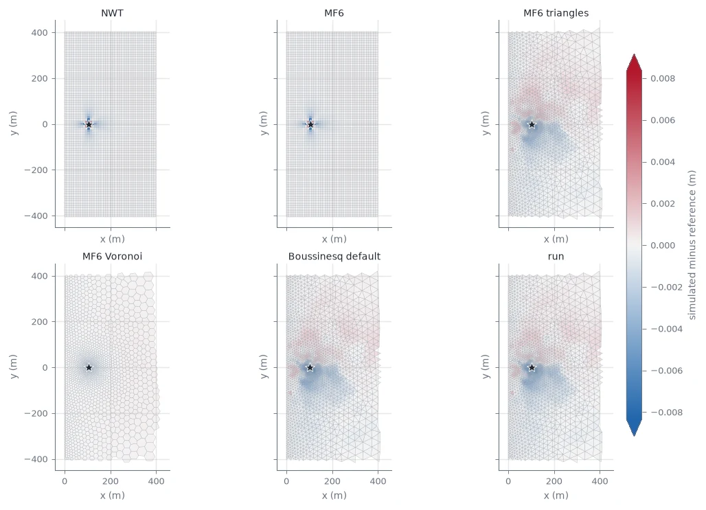
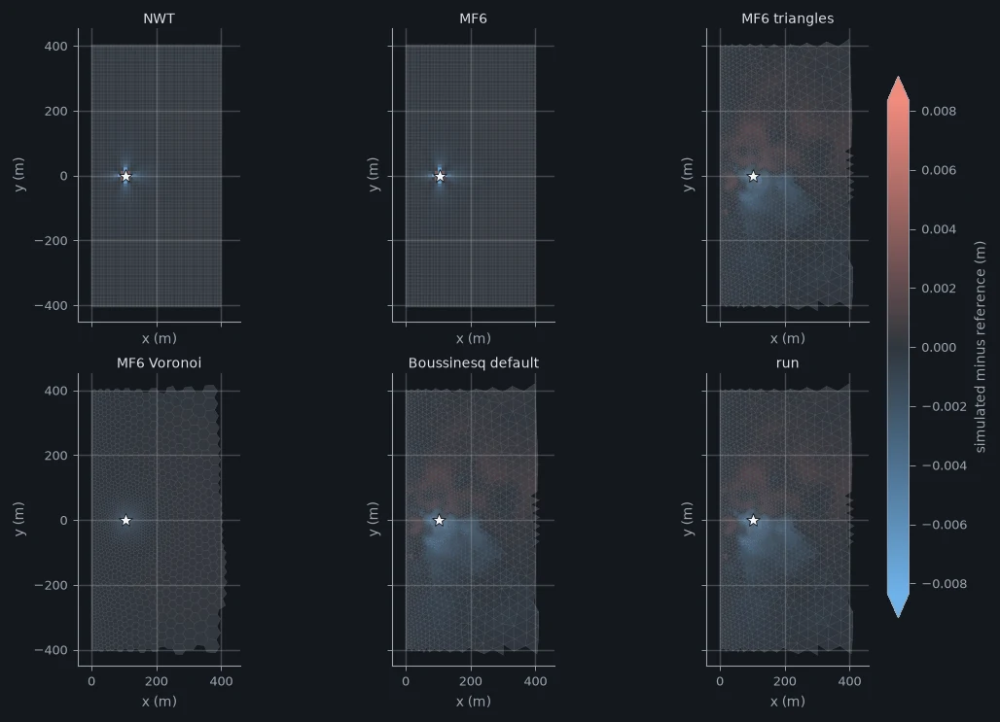
Why these thresholds
- Thresholds of
modflow_nwt,modflow6: Twice the error measured, MODFLOW-NWT and MODFLOW 6 alike to 1e-5: stream depletion 0.0142 at most, on the first half day, and 0.00034 at day 20; drawdown space-time RMSE 1.6e-3 m, max 6.4e-3 m, final RMSE 1.7e-3 m, final max 3.6e-3 m. The run stores the mean depletion of each period, over its 4 backward-Euler steps, and the reference is the mean of the closed form over the same period. The depletion error is the backward-Euler step: on MODFLOW 6 it falls to 0.0076, 0.0042 and 0.0024 with 8, 16 and 32 steps a period, and moves by 1e-4 on a 5 m grid. Until 2026-10-10 the run stored the depletion of the last step and the reference was read at the period end: 0.0083 at most. The drawdown error is the grid and the unconfined flow: on a 5 m grid the RMSE halves, and at a tenth of the pumping rate the final error near the well falls from 3.6e-3 to 2.2e-4 m, the s^2 / (2 b) of the water table. The closed sides do not count: on a domain 1.5 times wider and longer the results move by 6e-6. The well-cell drawdown stays under 5 % of the saturated thickness, where the linearized theory holds: 2.8 % measured. - Thresholds of
boussinesq_local: Twice the error measured with the default 'auto' engine, scipy_sparse on these 5783 triangles, 4 backward-Euler steps a period: stream depletion 0.0136 at most and 0.00055 at day 20, both means over the period; drawdown space-time RMSE 2.8e-3 m, max 6.5e-3 m, final RMSE 3.1e-3 m, final max 6.5e-3 m, next to the well. PETSc on the same triangles reads the same to 1e-6. Until 2026-10-10 the surface closure sent 0.4 % of the pumping out of the well cell, 11 m under the top, and the final depletion read 0.0021. - Thresholds of
modflow6_irregular_tri: Twice the error measured on the triangles of the refined mesh (5783 cells, two-point flux: XT3D stays off, the 95th percentile of the non-orthogonality is 9 degrees), with the stream at the centroids of the triangles on the face, 2.9 m inside it, and the well at the centroid of the triangle that takes it: stream depletion 0.0137 at most and 0.00028 at day 20, both means over the period, the backward-Euler step as on the grid; drawdown space-time RMSE 2.5e-3 m, max 5.9e-3 m, final RMSE 2.7e-3 m, final max 5.4e-3 m, next to the well, 3 m off the mesh node it sits on. The well-cell drawdown is 3.5 % of the saturated thickness. - Thresholds of
modflow6_voronoi: Twice the error measured on the Voronoi dual of the refined mesh (3011 cells centred on the nodes), with the stream on the face, where the dual cells of the face nodes are centred, and the well on its node: stream depletion 0.0124 at most and 0.0005 at day 20, both means over the period, the backward-Euler step as on the grid; drawdown space-time RMSE 1.2e-3 m, max 8.0e-3 m at day 1 next to the well, final RMSE 5.0e-4 m, final max 9.7e-4 m. The well-cell drawdown is 3.6 % of the saturated thickness.
Schedule. modflow_nwt, modflow6, modflow6_voronoi: runs in Nightly / validation no PETSc, Weekly / Cross Platform, Tests / fast marker. modflow6_irregular_tri, boussinesq_local: runs in Nightly / validation no PETSc, Weekly / Cross Platform. This file: runs in Nightly / validation PETSc. Jobs.
What the test does, all thresholds, the file
| Threshold | modflow_nwt | modflow6 | modflow6_irregular_tri | modflow6_voronoi | boussinesq_local |
|---|---|---|---|---|---|
| Stream depletion max abs error < | 0.029 | 0.029 | 0.028 | 0.025 | 0.028 |
| Stream depletion final error < | 0.0007 | 0.0007 | 0.0006 | 0.001 | 0.0011 |
| Drawdown space-time RMSE (m) < | 0.0031 | 0.0031 | 0.0051 | 0.0024 | 0.0056 |
| Drawdown space-time max abs error (m) < | 0.013 | 0.013 | 0.012 | 0.016 | 0.013 |
| Drawdown final-time RMSE (m) < | 0.0034 | 0.0034 | 0.0055 | 0.001 | 0.0063 |
| Drawdown final-time max abs error (m) < | 0.0071 | 0.0071 | 0.011 | 0.002 | 0.013 |
| Well drawdown over saturated thickness < | 0.05 | 0.05 | 0.05 | 0.05 | 0.05 |
From validation_cases/analytical/transient/stream_depletion_glover_balmer_2d/: modflow_nwt reads tolerances.toml, modflow6 reads tolerances.toml, modflow6_irregular_tri reads tolerances_modflow6_irregular_tri.toml, modflow6_voronoi reads tolerances_modflow6_voronoi.toml, boussinesq_local reads tolerances_boussinesq_local.toml.
Run it alone: python -m validation_cases.analytical.transient.stream_depletion_glover_balmer_2d.run_case
Test functions
- Stream depletion glover balmer 2d modflow.
- Stream depletion glover balmer 2d boussinesq.
- Stream depletion glover balmer 2d default engine.
File tests/validation/analytical/transient/test_stream_depletion_glover_balmer_2d.py. Markers: analytical, petsc, slow, transient, validation.
Time steps inside a stress period against a closed-form step response#
pass
Compared with: the response to a head step at a Dirichlet boundary, h(x, t) = dh erfc(x / (2 sqrt(D t))) with D = K b / S; the fourth test compares one step per period with a run of 30 steps.
Last measurement
| Variant | Metric | Measured | Threshold | Share used | Share of the signal |
|---|---|---|---|---|---|
| A geometric partition cannot beat equal steps pass | RMSE difference between TSMULT 2 and 1/2 | 2.19e-08 m | < 1e-06 m | 2% | |
| Adaptive stepping preserves the declared substeps pass | Relative RMSE difference, ATS on against off | 0 | <= 1e-12 | 0% | |
| One step per period moves the discharge a calibration scores pass | Largest monthly discharge drift of 1 step against 30 | 0.291 | > 0.1 | 34% | |
| Substeps are what buys transient accuracy pass | RMSE with 1 step over RMSE with 10 steps | 13.6 | > 10 | 73% | |
| The column stays semi infinite over the period pass | no metric recorded; the asserts of the test decide | ||||
Measured on 2026-10-13, commit 91d97cabd, version 2.0.0a5, the nightly CI job (job log).
Schedule. This file: runs in Nightly / validation no PETSc, Weekly / Cross Platform. Jobs.
What the test does, all thresholds, the file
A stress period holds a constant forcing, and HydroModPy stores only its end state. Against the closed form of a step at a Dirichlet boundary, h(x, t) = dh * erfc(x / (2 sqrt(D t))) with D = K b / S, this case pins three statements that are easy to get backwards:
1. simulation.time.substeps_per_period is the knob. The default of one backward-Euler step over the whole period carries an order of magnitude more error than ten. 2. A geometric partition (MODFLOW TSMULT) cannot help. Within a period the forcing is constant, so the backward-Euler end state is a commuting product over the steps: it depends on the multiset of step sizes and not on their order, and equal steps minimise its error. A growth ratio and its reciprocal give the same error, both worse than equal steps. This is why HydroModPy declares TSMULT = 1 and exposes no growth field. 3. Adaptive time stepping must not undo the request. MF6 ignores the TDIS NSTP of a period ATS covers, so the ATS record has to carry the declared step as both its starting and its maximum value.
A fourth test leaves the closed form for HydroModPy's own configuration, a seasonal recharge on a hillslope drained by surface DRN cells and a river. There the default of one step per period is not a small bias: it moves the monthly discharge, the quantity a calibration scores against, by tens of percent. The default is left at 1 because the right count is a property of the model (tau = L**2 S / (K b) against the period length) and the cost is linear in it, but a run that leaves it there is making a choice, not accepting a neutral value.
Tolerances: tests/TOLERANCES.md rows 65-68.
Thresholds from tests/TOLERANCES.md
- Row 65: Stress-period sub-stepping (MF6), RMSE ratio between
nstp=1andnstp=10:> 10x(Derived. Backward Euler is first order in time, so halving the step halves the error; ten steps should gain about an order of magnitude on a smooth relaxation, and the assertion is the weakest form of that (a strict factor 10) rather than a fitted ratio) - Row 66: Stress-period sub-stepping (MF6), RMSE difference between TSMULT
rand1/r:1e-6 m(Derived. Within a stress period the forcing is constant, so the backward-Euler end state is a product of commuting operators over the steps: it depends on the multiset of step sizes and not on their order, and a ratio and its reciprocal only reverse that order. The identity is exact in exact arithmetic, so the band is the iterative closure, declared at DVCLOSE = 1e-3 m by COMPLEXITY SIMPLE) - Row 67: Adaptive time stepping (MF6), RMSE relative difference, ATS on against ATS off:
1e-12(Machine epsilon. Nothing fails on this column, so ATS never cuts, and withdt0 = dtmax = perlen / nstpit replays the declared partition step for step. The two runs are the same arithmetic in the same order) - Row 68: One step per stress period (MF6), monthly discharge drift against a refined run:
0.10(Derived. Backward Euler is first order, so the drift scales with the step; on the hillslope this case builds it is measured at 28 % with one step per month against thirty, and it stays above 10 % across the whole plausible bedrock range (K from 1e-7 to 1e-4 m/s gave 4 % to 28 %). The floor is set at 10 %, well inside the measured band, because the row exists to state that the drift is large and not to pin its exact value)
Test functions
- The column stays semi infinite over the period.
- Substeps are what buys transient accuracy.
- A geometric partition cannot beat equal steps.
- Adaptive stepping preserves the declared substeps.
- One step per period moves the discharge a calibration scores.
File tests/validation/analytical/transient/test_stress_period_substepping.py. Markers: analytical, slow, transient, validation.
MODFLOW 6 alone against a closed form#
Hantush-Jacob (1955) leaky-aquifer benchmark against MODFLOW 6#
pass solver sanitymodflow6
Compared with: the Hantush-Jacob (1955) drawdown of a leaky confined aquifer, s = Q / (4 pi T) W(u, r / B).
Last measurement
| Variant | Metric | Measured | Threshold | Share used | Share of the signal |
|---|---|---|---|---|---|
| - pass | Nash-Sutcliffe efficiency of the drawdown, 9 probes | 1 | > 0.99 | 1% | |
| Largest relative drawdown error at a probe | 0.0081 | < 0.02 | 40% |
Measured on 2026-10-13, commit 91d97cabd, version 2.0.0a5, the nightly CI job (job log). The last column gives the measured value and the threshold as shares of the largest drawdown of the reference, 0.386 m.
Schedule. This file: runs in Nightly / validation no PETSc, Weekly / Cross Platform. Jobs.
What the test does, all thresholds, the file
A fully penetrating well pumps at constant rate Q in a confined aquifer overlain by a leaky aquitard of thickness b' and vertical conductivity K'. A source bed of constant head sits above the aquitard. Under these assumptions the analytical drawdown is the Hantush solution:
s(r, t) = Q / (4 pi T) * W(u, r / B)
with u = r^2 S / (4 T t), B = sqrt(T b' / K') the leakage factor and the Hantush well function
W(u, beta) = int_u^inf (1/y) exp(-y - beta^2 / (4 y)) dy.
The numerical reference is a three-layer MF6 IMS model:
* layer 0: source bed - all cells are CHD at the initial head, * layer 1: aquitard - thickness ``b'`` and K = ``K'``, no storage, * layer 2: main pumped aquifer - thickness ``b``, K such that ``T = K b``, specific storage such that ``S = S_s b``.
A telescoping grid concentrates resolution near the well; the outer Dirichlet ring sits well beyond the radius of influence ~sqrt(4 T t / S). Drawdown is compared at radii 10/50/100 m and times 1/3/10 d.
Tolerance rationale - tests/TOLERANCES.md row 6: NSE > 0.99 and maximum pointwise relative error below 2 %.
Scope - solver_sanity: The three-layer sandwich (source / aquitard / pumped aquifer) and the telescoping grid are built directly on the flopy SDK because the hydromodpy launcher TOML does not expose this geometry. The test therefore validates MODFLOW 6 against the Hantush analytical solution, not the hydromodpy pipeline.
Test functions
- Hantush leaky aquifer matches analytical reference.
File tests/validation/analytical/transient/test_hantush.py. Markers: analytical, mf6, slow, solver_sanity, transient, validation.
Ogata-Banks (1961) 1D advection-dispersion benchmark against MODFLOW 6 GWT#
pass solver sanitymodflow6
Compared with: the Ogata-Banks (1961) concentration profile of 1D advection and dispersion from a constant-concentration inlet.
Last measurement
| Variant | Metric | Measured | Threshold | Share used | Share of the signal |
|---|---|---|---|---|---|
| Ogata banks 1d transport matches analytical reference pass | Nash-Sutcliffe efficiency of the concentration | 1 | > 0.95 | 0% | |
| Largest relative concentration error where c > 1e-3 c0 | 0.0223 | < 0.025 | 89% | ||
| Ogata banks error shrinks under refinement pass | Refined-grid Nash-Sutcliffe efficiency | 1 | > 0.99 | 0% | |
| Refined-grid largest relative concentration error | 0.00487 | < 0.01 | 49% | ||
| Refined error over production error | 0.218 | < 0.5 | 44% |
Measured on 2026-10-13, commit 91d97cabd, version 2.0.0a5, the nightly CI job (job log).
Schedule. This file: runs in Nightly / validation no PETSc, Weekly / Cross Platform. Jobs.
What the test does, all thresholds, the file
A semi-infinite column is initially solute-free and subjected to a constant-concentration injection c0 at x = 0 under steady uniform flow of pore velocity v with longitudinal dispersion coefficient D. The analytical solution is the Ogata-Banks profile:
c(x, t) = c0 / 2 * [ erfc((x - v t) / (2 sqrt(D t)))
+ exp(v x / D) * erfc((x + v t) / (2 sqrt(D t))) ]The reference is a 1D MF6 GWF + GWT model: flow is driven by a constant injection flux on the left and a CHD sink on the right producing a uniform pore velocity v; transport is solved with a constant concentration c0 at the inlet and an open boundary at the outlet. Numerical and analytical concentrations are compared at probe points along the column at three times.
Tolerance rationale - tests/TOLERANCES.md row 7: NSE > 0.95 across all (x, t) probes with a maximum pointwise relative error below 2.5 % (measured 2.2 % at the production grid). A second test refines dt by 4 and dx by 2 and requires the error to fall below that of the production run.
Scope - solver_sanity: The coupled GWF + GWT column with inlet auxiliary concentration is built directly on the flopy SDK because hydromodpy's transport plumbing does not yet expose MF6 GWT through the launcher TOML. The test therefore validates MODFLOW 6 GWT against the Ogata-Banks analytical solution, not the hydromodpy pipeline.
Test functions
- Ogata banks 1d transport matches analytical reference.
- Ogata banks error shrinks under refinement.
File tests/validation/analytical/transient/test_ogata_banks.py. Markers: analytical, mf6, slow, solver_sanity, transient, validation.
Theis (1935) transient confined pumping benchmark against MODFLOW 6#
pass solver sanitymodflow6
Compared with: the Theis (1935) drawdown of a confined aquifer, s = Q / (4 pi T) W(u).
Last measurement
| Variant | Metric | Measured | Threshold | Share used | Share of the signal |
|---|---|---|---|---|---|
| - pass | Nash-Sutcliffe efficiency of the drawdown, 9 probes | 1 | > 0.999 | 14% | |
| Largest relative drawdown error at a probe | 0.00438 | < 0.01 | 44% |
Measured on 2026-10-13, commit 91d97cabd, version 2.0.0a5, the nightly CI job (job log). The last column gives the measured value and the threshold as shares of the largest drawdown of the reference, 0.981 m.
Schedule. This file: runs in Nightly / validation no PETSc, Weekly / Cross Platform. Jobs.
What the test does, all thresholds, the file
A fully penetrating well pumps at a constant rate Q in a homogeneous isotropic confined aquifer of transmissivity T and storativity S. The drawdown field is radial:
s(r, t) = Q / (4 pi T) * W(u), u = r^2 S / (4 T t)
with well function W(u) = E_1(u) (exponential integral). The numerical reference is an MF6 IMS-backed confined GWF model. The grid is telescoping - a fine inner patch resolves the near-well drawdown and coarse outer cells push the Dirichlet boundary far enough that its influence on the observation window stays well below the test tolerance. Drawdown is evaluated at three radial distances (10 m, 50 m, 100 m) and three times (1 d, 3 d, 10 d) and compared pointwise against s(r, t).
Tolerance rationale - tests/TOLERANCES.md rows 4/5: * NSE against analytical drawdown must exceed 0.999. * Maximum absolute error across all (r, t) pairs: 1% relative.
Scope - solver_sanity: The model is built directly on the flopy SDK (telescoping grid, central well, outer CHD ring) because the geometry sits outside what the hydromodpy launcher TOML exposes. This test therefore validates MODFLOW 6 against the Theis analytical solution, not the hydromodpy pipeline. It protects against solver-level regressions and bundled-binary drift, not against hydromodpy refactors.
Thresholds from tests/TOLERANCES.md
- Row 4: Theis confined pumping 2D, NSE vs analytical (9 probes):
> 0.999(Richardson, telescoping grid, 1 m near-well cell) - Row 5: Theis confined pumping 2D, max pointwise relative drawdown error:
< 1 %(Near-well discretization, domain radius ≫ r_i(t = 10 d))
Test functions
- Theis confined pumping matches analytical reference.
File tests/validation/analytical/transient/test_theis.py. Markers: analytical, mf6, slow, solver_sanity, transient, validation.
Published numerical references, steady state#
LAK ex-gwf-lak-p01 validation (Merritt & Konikow 2000, test 1)#
pass modflow6
Compared with: the MODFLOW 6 example ex-gwf-lak-p01 (Merritt and Konikow 2000, test 1), built by its upstream scripts.
Last measurement
| Variant | Metric | Measured | Threshold | Share used | Share of the signal |
|---|---|---|---|---|---|
| - pass | no metric recorded; the asserts of the test decide | ||||
Measured on 2026-10-13, commit 91d97cabd, version 2.0.0a5, the nightly CI job (job log).
Schedule. This file: runs in Nightly / validation no PETSc. Jobs.
What the test does, all thresholds, the file
End-to-end validation of HMP's home-grown DISV LAK build against the upstream MODFLOW 6 example. Both models share the SAME single surface-lake footprint on the same five-layer aquifer; the reference builds its LAK CONNECTIONDATA with the upstream get_lak_connections (feet/days), the HMP build with the home-grown DISV builder (meters/seconds). Two levels:
- STRUCTURAL: the generated CONNECTIONDATA reproduces the upstream 25 VERTICAL + 20 HORIZONTAL connection set (deterministic, but exercised here on the full built model);
- NUMERICAL: the final lake stage, the gross lake-aquifer flux and each build's budget closure agree within the documented
tolerances.tomlenvelope.
Run it alone: python -m validation_cases.numerical.steady.lak_merritt_konikow_p01.run_case
Test functions
- Lak p01 matches reference within tolerances.
File tests/validation/numerical/steady/test_lak_merritt_konikow_p01.py. Markers: allow_subprocess, binary, mf6, slow, steady, validation.
Patch test: a uniform flow on skewed triangles#
pass, known gap end to endmodflow6_irregular_triboussinesq_localmodflow6_irregular_tri_xt3d_off
Known gap: modflow6_irregular_tri_xt3d_off
The two-point flux is not consistent on these triangles. It takes the flux across an edge as T L (h_b - h_a) / d, d the distance between the two cell centres: that is the flux of a uniform gradient only where the centre line is normal to the edge. On this strip the angle between them has a median of 23 deg and a 95th percentile of 42 deg, so a linear head does not balance and the solution bends: 3 to 6 % of the head drop. Control run, the same files with XT3D: 6e-8 m. The error does not fall with the cell size: the Boussinesq solver, which has the same flux, reads 5.8e-3, 5.6e-3 and 5.5e-3 m RMSE on 80, 320 and 1280 triangles of the same shapes. Gmsh catchment meshes have such angles; HydroModPy switches XT3D on by itself when their 95th percentile passes 30 deg.
Known gap: boussinesq_local
The Boussinesq solver has a two-point flux between triangle centroids, T L (h_b - h_a) / d, d the distance between the centroids, with no correction for skewed cells. It is the flux of a uniform gradient only where the centroid line is normal to the edge. On this strip the angle between them has a median of 23 deg and a 95th percentile of 42 deg, so a linear head does not balance and the solution bends: 3 to 6 % of the head drop, as for MODFLOW 6 with XT3D off (5.7e-3 m). The error does not fall with the cell size: 5.8e-3, 5.6e-3 and 5.5e-3 m RMSE on 80, 320 and 1280 triangles of the same shapes, the mark of an inconsistent scheme. MODFLOW 6 with XT3D reproduces the head to 6e-8 m. A Gmsh catchment mesh has such angles; the island cases mesh near-equilateral triangles for this reason.
Compared with: the steady head of a uniform flow at every triangle centroid.
Last measurement
| Variant | Metric | Measured | Threshold | Share used | Share of the signal |
|---|---|---|---|---|---|
| modflow6_irregular_tri pass | Head RMSE | 2.28e-08 m | < 1e-05 m | 0% | |
| Head max abs error | 5.76e-08 m | < 1e-05 m | 1% | ||
| boussinesq_local pass, known gap | Head RMSE | 0.00581 m | < 0.0064 m | 91% | |
| Head max abs error | 0.0131 m | < 0.0144 m | 91% | ||
| modflow6_irregular_tri_xt3d_off pass, known gap | Head RMSE | 0.00573 m | < 0.0063 m | 91% | |
| Head max abs error | 0.0119 m | < 0.0132 m | 91% |
Measured on 2026-10-13, commit 91d97cabd, version 2.0.0a5, the nightly CI job (job log).
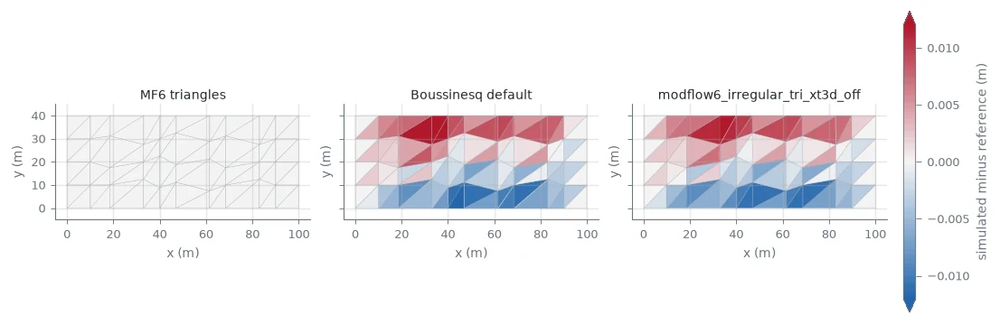
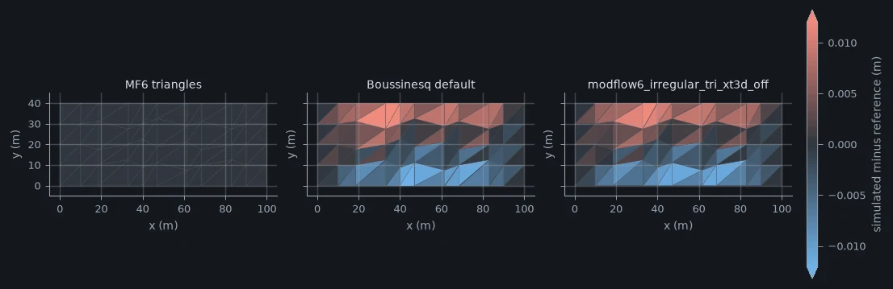
Why these thresholds
- Thresholds of
boussinesq_local: 1.1 times the measurement, a documented gap (below): RMSE 0.0058 m, max error 0.0131 m, for a head drop of 0.2 m across the strip. - Thresholds of
modflow6_irregular_tri: Derived. XT3D reconstructs the gradient from the neighbours and is exact for a uniform flow on any cell shape: what is left is the solver closure (outer dvclose 1e-9 m) and the spread of the transmissivity, 2e-4 across the strip, which moves the exact head off a straight line by 5e-6 m. The bound is twice that. Measured: RMSE 2.3e-8 m, max 5.8e-8 m. - Thresholds of
modflow6_irregular_tri_xt3d_off: 1.1 times the measurement, a documented gap (below): RMSE 0.0057 m, max error 0.0120 m, for a head drop of 0.2 m across the strip.
Schedule. modflow6_irregular_tri, boussinesq_local, modflow6_irregular_tri_xt3d_off: runs in Nightly / validation no PETSc, Tests / fast marker. Jobs.
What the test does, all thresholds, the file
A consistent finite-volume flux reproduces a linear head on any cell shape. On this strip of skewed, non-isosceles triangles MODFLOW 6 with XT3D does, to the solver closure. The two-point flux of MODFLOW 6 without XT3D and of the Boussinesq solver does not: their error is recorded against a documented gap.
| Threshold | modflow6_irregular_tri | boussinesq_local | modflow6_irregular_tri_xt3d_off |
|---|---|---|---|
| Head RMSE (m) < | 1e-05 | 0.0064 | 0.0063 |
| Head max abs error (m) < | 1e-05 | 0.0144 | 0.0132 |
From validation_cases/numerical/steady/patch_test_skewed_triangles/: modflow6_irregular_tri reads tolerances_modflow6_irregular_tri.toml, boussinesq_local reads tolerances_boussinesq_local.toml, modflow6_irregular_tri_xt3d_off reads tolerances_modflow6_irregular_tri_xt3d_off.toml.
Test functions
- Patch test skewed triangles reproduces uniform flow.
File tests/validation/numerical/steady/test_patch_test_skewed_triangles.py. Markers: fast, steady, validation.
Published numerical references, transient#
Lower-obstacle drying behavior in the PETSc complementarity runtime#
pass petsc
Compared with: the expected dry state at the substratum and the deficit rate the lower obstacle must carry; no reference solution over time.
Last measurement
| Variant | Metric | Measured | Threshold | Share used | Share of the signal |
|---|---|---|---|---|---|
| Single cell pumping activates lower obstacle pass | no metric recorded; the asserts of the test decide | ||||
| Steep sloping hillslope zero recharge dries then rewets pass | no metric recorded; the asserts of the test decide | ||||
Measured on 2026-10-12, commit 427d8bb47 with uncommitted changes, version 2.0.0a4, a local run.
Schedule. This file: runs in Nightly / validation PETSc, Solver / PETSc smoke Linux. Jobs.
What the test does, all thresholds, the file
Test functions
- Single cell pumping activates lower obstacle.
- Steep sloping hillslope zero recharge dries then rewets.
File tests/validation/numerical/transient/test_boussinesq_drying_petsc.py. Markers: petsc, transient, validation.
PETSc threshold activation on the transient hillslope overflow case#
pass petsc_complementaritypetsc_complementarity_alternatingpetsc_complementarity_strongpetsc_partition
Compared with: no reference solution: the test checks that the surface threshold activates and that the complementarity conditions hold.
Last measurement
| Variant | Metric | Measured | Threshold | Share used | Share of the signal |
|---|---|---|---|---|---|
| petsc_complementarity pass | no metric recorded; the asserts of the test decide | ||||
| petsc_complementarity_alternating pass | no metric recorded; the asserts of the test decide | ||||
| petsc_complementarity_strong pass | no metric recorded; the asserts of the test decide | ||||
| petsc_partition pass | no metric recorded; the asserts of the test decide | ||||
Measured on 2026-10-12, commit 427d8bb47 with uncommitted changes, version 2.0.0a4, a local run.
Schedule. petsc_complementarity, petsc_complementarity_alternating, petsc_complementarity_strong, petsc_partition: runs in Nightly / validation PETSc, Solver / PETSc smoke Linux. Jobs.
What the test does, all thresholds, the file
Run it alone: python -m validation_cases.numerical.transient.boussinesq_hillslope_recharge_pulse_overflow_1d.run_case
Test functions
- Hillslope overflow petsc variants activate surface threshold.
File tests/validation/numerical/transient/test_boussinesq_hillslope_recharge_pulse_overflow_petsc.py. Markers: petsc, slow, transient, validation.
LAK grid-equivalence validation (regular quad vs irregular triangle DISV)#
pass modflow6
Compared with: the same lake problem solved on a regular quad grid; only the mesh changes.
Last measurement
| Variant | Metric | Measured | Threshold | Share used | Share of the signal |
|---|---|---|---|---|---|
| - pass | no metric recorded; the asserts of the test decide | ||||
Measured on 2026-10-13, commit 91d97cabd, version 2.0.0a5, the nightly CI job (job log).
Schedule. This file: runs in Nightly / validation no PETSc. Jobs.
What the test does, all thresholds, the file
The SAME transient multi-layer lake-aquifer problem (Plainfield Lakes abacus, one reservoir incised across the top two layers of a 4-layer aquifer) is solved twice through the production HMP LAK builders and MF6:
- REGULAR: the 15x15 quad DISV (225 cells, 40 m).
- IRREGULAR: a refined Delaunay TRIANGLE DISV (~772 cells, ~20 m near the lake) over the same domain, layers, lake footprint, abacus, bedleak, aquifer K / recharge, TDIS and per-period rainfall / evaporation / runoff.
Only the mesh changes, so the lake stage and the lake-aquifer exchange flux must agree across grids (grid independence). The test asserts:
- the irregular grid is a genuine non-rectangular triangulation that resolves the lake at least as finely as the quad grid;
- the per-period lake stages agree within the documented stage envelope;
- the steady lake-aquifer exchange flux agrees within the documented envelope;
- both grids close their LAK water balance.
A materially diverging grid (wrong CONNECTIONDATA geometry, lost bank seepage) would break the stage or exchange envelope by an order of magnitude.
Run it alone: python -m validation_cases.numerical.transient.lak_pleasant_transient.run_case
Test functions
- Lak regular and irregular grids agree.
File tests/validation/numerical/transient/test_lak_grid_equivalence.py. Markers: allow_subprocess, binary, mf6, slow, transient, validation.
Transient multi-layer LAK validation (Plainfield Lakes abacus)#
pass modflow6
Compared with: the water balance of each LAK period and the expected structure of the lake connections; there is no external reference solution.
Last measurement
| Variant | Metric | Measured | Threshold | Share used | Share of the signal |
|---|---|---|---|---|---|
| - pass | no metric recorded; the asserts of the test decide | ||||
Measured on 2026-10-13, commit 91d97cabd, version 2.0.0a5, the nightly CI job (job log).
Schedule. This file: runs in Nightly / validation no PETSc. Jobs.
What the test does, all thresholds, the file
End-to-end validation of HMP's home-grown DISV LAK build on a multi-layer, transient reservoir. One lake is incised across the TOP 2 layers of a 4-layer aquifer on a structured-as-DISV grid; TDIS runs one initial steady period then 3 transient periods with per-period rainfall / evaporation / runoff. Two levels:
- STRUCTURAL: the generated CONNECTIONDATA carries one VERTICAL leakage per lake column plus HORIZONTAL bank seepage in BOTH occupied layers (proving the lake is incised across the top two layers);
- TRANSIENT: the per-period forcings move the lake stage by a meaningful swing and every period's LAK water balance closes within the documented envelope.
Run it alone: python -m validation_cases.numerical.transient.lak_pleasant_transient.run_case
Test functions
- Lak pleasant transient matches tolerances.
File tests/validation/numerical/transient/test_lak_pleasant_transient.py. Markers: allow_subprocess, binary, mf6, slow, transient, validation.
SFR + LAK + MVR validation against ex-gwf-lak-p02 (Merritt & Konikow 2000)#
pass modflow6
Compared with: the final lake stages published for the MODFLOW 6 example ex-gwf-lak-p02 (Merritt and Konikow 2000), 116.98 and 111.93 ft.
Last measurement
| Variant | Metric | Measured | Threshold | Share used | Share of the signal |
|---|---|---|---|---|---|
| - pass | no metric recorded; the asserts of the test decide | ||||
Measured on 2026-10-13, commit 91d97cabd, version 2.0.0a5, the nightly CI job (job log).
Schedule. This file: runs in Nightly / validation no PETSc. Jobs.
What the test does, all thresholds, the file
The HMP package-agnostic MVR seam (MoverRecord -> build_mvr_period_records -> mover_package_count -> packages list, the exact assembly build.py performs) drives the upstream example's four transfers: two SFR -> LAK feeds and two LAK -> SFR spillway releases (one at FACTOR 0.5). Two levels:
- STRUCTURAL: the HMP-formatted MVR period block reproduces the published
mvr_spdrows verbatim and counts two packages; - NUMERICAL: real MF6 converges and the final lake stages match the PUBLISHED values (116.98 / 111.93 ft) within the documented
tolerances.tomlband, with all four transfers carrying water and the budget closed.
Test functions
- Sfr lak mvr p02 matches published stages.
File tests/validation/numerical/transient/test_sfr_lak_mvr_p02.py. Markers: allow_subprocess, binary, mf6, slow, transient, validation.
Manufactured solutions#
1D diffusion transient with exp(-pi^2 D t) sin(pi x)#
pass
Compared with: the manufactured solution h(x, t) = exp(-pi^2 D t) sin(pi x) and the expected orders: 2 in space, 1 in time for backward Euler.
Last measurement
| Variant | Metric | Measured | Threshold | Share used | Share of the signal |
|---|---|---|---|---|---|
| Mms diffusion transient space converges at order two pass | Distance of the observed order from 2 | 0.00802 | < 0.2 | 4% | |
| Mms diffusion transient time converges at order one pass | Distance of the observed order from 1 | 0.018 | < 0.2 | 9% |
Measured on 2026-10-13, commit 91d97cabd, version 2.0.0a5, the nightly CI job (job log).
referencerun
referencerun
Schedule. This file: runs in Nightly / validation no PETSc, Tests / fast marker. Jobs.
What the test does, all thresholds, the file
Governing PDE on [0, 1] with Dirichlet 0/0 and initial condition h(x, 0) = sin(pi x):
h_t - D h_xx = 0
The manufactured solution h(x, t) = exp(-pi^2 D t) sin(pi x) is an exact eigenfunction of the Laplacian with no forcing. The discretisation combines the standard second-order centred-space stencil with either backward Euler (first-order in time) or Crank-Nicolson (second-order in time) for the temporal update. Two refinement studies are run:
- space -
dxrefined with Crank-Nicolson in time so the temporal error stays small enough for the spatial slope to emerge. Expected slope ~2. - time -
dxheld fine,dtrefined under backward Euler. Expected slope ~1 (seetests/TOLERANCES.mdrow 10).
Scope, read this before citing the result ----------------------------------------- This file imports nothing from hydromodpy. It verifies the *scheme* on a stencil assembled inside the test, which is what MMS is for: it establishes that the discretisation written here converges at its theoretical order. It does not exercise HydroModPy's own assembly, so a passing run here is not evidence that the production discretisation is second-order.
What does cover the production path is the analytical tier (tests/validation/analytical/): Theis, Hantush and Ogata-Banks run a real solve through HydroModPy and compare against a closed form. Those would catch a gross regression, but a silent drop from order 2 to order 1 that stays inside the RMSE band would pass them. Closing that gap means running this convergence study on the production assembly, not extending this file.
Test functions
- Mms diffusion transient space converges at order two.
- Mms diffusion transient time converges at order one.
File tests/validation/mms/test_mms_diffusion_transient.py. Markers: analytical, fast, transient, validation.
1D Laplacian steady-state with manufactured sin(pi x) solution#
pass
Compared with: the manufactured solution u(x) = sin(pi x) and the expected convergence order 2 of the centred stencil.
Last measurement
| Variant | Metric | Measured | Threshold | Share used | Share of the signal |
|---|---|---|---|---|---|
| - pass | Distance of the observed order from 2 | 0.00192 | < 0.2 | 1% |
Measured on 2026-10-13, commit 91d97cabd, version 2.0.0a5, the nightly CI job (job log).
referencerun
Schedule. This file: runs in Nightly / validation no PETSc, Tests / fast marker. Jobs.
What the test does, all thresholds, the file
Manufactured solution on [0, 1] with Dirichlet 0/0 boundaries:
u_exact(x) = sin(pi x) -u''(x) = pi^2 sin(pi x) = f(x)
The vertex-centred finite-volume (equivalent to the standard second-order centred finite-difference) stencil is:
(u[i-1] - 2 u[i] + u[i+1]) / h^2 = -f[i]
which is second-order consistent. Running on a sequence of refinements and regressing log ||e||_2 against log h gives an empirical order expected to sit inside [1.8, 2.2] (see tests/TOLERANCES.md row 8).
Scope, read this before citing the result ----------------------------------------- This file imports nothing from hydromodpy. It verifies the *scheme* on a stencil assembled inside the test, which is what MMS is for: it establishes that the discretisation written here converges at its theoretical order. It does not exercise HydroModPy's own assembly, so a passing run here is not evidence that the production discretisation is second-order.
What does cover the production path is the analytical tier (tests/validation/analytical/): Theis, Hantush and Ogata-Banks run a real solve through HydroModPy and compare against a closed form. Those would catch a gross regression, but a silent drop from order 2 to order 1 that stays inside the RMSE band would pass them. Closing that gap means running this convergence study on the production assembly, not extending this file.
Test functions
- Mms laplacian 1d converges at order two.
File tests/validation/mms/test_mms_laplacian_1d.py. Markers: analytical, fast, steady, validation.
Calibration finds a known truth#
Calibration of T and S on a 1D transient confined aquifer#
pass
Compared with: the transmissivity and storativity that generated the synthetic head record.
Last measurement
| Variant | Metric | Measured | Threshold | Share used | Share of the signal |
|---|---|---|---|---|---|
| - pass | Distance of log10 T to the truth | 4.48e-05 | < 0.3 | 0% | |
| Distance of log10 S to the truth | 0.000718 | < 0.5 | 0% |
Measured on 2026-10-13, commit 91d97cabd, version 2.0.0a5, the nightly CI job (job log).
Schedule. This file: runs in Nightly / validation no PETSc, Tests / fast marker. Jobs.
What the test does, all thresholds, the file
Run it alone: python -m validation_cases.calibration.groundwater_1d.run_case
Test functions
- Groundwater 1d nelder mead recovers truth.
File tests/validation/calibration/test_groundwater_1d.py. Markers: fast, transient, validation.
Calibration of a Brutsaert-Nieber recession law#
pass
Compared with: the parameters a and b of the recession dQ/dt = -a Q^b that generated the synthetic discharge.
Last measurement
| Variant | Metric | Measured | Threshold | Share used | Share of the signal |
|---|---|---|---|---|---|
| - pass | Distance of log10 a to the truth | 0.00634 | < 0.2 | 3% | |
| Distance of b to the truth | 0.0217 | < 0.25 | 9% |
Measured on 2026-10-13, commit 91d97cabd, version 2.0.0a5, the nightly CI job (job log).
Schedule. This file: runs in Nightly / validation no PETSc, Tests / fast marker. Jobs.
What the test does, all thresholds, the file
Run it alone: python -m validation_cases.calibration.recession_brutsaert.run_case
Test functions
- Recession brutsaert nelder mead recovers truth.
File tests/validation/calibration/test_recession_brutsaert.py. Markers: fast, validation.
Calibration of one and two lumped reservoirs#
pass
Compared with: the reservoir parameters that generated the synthetic outflow record.
Last measurement
| Variant | Metric | Measured | Threshold | Share used | Share of the signal |
|---|---|---|---|---|---|
| One reservoir nelder mead recovers truth pass | Distance of log10 k to the truth | 0.0653 | < 0.3 | 22% | |
| Distance of n to the truth | 0.0667 | < 0.3 | 22% | ||
| Two reservoir de recovers truth pass | Distance of log10 k1 to the truth | 0.237 | < 0.5 | 47% | |
| Distance of log10 k2 to the truth | 0.143 | < 0.5 | 29% |
Measured on 2026-10-13, commit 91d97cabd, version 2.0.0a5, the nightly CI job (job log).
Schedule. This file: runs in Nightly / validation no PETSc, Tests / fast marker. Jobs.
What the test does, all thresholds, the file
Run it alone: python -m validation_cases.calibration.reservoir.run_case
Thresholds from tests/TOLERANCES.md
- Row 33: Reservoir calibration validation, recovered
log10(k)andndrift from truth:< 0.3(Fixed-iteration optimizer recovery envelope on deterministic synthetic reservoirs)
Test functions
- One reservoir nelder mead recovers truth.
- Two reservoir de recovers truth.
File tests/validation/calibration/test_reservoir.py. Markers: fast, slow, validation.
Steady piecewise-K twin calibration on MODFLOW 6#
pass modflow6
Compared with: the parameter values that generated the synthetic observations of the twin experiment.
Last measurement
| Variant | Metric | Measured | Threshold | Share used | Share of the signal |
|---|---|---|---|---|---|
| - pass | random_search_seed017: evaluations used | 96 | - | - | |
| random_search_seed017: best fit, distance of K_west to the truth | 1.65e-05 | - | - | ||
| random_search_seed017: closest sample, distance of K_west to the truth | 2.04e-06 | - | - | ||
| random_search_seed017: best fit, distance of K_middle to the truth | 5.7e-06 | - | - | ||
| random_search_seed017: closest sample, distance of K_middle to the truth | 2.17e-08 | - | - | ||
| random_search_seed017: best fit, distance of K_east to the truth | 2.32e-05 | - | - | ||
| random_search_seed017: closest sample, distance of K_east to the truth | 1.73e-06 | - | - | ||
| random_search_seed017: a sample within tolerance of the truth on every parameter | 1 | > 0 | 0% | ||
| random_search_seed029: evaluations used | 96 | - | - | ||
| random_search_seed029: best fit, distance of K_west to the truth | 2.53e-05 | - | - | ||
| random_search_seed029: closest sample, distance of K_west to the truth | 1.77e-06 | - | - | ||
| random_search_seed029: best fit, distance of K_middle to the truth | 5.57e-06 | - | - | ||
| random_search_seed029: closest sample, distance of K_middle to the truth | 1.23e-06 | - | - | ||
| random_search_seed029: best fit, distance of K_east to the truth | 1.29e-05 | - | - | ||
| random_search_seed029: closest sample, distance of K_east to the truth | 1.12e-06 | - | - | ||
| random_search_seed029: a sample within tolerance of the truth on every parameter | 1 | > 0 | 0% | ||
| optuna: evaluations used | 96 | - | - | ||
| optuna: best fit, distance of K_west to the truth | 2.02e-05 | - | - | ||
| optuna: closest sample, distance of K_west to the truth | 3.44e-06 | - | - | ||
| optuna: best fit, distance of K_middle to the truth | 6.02e-07 | - | - | ||
| optuna: closest sample, distance of K_middle to the truth | 2.46e-07 | - | - | ||
| optuna: best fit, distance of K_east to the truth | 5.3e-06 | - | - | ||
| optuna: closest sample, distance of K_east to the truth | 3.67e-07 | - | - | ||
| cma_es: evaluations used | 126 | - | - | ||
| cma_es: best fit, distance of K_west to the truth | 6.53e-06 | <= 0.000125 | 5% | ||
| cma_es: best fit, distance of K_middle to the truth | 2.84e-06 | <= 7.5e-05 | 4% | ||
| cma_es: best fit, distance of K_east to the truth | 9.36e-06 | <= 7.5e-05 | 12% | ||
| cma_es: second smallest error to tolerance ratio | 0.261 | <= 2 | 13% | ||
| scipy_nelder_mead: evaluations used | 42 | - | - | ||
| scipy_nelder_mead: best fit, distance of K_west to the truth | 2.05e-05 | <= 3.75e-05 | 55% | ||
| scipy_nelder_mead: best fit, distance of K_middle to the truth | 1.03e-06 | <= 2.25e-05 | 5% | ||
| scipy_nelder_mead: best fit, distance of K_east to the truth | 3.07e-06 | <= 2.25e-05 | 14% |
Measured on 2026-10-13, commit 91d97cabd, version 2.0.0a5, the nightly CI job (job log).
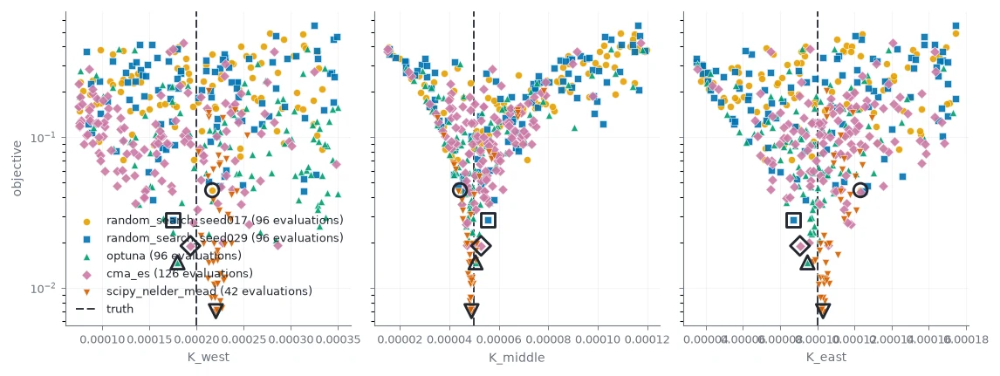
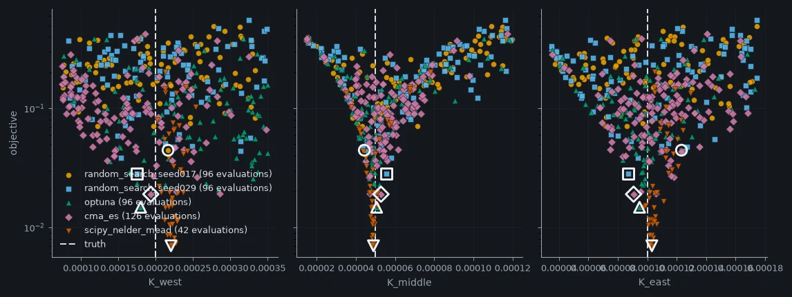
Schedule. This file: runs in Nightly / validation no PETSc. Jobs.
What the test does, all thresholds, the file
Test functions
- Calibration twin boussinesq fixed head piecewise k modflow6 benchmark recovers truth.
File tests/validation/calibration/test_twin_boussinesq_fixed_head_piecewise_k_modflow6.py. Markers: mf6, steady, validation.
One mesh-perturbed steady scalar-K twin on MODFLOW 6#
pass modflow6
Compared with: the parameter values that generated the synthetic observations of the twin experiment.
Last measurement
| Variant | Metric | Measured | Threshold | Share used | Share of the signal |
|---|---|---|---|---|---|
| - pass | grid: evaluations used | 11 | - | - | |
| grid: best fit, distance of K_global to the truth | 2.38e-06 | <= 2.5e-05 | 10% | ||
| random_search: evaluations used | 32 | - | - | ||
| random_search: best fit, distance of K_global to the truth | 1.39e-05 | - | - | ||
| random_search: closest sample, distance of K_global to the truth | 1.1e-05 | - | - | ||
| random_search: a sample within tolerance of the truth on every parameter | 1 | > 0 | 0% | ||
| random_search: best fit or a sample within tolerance of the truth | 1 | > 0 | 0% | ||
| optuna: evaluations used | 32 | - | - | ||
| optuna: best fit, distance of K_global to the truth | 1.24e-06 | - | - | ||
| optuna: closest sample, distance of K_global to the truth | 4.28e-07 | - | - | ||
| optuna: best fit or a sample within tolerance of the truth | 1 | > 0 | 0% | ||
| cma_es: evaluations used | 28 | - | - | ||
| cma_es: best fit, distance of K_global to the truth | 1.47e-06 | <= 2.5e-05 | 6% | ||
| scipy_nelder_mead: evaluations used | 30 | - | - | ||
| scipy_nelder_mead: best fit, distance of K_global to the truth | 1.73e-06 | <= 2.5e-05 | 7% |
Measured on 2026-10-13, commit 91d97cabd, version 2.0.0a5, the nightly CI job (job log).
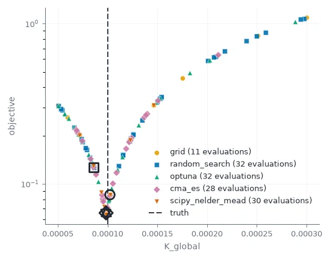
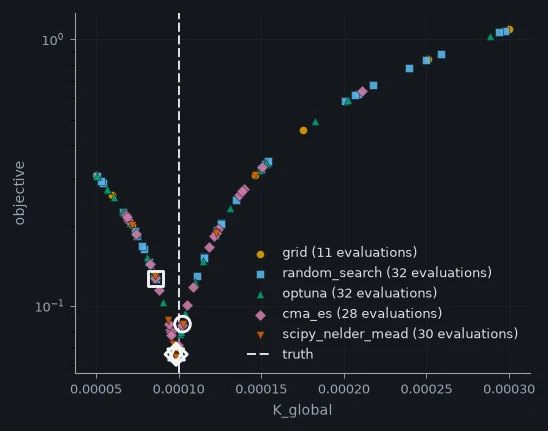
Schedule. This file: runs in Nightly / validation no PETSc. Jobs.
What the test does, all thresholds, the file
Test functions
- Calibration twin dupuit fixed head mesh perturbed modflow6 recovers truth under mesh mismatch.
File tests/validation/calibration/test_twin_dupuit_fixed_head_mesh_perturbed_modflow6.py. Markers: mf6, steady, validation.
Steady same-solver twin benchmark for calibration#
pass modflow6
Compared with: the parameter values that generated the synthetic observations of the twin experiment.
Last measurement
| Variant | Metric | Measured | Threshold | Share used | Share of the signal |
|---|---|---|---|---|---|
| Calibration twin dupuit fixed head modflow6 benchmark recovers truth pass | grid: evaluations used | 11 | - | - | |
| grid: best fit, distance of K_global to the truth | 2.38e-06 | <= 2e-05 | 12% | ||
| random_search: evaluations used | 24 | - | - | ||
| random_search: best fit, distance of K_global to the truth | 1.1e-05 | <= 2e-05 | 55% | ||
| random_search: closest sample, distance of K_global to the truth | 1.1e-05 | - | - | ||
| random_search: a sample within tolerance of the truth on every parameter | 1 | > 0 | 0% | ||
| optuna: evaluations used | 32 | - | - | ||
| optuna: best fit, distance of K_global to the truth | 4.28e-07 | - | - | ||
| optuna: closest sample, distance of K_global to the truth | 4.28e-07 | - | - | ||
| optuna: a sample within tolerance of the truth on every parameter | 1 | > 0 | 0% | ||
| optuna: best fit or a sample within tolerance of the truth | 1 | > 0 | 0% | ||
| cma_es: evaluations used | 28 | - | - | ||
| cma_es: best fit, distance of K_global to the truth | 4.37e-07 | <= 2e-05 | 2% | ||
| scipy_nelder_mead: evaluations used | 30 | - | - | ||
| scipy_nelder_mead: best fit, distance of K_global to the truth | 1.18e-11 | <= 2e-05 | 0% | ||
| scipy_nelder_mead: evaluations used | 20 | - | - | ||
| scipy_nelder_mead: best fit, distance of K_global to the truth | 2.15e-09 | <= 2e-05 | 0% | ||
| Calibration twin dupuit fixed head modflow6 fast grid search smoke pass | grid: evaluations used | 6 | - | - | |
| grid: best fit, distance of K_global to the truth | 2.38e-06 | <= 2e-05 | 12% |
Measured on 2026-10-13, commit 91d97cabd, version 2.0.0a5, the nightly CI job (job log).
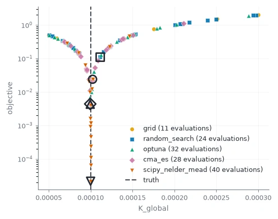
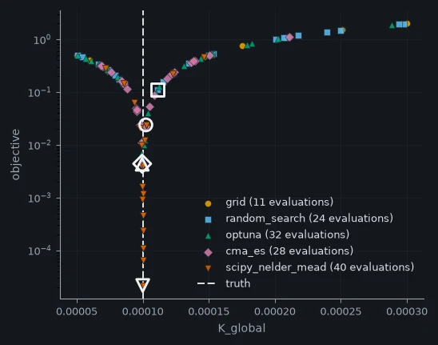
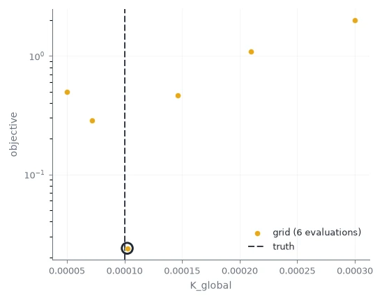
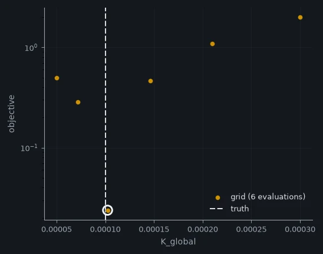
Schedule. This file: runs in Nightly / validation no PETSc, Tests / fast marker. Jobs.
What the test does, all thresholds, the file
Test functions
- Calibration twin dupuit fixed head modflow6 benchmark recovers truth.
- Calibration twin dupuit fixed head modflow6 fast grid search smoke.
File tests/validation/calibration/test_twin_dupuit_fixed_head_modflow6.py. Markers: fast, mf6, steady, validation, xdist_group.
Noisy steady scalar-K twin calibration on MODFLOW 6#
pass modflow6
Compared with: the parameter values that generated the synthetic observations of the twin experiment.
Last measurement
| Variant | Metric | Measured | Threshold | Share used | Share of the signal |
|---|---|---|---|---|---|
| - pass | grid: evaluations used | 11 | - | - | |
| grid: best fit, distance of K_global to the truth | 2.38e-06 | <= 2e-05 | 12% | ||
| random_search_seed007: evaluations used | 24 | - | - | ||
| random_search_seed007: best fit, distance of K_global to the truth | 1.1e-05 | - | - | ||
| random_search_seed007: closest sample, distance of K_global to the truth | 1.1e-05 | - | - | ||
| random_search_seed011: evaluations used | 24 | - | - | ||
| random_search_seed011: best fit, distance of K_global to the truth | 3.15e-06 | - | - | ||
| random_search_seed011: closest sample, distance of K_global to the truth | 3.15e-06 | - | - | ||
| random_search_seed019: evaluations used | 24 | - | - | ||
| random_search_seed019: best fit, distance of K_global to the truth | 4.18e-06 | - | - | ||
| random_search_seed019: closest sample, distance of K_global to the truth | 4.18e-06 | - | - | ||
| optuna: evaluations used | 32 | - | - | ||
| optuna: best fit, distance of K_global to the truth | 9.85e-07 | - | - | ||
| optuna: closest sample, distance of K_global to the truth | 4.28e-07 | - | - | ||
| cma_es: evaluations used | 28 | - | - | ||
| cma_es: best fit, distance of K_global to the truth | 5.95e-07 | <= 2e-05 | 3% | ||
| scipy_nelder_mead: evaluations used | 30 | - | - | ||
| scipy_nelder_mead: best fit, distance of K_global to the truth | 3.59e-07 | <= 2e-05 | 2% | ||
| random_search: runs within tolerance of the truth, out of 3 | 3 | > 1 | 0% | ||
| random_search: runs with a sample within tolerance, out of 3 | 3 | > 1 | 0% |
Measured on 2026-10-13, commit 91d97cabd, version 2.0.0a5, the nightly CI job (job log).
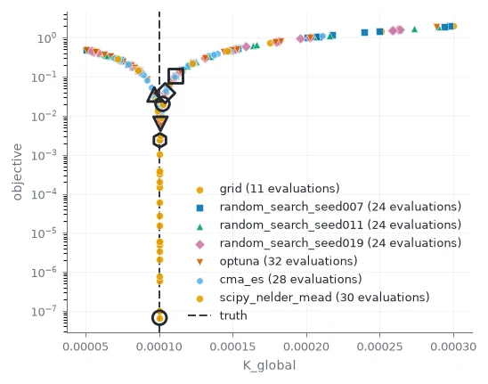
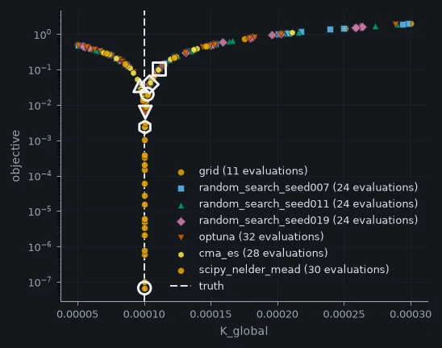
Schedule. This file: runs in Nightly / validation no PETSc. Jobs.
What the test does, all thresholds, the file
Test functions
- Calibration twin dupuit fixed head noisy modflow6 benchmark recovers truth.
File tests/validation/calibration/test_twin_dupuit_fixed_head_noisy_modflow6.py. Markers: mf6, steady, validation.
Posterior-oriented steady scalar-K calibration on MODFLOW 6#
pass modflow6
Compared with: the parameter values that generated the synthetic observations of the twin experiment.
Last measurement
| Variant | Metric | Measured | Threshold | Share used | Share of the signal |
|---|---|---|---|---|---|
| - pass | random_search: evaluations used | 24 | - | - | |
| random_search: best fit, distance of K_global to the truth | 1.1e-05 | - | - | ||
| random_search: closest sample, distance of K_global to the truth | 1.1e-05 | - | - | ||
| random_search: a sample within tolerance of the truth on every parameter | 1 | > 0 | 0% | ||
| optuna: evaluations used | 32 | - | - | ||
| optuna: best fit, distance of K_global to the truth | 4.28e-07 | - | - | ||
| optuna: closest sample, distance of K_global to the truth | 4.28e-07 | - | - | ||
| optuna: a sample within tolerance of the truth on every parameter | 1 | > 0 | 0% | ||
| optuna: best fit or a sample within tolerance of the truth | 1 | > 0 | 0% | ||
| cma_es: evaluations used | 28 | - | - | ||
| cma_es: best fit, distance of K_global to the truth | 4.37e-07 | <= 2e-05 | 2% | ||
| gp_mapping: evaluations used | 14 | - | - | ||
| gp_mapping: best fit, distance of K_global to the truth | 7.61e-07 | - | - | ||
| gp_mapping: closest sample, distance of K_global to the truth | 7.61e-07 | - | - | ||
| gp_mapping: a sample within tolerance of the truth on every parameter | 1 | > 0 | 0% | ||
| da_mh_gp: evaluations used | 82 | - | - | ||
| da_mh_gp: best fit, distance of K_global to the truth | 7.88e-08 | - | - | ||
| da_mh_gp: closest sample, distance of K_global to the truth | 7.88e-08 | - | - | ||
| da_mh_gp: a sample within tolerance of the truth on every parameter | 1 | > 0 | 0% |
Measured on 2026-10-13, commit 91d97cabd, version 2.0.0a5, the nightly CI job (job log).
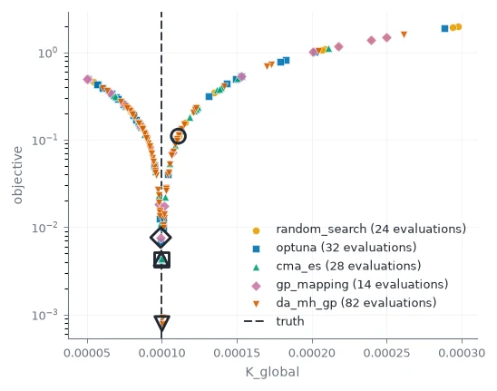
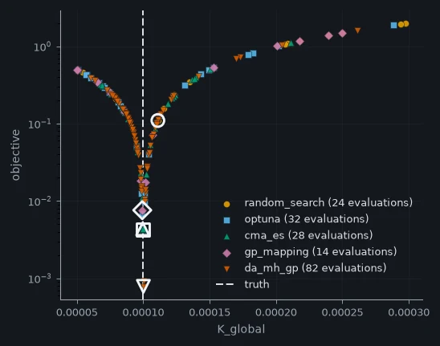
Schedule. This file: runs in Nightly / validation no PETSc. Jobs.
What the test does, all thresholds, the file
Test functions
- Calibration twin dupuit fixed head posterior modflow6 distribution methods cover truth.
File tests/validation/calibration/test_twin_dupuit_fixed_head_posterior_modflow6.py. Markers: mf6, steady, validation.
Wiring smoke test of six calibration methods on a flux-only K+Sy twin, MODFLOW 6#
pass modflow6
Compared with: the parameter values that generated the synthetic observations of the twin experiment.
Last measurement
| Variant | Metric | Measured | Threshold | Share used | Share of the signal |
|---|---|---|---|---|---|
| - pass | random_search: evaluations used | 6 | - | - | |
| random_search: best fit, distance of K_global to the truth | 3.15e-06 | - | - | ||
| random_search: closest sample, distance of K_global to the truth | 3.15e-06 | - | - | ||
| random_search: best fit, distance of Sy_global to the truth | 0.0137 | - | - | ||
| random_search: closest sample, distance of Sy_global to the truth | 0.00193 | - | - | ||
| optuna: evaluations used | 6 | - | - | ||
| optuna: best fit, distance of K_global to the truth | 4.89e-05 | - | - | ||
| optuna: closest sample, distance of K_global to the truth | 4.68e-05 | - | - | ||
| optuna: best fit, distance of Sy_global to the truth | 0.0284 | - | - | ||
| optuna: closest sample, distance of Sy_global to the truth | 0.0185 | - | - | ||
| cma_es: evaluations used | 6 | - | - | ||
| cma_es: best fit, distance of K_global to the truth | 2.02e-05 | <= 0.00016 | 13% | ||
| cma_es: best fit, distance of Sy_global to the truth | 0.000115 | <= 0.4 | 0% | ||
| scipy_nelder_mead: evaluations used | 6 | - | - | ||
| scipy_nelder_mead: best fit, distance of K_global to the truth | 2.38e-06 | <= 0.00016 | 1% | ||
| scipy_nelder_mead: best fit, distance of Sy_global to the truth | 0.00137 | <= 0.4 | 0% | ||
| gp_mapping: evaluations used | 6 | - | - | ||
| gp_mapping: best fit, distance of K_global to the truth | 4.26e-05 | - | - | ||
| gp_mapping: closest sample, distance of K_global to the truth | 2.01e-05 | - | - | ||
| gp_mapping: best fit, distance of Sy_global to the truth | 0.0385 | - | - | ||
| gp_mapping: closest sample, distance of Sy_global to the truth | 0.000692 | - | - | ||
| da_mh_gp: evaluations used | 4 | - | - | ||
| da_mh_gp: best fit, distance of K_global to the truth | 4.98e-05 | - | - | ||
| da_mh_gp: closest sample, distance of K_global to the truth | 3.6e-06 | - | - | ||
| da_mh_gp: best fit, distance of Sy_global to the truth | 0.0291 | - | - | ||
| da_mh_gp: closest sample, distance of Sy_global to the truth | 0.0291 | - | - | ||
| methods reaching their success target, among random_search, optuna, gp_mapping, da_mh_gp | 1 | > 0 | 75% |
Measured on 2026-10-13, commit 91d97cabd, version 2.0.0a5, the nightly CI job (job log).
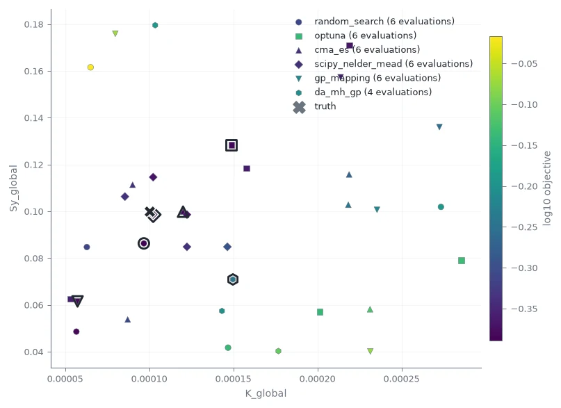
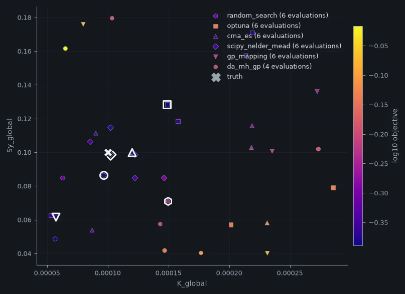
Schedule. This file: runs in Nightly / validation no PETSc. Jobs.
What the test does, all thresholds, the file
Test functions
- Calibration twin linearized recharge step flux only noisy modflow6 wiring smoke.
File tests/validation/calibration/test_twin_linearized_recharge_step_flux_only_noisy_modflow6.py. Markers: mf6, transient, validation.
Validation of K and Sy recovery by calibration methods on a transient twin, MODFLOW 6#
pass modflow6
Compared with: the parameter values that generated the synthetic observations of the twin experiment.
Last measurement
| Variant | Metric | Measured | Threshold | Share used | Share of the signal |
|---|---|---|---|---|---|
| - pass | random_search: evaluations used | 16 | - | - | |
| random_search: best fit, distance of K_global to the truth | 3.15e-06 | - | - | ||
| random_search: closest sample, distance of K_global to the truth | 3.15e-06 | - | - | ||
| random_search: best fit, distance of Sy_global to the truth | 0.0137 | - | - | ||
| random_search: closest sample, distance of Sy_global to the truth | 0.00193 | - | - | ||
| optuna: evaluations used | 40 | - | - | ||
| optuna: best fit, distance of K_global to the truth | 3.5e-07 | <= 1.5e-05 | 2% | ||
| optuna: closest sample, distance of K_global to the truth | 3.5e-07 | - | - | ||
| optuna: best fit, distance of Sy_global to the truth | 0.0155 | <= 0.04 | 39% | ||
| optuna: closest sample, distance of Sy_global to the truth | 0.00245 | - | - | ||
| cma_es: evaluations used | 40 | - | - | ||
| cma_es: best fit, distance of K_global to the truth | 1.87e-07 | <= 1.5e-05 | 1% | ||
| cma_es: best fit, distance of Sy_global to the truth | 0.00131 | <= 0.04 | 3% | ||
| scipy_nelder_mead: evaluations used | 12 | - | - | ||
| scipy_nelder_mead: best fit, distance of K_global to the truth | 2.38e-06 | <= 1.5e-05 | 16% | ||
| scipy_nelder_mead: best fit, distance of Sy_global to the truth | 0.00137 | <= 0.04 | 3% | ||
| gp_mapping: evaluations used | 16 | - | - | ||
| gp_mapping: best fit, distance of K_global to the truth | 1.67e-06 | - | - | ||
| gp_mapping: closest sample, distance of K_global to the truth | 9.4e-07 | - | - | ||
| gp_mapping: best fit, distance of Sy_global to the truth | 0.0171 | - | - | ||
| gp_mapping: closest sample, distance of Sy_global to the truth | 0.0129 | - | - | ||
| da_mh_gp: evaluations used | 30 | - | - | ||
| da_mh_gp: best fit, distance of K_global to the truth | 2.73e-07 | - | - | ||
| da_mh_gp: closest sample, distance of K_global to the truth | 2.73e-07 | - | - | ||
| da_mh_gp: best fit, distance of Sy_global to the truth | 0.00198 | - | - | ||
| da_mh_gp: closest sample, distance of Sy_global to the truth | 0.00198 | - | - |
Measured on 2026-10-13, commit 91d97cabd, version 2.0.0a5, the nightly CI job (job log).
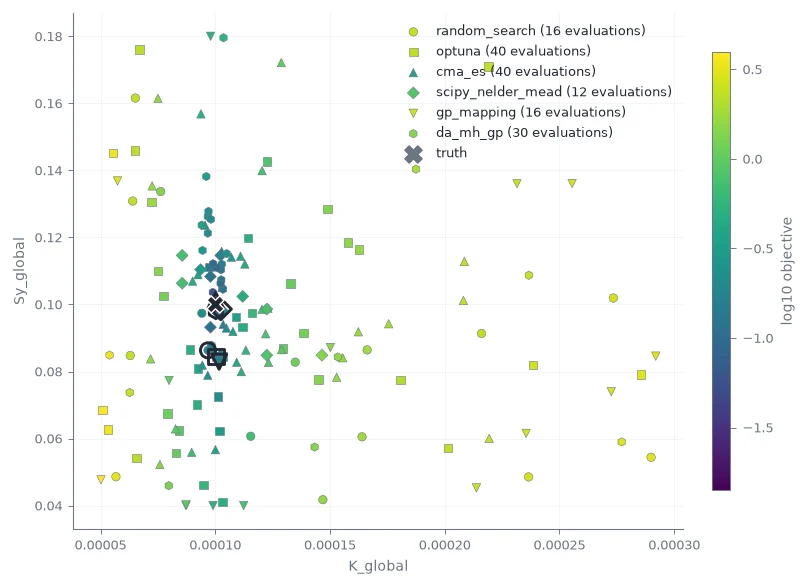
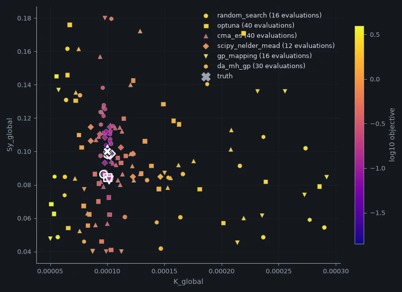
Schedule. This file: runs in Nightly / validation no PETSc. Jobs.
What the test does, all thresholds, the file
A MODFLOW 6 run with K = 1e-4 m/s and Sy = 0.10 under a recharge step gives the head at mid-aquifer and the outlet discharge. Each method then searches K in [5e-5, 3e-4] and Sy in [0.04, 0.18] from those two series alone. This is the one well-posed two-parameter transient calibration of the suite: the head series constrains Sy and the discharge series constrains K. CMA-ES, Nelder-Mead and Optuna are asserted to land within the case tolerance of the truth (1.5e-5 on K, 0.04 on Sy). Random search, GP mapping and DA-MH-GP also run; their distances to the truth are recorded for information and not asserted, because their budget does not guarantee a hit on a smooth two-parameter surface.
Test functions
- Calibration twin linearized recharge step modflow6 benchmark recovers truth.
File tests/validation/calibration/test_twin_linearized_recharge_step_modflow6.py. Markers: mf6, slow, transient, validation.
Twin experiment for the stream-network criterion of Abherve et al. (2023)#
pass modflow6
Compared with: the hydraulic conductivity of the run that produced the mapped network.
Last measurement
| Variant | Metric | Measured | Threshold | Share used | Share of the signal |
|---|---|---|---|---|---|
| A network only bisection recovers the conductivity that made the network pass | Relative error of the recovered K | 0.00452 | <= 0.01 | 45% | |
| Signed distance gap at the best K | 0 m | <= 2 m | 0% | ||
| Relative error of the saturation length | 0.000161 | <= 0.001 | 16% | ||
| The mapped network projects back onto the cells it was written from pass | no metric recorded; the asserts of the test decide | ||||
Measured on 2026-10-13, commit 91d97cabd, version 2.0.0a5, the nightly CI job (job log).
Schedule. This file: runs in Nightly / validation no PETSc. Jobs.
What the test does, all thresholds, the file
A model run with a known conductivity produces a seepage network. That network, written as the mapped one, must bring a network-only bisection back to the conductivity that produced it. Nothing else in the suite runs the criterion end to end on a real solve: the unit tests fake the trial context, and a real catchment has no known answer.
The catchment is a planar hillslope, one row of 400 square cells of 2 m, over a 30 m aquifer parallel to the surface. Under uniform recharge R the water table reaches the surface where the recharge collected upslope exceeds what the full aquifer can carry, K * d * slope: the seepage face starts at about K d s / R from the divide, so the network retracts by one cell per cell / (K d s / R) of relative K, about 0.56 per cent here. That step is the resolution of the criterion. It is kept below the one per cent the bisection stops on, so the recovered value can be held to that one per cent whether the search lands on the zero plateau or closes its bracket around it.
The drains sit on the surface with the fallback conductance, proportional to K, which is what makes the network a function of K/R alone. The mapped network is the downstream closure of the seepage cells, built by the same functions the criterion calls, and its round trip through the GPKG back onto the mesh is checked cell for cell before any calibration runs. The round trip goes through the resolver and observed_network_mask under the crossing rule, the route a stream_geometry_path takes in a calibration trial. The calibration sets that rule: the default, heads, needs a drained area this hillslope never reaches.
What this twin cannot see: on a single row no two network cells meet only at a corner, so the crossing and the touch rules give the same mask here. The diagonal-step bias the crossing rule exists to remove is covered by the unit tests of line_crossing_cell_mask, not by this experiment.
Tolerances: tests/TOLERANCES.md, rows 76 to 79.
Thresholds from tests/TOLERANCES.md
- Row 76: Twin stream-network calibration (MF6, planar hillslope, 400 cells of 2 m),
|K - K_true| / K_trueat the returned trial, and the same onk_over_ragainstK_true / R:<= 1 %(Derived. The bisection stops on a bracket no wider thanlog10(1.01). The zero plateau ofJ, the K range that reproduces the mapped network cell for cell, is one cell over the length of the unsaturated slope,cell / (K d s / R)= 2 m / 357 m = 0.56 %, measured between 5.99e-6 and 6.03e-6 m/s. A returned trial on the plateau is within 0.56 % ofK_true; one off it is an end of a closed bracket that holds the plateau, so within 1 %) - Row 78: Twin stream-network calibration (MF6),
d_sat_mat the returned trial against the truth run:rel <= 1e-3(Derived. The sweep givesd dsat / d ln Kof about 1.06 m around the truth, so 1 % on K movesdsatby 0.011 m, 3.6e-4 of 29.47 m; the band is 2.8 times that) - Row 79: Twin stream-network calibration (MF6),
k_optim_m_s,k_over_r,t_over_r_m,t_optim_m2_sagainstK,R_mean_m_sandd_sat_mof the returned trial:rel 1e-12(Machine epsilon. Each is one product or quotient of values the report read off that trial)
Test functions
- The mapped network projects back onto the cells it was written from.
- A network only bisection recovers the conductivity that made the network.
File tests/validation/calibration/test_twin_matching_stream_network_modflow6.py. Markers: mf6, steady, validation, xdist_group.
Two solvers on one catchment#
The cases above compare each solver with an exact solution. A catchment has
none, so the reference model of example 04 is run twice from the same file:
once with MODFLOW 6, once with MODFLOW-NWT. Only the solver of the flow process
changes. Both runs store their fields at full precision: the default compact
storage rounds these heads to steps of 1 to 2 mm, more than the gap between the
two solvers. tools/docs/figures/render_ex04_figures.py (group solvers) makes
both runs and draws the figures below; tools/docs/figures/figures.toml keeps
the command behind each one.
The aquifer of example 04 has the same thickness in every cell. Where the thickness changes from one cell to the next, MODFLOW 6 under Newton computes another horizontal conductance than MODFLOW-NWT, smaller where water flows from a thicker cell to a thinner one. MODFLOW 6 then reads a computational top that gives every cell the same thickness, and the two solvers agree again: the circular-island cases above show it on the Cartesian grid.
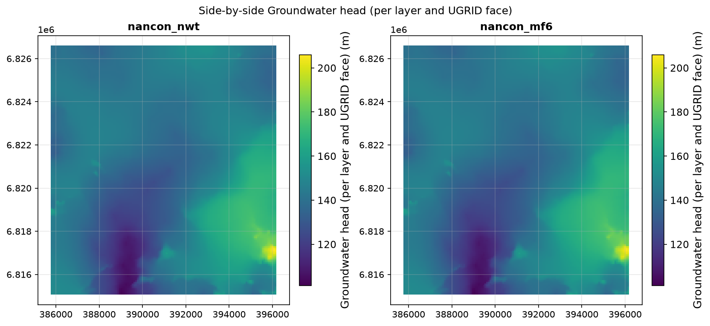
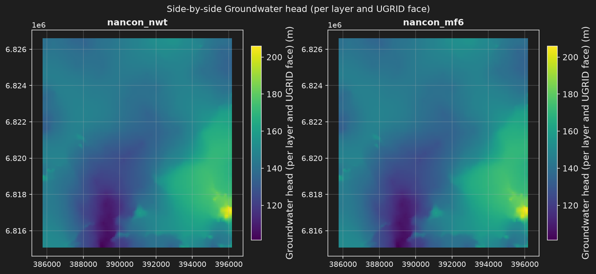
Fig. 69 Groundwater head at one date: MODFLOW-NWT on the left, MODFLOW 6 on the right, on one colour scale.#
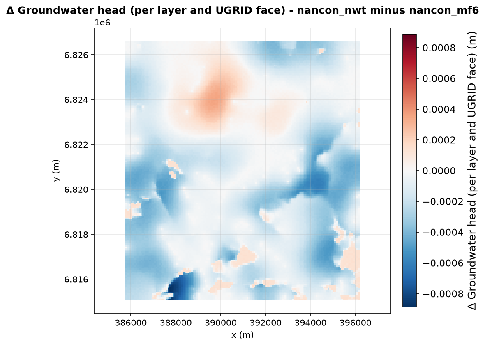
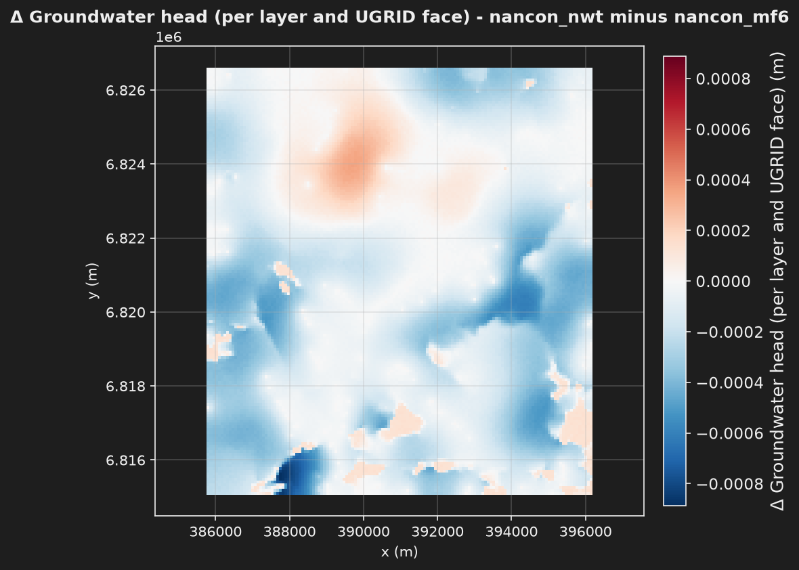
Fig. 70 Head of MODFLOW-NWT minus head of MODFLOW 6, cell by cell, at the same date.#